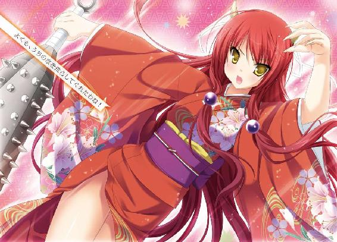

| ツノありっ！ 2<ツノありっ！> (MF文庫J) | |
| 阿智 太郎 & 鳴海 ゆう | |
| メディアファクトリー (2011) | |

ＭＦ文庫Ｊ
ツノありっ！２
藍奈さんは△△を好む!?
阿智太郎
口絵・本文イラスト●鳴海ゆう
第一話 お見舞い!? お見合い!? 鬼怒川家の大騒動！
１
湿り気を帯びた風が、窓から吹き込んできている。
時は六月の半ば。どうやら信濃市の入梅ももうまもなくといったところだ。
信濃市は長野県の南信に位置している街だ。山に囲まれているものの、決してド田舎ではない。中心部は都会にだって負けないぐらいに開けている。
そんな信濃市の外れにある天狗山の中腹。天狗山高校の校舎二階南側日当たり良好、風紀委員室にて少年は呟いた。
「ああ、平和だ」
夏服に身を包んだひょろりと背の高い少年だ。髪の毛は少しボサつく感じ。無造作ヘアと言えば聞こえはいいけれど、実際はあまり手入れをしていないだけだったりする。
あまり覇気ってのを感じさせない、力の抜けた表情の持ち主だ。
左腕には、『風紀委員』と書かれた腕章が装着されている。
彼の名前は武蔵野日高。ここ天狗山高校の二年Ｃ組の生徒。
現役バリバリの、風紀委員だった（本人は決して望んでやっているわけではないけれど）。
「ああ、平和だなあ」
もう一度日高は呟く。先ほどよりも実感ってのを込めて。
（怪物のお面で驚かされることもなければ、耳元で怖い話を聞かせられることもない。うっかり居眠りしても、顔に落書きされることもない。当然、弁当箱を同じ形のびっくり箱にすり替えられることもない。自転車の後ろに乗せられて山道の爆走に付き合わされることもなければ、首根っこを捕まれて天狗山の大木の天辺に連れてかれることもない）
別にこれは日高の被害妄想なんかじゃない。
実際に日高に対してそういうことしている方がいるのだ。
その方の名前は鬼怒川風香。
人呼んで鬼の風紀委員長。
正真正銘「鬼」の女の子だった。
日高もついこの間まで知らなかったのだけど、渡る世間にはわりと鬼が存在しているのだった。
とくにここ、長野県は日本一の鬼の名産地らしくかなりの数の鬼が人に紛れて暮らしているのだ。
さらに厄介なことに、鬼というのは基本的にＳっ気が強く、人間を怖がらせたり驚かしたりするのが大好物だったりする。
さらにさらに、年ごろの鬼の女の子の間では、人間の男を下僕にするのが常識だったりしているのだ。
そう、武蔵野日高は、風香の下僕にされてしまったのだ。おかげで、日高は前述のとおりの多大な迷惑をこうむっているのだった。
もし今ここに風香がいたとしたら、退屈しのぎに日高を怖がらせるか驚かせるかして悦に入っていただろう。
だけど風香はいない。今日というか、ここ数日間ずっと学校を欠席している。
そのおかげで、日高はこうやって平和を満喫しているのだった。
まさしく、鬼の居ぬ間に何とやら......だった。
「このままずっと風香先輩が休んでくれてればいいのに」
半ば冗談、半ば本気で日高がそう口にした直後だった。
「何てこと言ってんのよ！」
そんな叫びと共に、日高の後頭部に衝撃が走る。
「いって!?」
後頭部をさすりさすり振り向くと、丸めた雑誌を手にした一人の女子生徒が立っていた。
髪の毛を頭の左側でちょこんと結んでいる。負けん気の強そうな顔立ちが特徴的な少女だ。
風紀委員の一年、尾道京子だ。何かと日高につっかかってくることの多い困った後輩だった。
「いきなり何するんだよ、尾道」
不機嫌そうに日高は唇を尖らせた。
「何するんだよじゃないわ！ 武蔵野日高！」
怒り心頭といった様子だ。
ちなみに、タメ口なのと日高のことを呼び捨てにするのはいつものことだ。その点に関しては今更腹を立ててもしょうがない。日高としてはすでに諦めていた。
「風香お姉様がずっと休んでればいいだなんて、よくもまあそんなヒドいことが言えるわね！ アタシはもう心配で心配でたまらないって言うのに」
これでもかってくらいに京子が顔を曇らせる。
「携帯にいくらかけても出てくれないし、メールの返事だってないし、家の電話番号は分からないし。ああ、もし風香お姉様が悪い病気とかだったら......」
不安を募らせる京子。
風香ＬＯＶＥを公言してはばからない京子だから、よけいに心配なのだろう。
だけど、風香の無敵っぷりを知っている日高としてはどの可能性も違うような気がした。
（病気......か。病原菌の方が逃げ出しそうだな。交通事故もありえないぞ。絶対車の方が壊れるだろうし。事件に巻きこれたってのも可能性としては低いな。事件を起こしたってなら納得できるけど。だって、だって、鬼だから）
そんなことを考える日高を、京子が非難するような目つきで見る。
「何よ、一人だけ涼しい顔して。やっぱり風香お姉様のことが心配じゃないのね!? 武蔵野日高、あんたはそんな薄情な人間だったのね！」
延々と責められるのも疲れるから、日高は適当に首を振った。
「そんなことない。心配に決まってるさ。だってもう一週間になるんだからな」
大袈裟に日高は嘆いて見せる。
「ああ、風香先輩、大丈夫かな？ お見舞いにでも行けたらいいんだけど」
思えば、これが失言だった。
「お見舞い!?」
京子が素っ頓狂な声を上げた。そして、大きく頷く。
「そうよ！ お見舞いよ！ どうしてそれに気づかなかったのよ！ 今こそ風香お姉様の家を訪ねる時なのよ！」
（何だか妙な雲行きになってきたな）
って日高は思った。そしてそれは正しかった。
「武蔵野日高！ これから風香お姉様の家にお見舞いに行くわよ！」
完全命令口調で京子は言い放った。
（風香先輩の......家......）
日高は背筋がゾゾッと寒くなるのを感じた。
風香が鬼なんだから、当然家族だって鬼に決まっている。ひょこひょことやって来た人間を、自分の嗜虐心を満足させるための生贄にすることだって十分考えられる。
せっかく平和を満喫しているのだ。わざわざそんな恐ろしいところになんか行きたくなかった。
「風香先輩のお見舞いに行きたいのはやまやまなんだけど、ほら、放課後の最終見回りなんかもあるし俺はちょっと無理そうだな。代表ってことで尾道一人で行ってくれよ」
完璧な言い訳だと思ったけど、京子は納得してくれなかった。
「見回りなんて、町田先輩や喜多方先輩に頼んどけばいいだけじゃない」
二人とも風紀委員の男子メンバーだ。学年は日高と同じ二年生。
放課後の見回りはローテーションで行われる。基本日高は毎日だけど、他のメンバーは日替わりだ。
町田と喜多方の二人で言えば、今日はオフの日だ。風紀委員とかけもちで行っている写真部の方に行っているだろうから、軽く声をかければ見回りも引き受けてはくれるだろう。
「だったら、町田や喜多方を誘ってお見舞いに行けばいいんじゃないか？」
そんな提案をしてみるものの、京子は強く首を振る。
「アタシは、あんたと一緒がいいのよ！」
叫んでから、京子はあわあわとした。
「つまり、こういうことよ！ もし風香お姉様が病気で臥せってたとしてみなさいよ。でっぷりと太った町田先輩が行ったとしたら圧迫感で病気が悪化しちゃうでしょ？」
「だったら喜多方は？ あいつならガリガリに痩せてるから圧迫感なんてないだろ？」
「ダメよ！ 逆に見てて心配になっちゃうでしょ？ そのせいで病気が悪化したらどうするの!?」
実に滅茶苦茶な論理だ。
どうも腑に落ちないといった顔つきの日高に、京子はたたみかけるように言った。
「以上そういった理由で、一緒にお見舞いに行くのは武蔵野日高、あんたで決定！ 分かったわね!?」
どうやら京子を論破するのは難しそうだった。
（ま、僕一人ならともかく、尾道も一緒だったらそうひどいことにはならないだろう。それに、ひょっとしたら本当に風邪でもひいて寝込んでるのかもしれないし）
心の中で付け加える。
（鬼の攪乱って言葉もあるぐらいだしな）
仕方ないと言った様子で日高は頷いた。
「分かったよ。お見舞いに行くか」
「当然よ！ それでこそ風紀委員の一員よ！」
京子が顔を明るくする。
「そうと決まったらすぐに出発よ！ あ、町田先輩と喜多方先輩に見回りのこと頼まなきゃね。いいわ、アタシが行ったげる。あんたじゃもたもたして出発が遅くなりそうだから」
風紀委員室を出ようとする京子に、日高はところでと前置きし尋ねた。
「風香先輩の家ってどこなんだ？ 片道どれぐらいかかるか知っときたいんだけど」
「えっ？」
京子が足を止めた。キョトンとした顔で日高を見る。
「ちょっと待ってよ、てっきりあんたが知ってると思ってたのに。それじゃどうやって行くのよ」
どうやら、京子も風香の家がどこにあるのか知らないようだ。
「風香先輩から家がどこなのか聞いたことないのか？」
日高の問いに、京子が難しい顔で考え込む。
「一緒に学校を出たこともあるけど、駅には向かってなかったわ。バス停も素通りしてたし。実は学校のすごく近くなのかもと思ったりもしたけど、それも違うみたいなのよね。だって、この辺りの中学に通ってた友達もいるけど、風香お姉様が同中だったって聞いたことないしね」
放課後のお見舞い計画は、いきなりデッドロックに乗り上げてしまったようだ。
風香をこれだけ追いかけている京子が知らないのだ。他の風紀委員メンバーが知っているとも思えない。
「ま、住所が分からないなら仕方ないよ。お見舞いはまた今度ってことに」
さっさと諦める日高を京子が睨む。
「諦めるのが早すぎるわよ！ 武蔵野日高！ 先生に聞くとか、三年生に聞き込み調査するとか、いろいろと方法があるでしょーが！」
日高は露骨に『面倒臭い』って顔をした。それが京子には気に入らなかったようだ。
「あんたはやっぱり風香お姉様のことが心配じゃないんだわ!? そういう薄情な人間だったのね!?」
再度日高が非難の的にされている時だった。
「失礼します」
そんな丁寧な言葉と共に、一人の女子生徒が風紀委員室に入ってくる。
ふわふわとした髪の毛の小柄な少女だ。腕には『風紀委員』の腕章が装着されている。
れっきとした風紀委員なのだけど、まるで余所の教室に入ってきたかのようにおどおどとしていた。
一年生の春木真夕だ。控えめで大人しい性格の持ち主。その小柄で可愛らしい雰囲気から、風紀委員のマスコット的な存在の少女だ。
「あ、まゆっち。いいところに来たわ」
京子が真夕へと顔を向ける。
「これから、風香お姉様の住所を調べようと思うの。まゆっちも協力して」
「鬼怒川センパイの住所ですか？」
真夕は大きめの瞳をパチクリとさせ言った。
「それならわたし、知ってますけど」
「えっ!?」
予想していなかったのだろう。京子が目を丸くする。
「まゆっち、今何て言ったの？ 風香お姉様の住所を知ってるみたいに聞こえたんだけど」
「知ってますよ。鬼怒川センパイの住所」
さも当然といった様子で、真夕は答えた。
風香の住所を真夕が知っていることに関して、日高は別に何の疑問も覚えなかった。むしろ当然のことのようにも思える。
（真夕ちゃんは、風香先輩と同じ業界の方だからなあ）
苦笑しながら、心の中で呟いた。
この業界ってのは、もちろん『鬼業界』のことだ。
引っ込み思案を額縁に入れて飾ったような真夕の正体は、実は風香と同じ鬼。
鬼としての血は薄く、他の鬼程にはＳっ気はないけれど、それでも風香の被害にあっている日高を見てニヤニヤしている困った鬼の女の子なのだ。
だけど、真夕の正体を知らない京子には不可解でたまらない。
「どうしてアタシが知らない風香お姉様の住所をまゆっちが知ってるのよ？ これっておかしくない？」
悔しそうにブツブツと呟く。
京子がますます不機嫌になっていく。何だかとばっちりを受けそうだったから、日高は取りつくろうように声を出した。
「とにかく良かったじゃないか。これで余計な手間が省けたんだから」
「そ、そうよね。ラッキーだったわ」
とりあえず不満は忘れることにしたのだろう。京子は真夕に笑顔で言った。
「これから、風香お姉様のお見舞いに行こうかって話してたの。まゆっち、暇だったら案内してくれない？ 住所を教えてくれるだけでもいいんだけど」
「鬼怒川センパイの、家......ですか」
真夕が顔を曇らせた。
「遠いですよ。それに、行ったら京子ちゃんも武蔵野センパイも驚いちゃいますよ。ひょっとしたら引いちゃうかもしれません。それでもいいんですか？」
「そんなのいいに決まってるわ」
真夕の言葉を適当に聞き流す。
「分かりました。そういうことでしたら案内します」
了解したとばかしに真夕が頷いた。
「でも、本当に遠いんです。今からだと暗くなっちゃうので、明日にしませんか？ 土曜日でお休みだし」
「そうね、その方が良さそうね」
京子が了承する。
「それじゃ、明日の十時に信濃駅に集合してもらっていいですか？」
「信濃駅に十時ね。分かったわ」
京子は日高に顔を向けた。
「武蔵野日高、あんたも大丈夫でしょ？ 生意気に予定があるなんて言ったって承知しないからね」
「幸い予定はないよ」
肩をすくめ日高が答える。
「それからお見舞いに何を持ってくか考えないとね。まゆっち、今からちょっとデパートに行こ」
「え、でも明日駅で買ってもいいんじゃ？ それにわたし、今日は放課後の見回りの日で」
「楽しみで楽しみでいてもたってもいられないのよ」
京子が真夕の手を掴む。
「武蔵野日高、放課後の見回りはまゆっちの分まで頑張ってね。それじゃ」
一方的にそれだけ言うと、京子は真夕を連れて風紀委員室を出て行った。
「せっかくの土曜日に、風香先輩の家に行かなくちゃならないなんてな」
やれやれと息を吐き出してから、ふとうかない顔になる。
（それにしても、真夕ちゃんが言ってたのってどういう意味なんだろ？）
真夕が先程口にした言葉を思い浮かべる。
『行ったら京子ちゃんも武蔵野センパイも驚いちゃいますよ。ひょっとしたら引いちゃうかもしれません』
「驚いて......さらに引いてしまう......か。うーん、何かそこはかとなく嫌な予感がする」
うかない顔付きで、呟く日高。
翌日、その嫌な予感は見事に的中してしまうのだった。
２
そして、翌日の昼過ぎ。
一台のバスが、山道のバス停に到着した。
バスが走り去った後、バス停に残されたのは日高と京子、真夕の三人だった。
もちろん休日だから制服姿じゃない。日高はズボンにＴシャツにシャツを軽く羽織っている。
京子はお洒落なチュニックに、ショートパンツを履いている。真夕は雰囲気にピッタリなワンピース姿だった。
もともと素材はいい二人だから、非常によく似合っている。京子の性格や真夕の正体を知っている日高でも、信濃駅で会った時はついドキンとしてしまったほどだった。
だけど、今はそんな余裕はない。
だって、とてつもなく気持ち悪いのだもの。
「うっぷ、吐きそうだ」
道路脇の草むらにしゃがみ込み、日高は青ざめた顔で呟く。
情けないと日高を責めるのは酷と言うものだ。長い間曲がりくねった道をバスで揺られ続けたのだから。
「遠いとは聞いてたけど、まさかこれほどとは」
信濃駅から電車に乗りひたすら山の方へと向かうこと一時間あまり。降りた小さな駅からバスに乗り山道を登ることやっぱり一時間あまり。
待ち時間も含めると、たっぷり二時間以上はかかっている。
そもそもここは信濃市じゃない。その隣の隣にある赤津村なのだ。
何もない山道の先にある、まるで外界から隔離されたような小さな村だった。
「鬼怒川センパイの家は、ここから少し歩いたところです」
真夕の言葉に、まだ先があるのかと辟易する日高。
だけど、京子はいたって元気だった。
風香の家に行けるってことで、興奮してテンションがかなり上がっている様子だった。
「ほら、武蔵野日高。男子のくせに情けないわね。モタモタしてると日が暮れるわ！」
無責任に日高にハッパをかけると、
「まゆっち。こっち？ こっちね、さあ、あとちょっとよ！」
意気揚々と坂道を登っていく。
「武蔵野センパイ、大丈夫ですか？」
真夕が心配そうに尋ねる。
「ああ、まあ何とかね」
まだ気持ち悪いのは残っていたけれど、バスで揺られていた時に比べると大分マシになっていた。
日高は立ち上がり歩き出す。
「風香先輩、毎日こんな苦労をして高校に通ってたのか」
「いえ、いつもは車で送り迎えしてもらってるはずですよ。それなら一時間ちょっとですむからって」
そこで真夕は小声で囁く。
「本当は、鬼の力で自転車をこいだ方が早いと思うんですけどね。でも、さすがにそういうわけにもいきませんよね」
確かに真夕の言うとおりだ。鬼が自転車をこいでいたら話題にならないはずがない。
「真夕ちゃんが昨日言った意味がよっく分かったよ。風香先輩がこんな山奥に住んでたなんて驚きだし、それにこの遠さにはちょっと引いたよ」
苦笑しながら呟く日高に、真夕はキョトンとした顔を見せる。
「あの、武蔵野センパイ。わたしが驚くとか引くとか言ったのは、鬼怒川センパイの家の場所のことじゃないですよ」
「えっ？ それじゃ何？」
「センパイの家の、家業です」
直後、真夕が前方を指差した。
「あ、見えてきました。あそこが鬼怒川センパイの家です！」
そこには、どかんと立派な日本家屋があった。周りは高い土塀に囲まれている。それにしても巨大だ。まるで老舗旅館のようだった。
塀に沿って少し歩いた先に、大きな門が現れる。
時代劇に出て来る奉行所のそれのような固く閉ざされた門の脇には分厚い板の看板が掲げられていた。
力強い文字でこう書かれている。
『鬼怒川組』......と。
しばし言葉を失ってから、日高は絞り出すように言った。
「あの、真夕ちゃん。この組ってのはどういう意味なのかな？」
「見てのとおりの意味ですよ。鬼怒川センパイの家は極道のお家なんです。傘下にたくさんの組を従える業界でも大手の組なんですよ」
あっけらからんと真夕が答える。
（鬼ってだけでも驚きなのに、家が極道だったなんて）
日高は大いに驚いた。そして大いに引いた。
と同時に、かなり悪い予感がした。
「あ、真夕ちゃん。ちょっとこっちに」
門を見つめて硬直している京子から少し距離を開けてから、日高は小声で尋ねた。
「一応、聞くんだけど？ その、普通の極道なんだよね？」
普通の極道ってのも妙な言葉だけど仕方がない。
「まさかとは思うけど、組員にわりと鬼が交じってるとか言うんじゃ」
「そんなんじゃありませんよ」
真夕が否定してくれたから、少しだけホッとする日高。
だ・け・ど、
「鬼怒川組は、古くから歴史のある赤鬼の組織なんです。わりと鬼が交じってるとかじゃなくって、組員全員鬼なんです。それも赤鬼の流れを汲む方達ばかりです。わたしみたいに、色がなくなってしまった鬼なんか一人だっていないはずです」
事態は余計に悪かった。
極道ってだけでも大問題なのに、組員全員が鬼だなんて......。
追い打ちをかけるように、真夕はこう言った。
「まあ、この赤津村の住人自体が全員赤鬼なんですけどね。もともとここは赤角の里って名前で、赤鬼ばかりが住む集落だったんですから」
背筋が凍りつくんじゃないかってぐらいにゾゾゾゾっとした。
（い、いかん！ ここは人間が足を踏み入れてはいけない場所だったんだ！ ボヤボヤしていたら、冗談抜きで食われてしまうかもしれないぞ!?）
日高は続けて考える。
（そうだ、尾道はきっと極道ってことで怖がるはずだから、あいつを送るって理由で引き返そう。それが一番だ！）
すがるような瞳を京子へと向ける。
「風香お姉様のお家が、まさか極道のお家だったなんて......」
硬直していた京子がかすれた息を吐き出す。いい兆候だった。このまま悲鳴の一つでも上げてくれと日高は祈る。
だけど、京子の口から出たのは悲鳴は悲鳴でも感激の悲鳴だった。
「尾道京子、感激です！ 極道の女だなんて、風香お姉様ってば格好良すぎます！」
駄目だこりゃ......だった。
（ええい、こうなったら俺一人でもどうにか逃亡するしかない。尾道一人を残していくことは気になるが、真夕ちゃんがいるんだ。食われることはないだろう）
風香の家について、京子がすごい勢いで真夕に質問している。チャンスは今しかない。
土塀に沿って、こそこそと来た道を引き返し始めた直後だった。
ガサガサという物音が頭上からした。何かと思い見上げた日高が目にしたものは、土塀の天辺から今まさに飛び立とうとする着物姿の少女だった。
人間は、突然の出来事に脳が活性化され辺りがスローモーションのように見えることがあると言う。まさにこの時の日高がそうだった。
宙に舞った少女が、ゆっくりと自分に近付いてくる。
整った顔立ちの美少女だ。夕焼けのように真っ赤な着物がよく似合っている。絵に描いたような大和撫子と言った雰囲気だった。
こんな状況ながら、日高はつい見とれてしまう。
落下してくる少女もさすがに日高の存在に気づいていた。驚いたようにその瞳を大きくする。思いがけない場所で知り合いと出くわしたかのような顔だ。
（えっ!?）
この時になって日高はやっと気づいた。今現在、自分目がけて落下してくる少女の正体に。
（ふ、風香先輩!?）
次の瞬間、少女は日高に着地した。押し倒される形になり、日高は後頭部を地面に打ち付ける。
日高は疑問に思った。
（えっ？ 風香先輩、どうして着物!?）
さらに、疑問に思った。
（どうして、塀からジャンプ!?）
だけど、それらを尋ねるよりも前に、日高は意識を失ったのだった。
３
ゆっくりと、日高の意識が蘇っていく。
最初に見えたのは木目も美しい天井だった。
「あ、武蔵野センパイ。起きたんですね」
自分を覗き込む真夕の顔が見えた。
「まったく、本当は強いんだから、あれぐらいのことで気なんか失うんじゃないわよ」
ぶっきら棒に京子が言う。
（本当は強い？ 何のことだろ）
ちょっとした疑問を覚えるけれど、今は細かいことを気にしている場合じゃない。
日高はむっくりと起き上がり辺りを見る。
そこは趣のある和室だった。襖を開けた隣の部屋には、高級旅館で見かけるような和テーブルが置かれている。その上には、お茶とお茶菓子だ。
「ここは？」
「鬼怒川センパイのお家の中ですよ。気絶した武蔵野センパイは組員の人達にかつがれてここまで運んできてもらったんです」
真夕が説明する。
気絶したまま鬼達に運ばれたってのは何ともゾっとする話だ。連れてこられたのが厨房じゃなくて良かったと心の底からホッとする。
それと同時に、日高は重要なことを思い出した。
「そうだ、風香先輩は？ あの後どうなったんだ？」
日高の質問に、京子が判然としない顔を見せる。
「それが、良く分からないのよね。ちゃんと話をする前に、風香お姉様も組員の人達に連れられて家の中に入ってっちゃったから。それから会えてないし」
まあ、病気じゃないようだから少し安心したけれどと、京子は付け加える。
和服姿の風香、その姿のまま塀からジャンプ。相変わらず謎は謎のまま残されていく。
腕を組み、日高がうんと考え込んだ時だった。和室の襖が開かれる。入ってきたのは話題の主、和服姿の少女。
日高を下僕とした赤鬼の娘。鬼怒川風香その人だ。
だけど、和服姿ってのをさっぴいてもいつもと様子が違う。覇気ってのが感じられないのだ。
「風香お姉様！」
京子が甘ったるい声を出した。
「和服、すごく似合ってます。風香お姉様にピッタリですね！」
「ありがとう」
あまり嬉しくない様子でそう言うと、風香は畳の上に座った。
「で、三人とも何しに来たのかしら？」
「もちろん、風香お姉様のお見舞いに決まってます！ だって、ずっと学校を休んでたから。悪い病気じゃないかと思って」
京子が笑みを浮かべる。
「元気そうで良かったです」
「そんなに元気じゃないのだけどね」
風香が特大のため息をついた。
「あの、風香先輩」
いまだ解決されない疑問を、日高は口にする。
「どうして和服姿なんですか？ それに、あのジャンプは一体......」
「そうよね、気になって当然よね」
苦虫を噛み潰したような顔になる。
「口にするだけでも嫌なことなんだけどね」
そう前置きし、風香はこう言った。
「実は今日、お見合いがあるのよ」
「誰のです」
「私のよ。他に誰がいるって言うの？」
間抜けな質問をした日高を、風香が睨む。
「決まったのは先週末よ。もちろん私は嫌だって言ったわ。だけどお母さんが承知しなくって。私が逃げ出すかもしれないからってずっと閉じ込められてたのよ」
「そんな、ヒドイですよ」
京子が憤慨する。
おそらく彼女は、風香が家から出してもらえない程度の状況を想像しているのだろう。
だけど日高は違う。鬼となった風香のとんでもない怪力を知っているからよく分かる。
座敷牢や蔵なんてまだ生易しい。少なくとも、銀行の大型金庫室ぐらいの場所に閉じ込められていたのだって。
（苦労してたんだな、風香先輩）
しみじみと同情する。
「もうすぐお見合い相手が来るってことで、着物の着付けをされたのよ。今こそチャンスだって家を飛び出したんだけど......」
やれやれと首を振る。
「まさか、着地したところに日高クンがいたなんてね。おかげで驚いて足が止まっちゃったじゃない。本当なら今頃、どこかへ逃げられてたはずなのに」
非難っぽく言う。
（俺が悪いのか？ むしろ上から踏みつけられた被害者のような気がするけど）
理不尽に思うけど、相手は鬼だ。ここは納得するしかない。
「まあいいわ。まだチャンスがないわけじゃないんだから」
そう呟くと、風香は身を乗り出し小声で囁いた。
「悪いけど、私が逃げるのにちょっと協力してくれないかしら？ あたかも私がいるようにお喋りを続けてて欲しいのよ。なるべく大きな声で。その隙に床下から逃げるから」
「もちろんです！ 尾道京子、何だって協力します！」
京子がドンと胸を叩く。真夕もそれに続き頷いた。
「でも、あとで風香先輩を逃がしたってことがバレたりしたら、組の人達に何をされるか」
躊躇う日高に、風香が冷たい視線を向ける。
「なるほど、日高クンはそういう事を言うのね。今後のことをちゃんと考えてるのかしらね～」
下僕としての今後の扱いをチラつかせる。ていのいい脅迫だ。
組員は怖い。だけど風香だって厄介だ。学校で一緒にいる分、余計に質が悪い。
「わ、分かりました。協力します！」
超高速で日高がコクコクと頷く。
「ありがとう、それじゃ早速頼むわよ」
風香は畳をピシャリと叩いた。時代劇のワンシーンのように畳が跳ね上がる。
「わあ、風香お姉様、格好いいです！」
まさか鬼の力の為せる技とも思っていないから、京子がパチパチと拍手する。
そんな京子からは見えないよう畳を目隠しにする。風香の指先から鋭い爪が伸びた。鬼の力で床板をめくるつもりなのだろう。
しかし、そんな彼女の企みは見事に阻止される。
いきなり部屋の襖が開かれ、一人の女性が姿を現したのだ。
「あらあら、まだ性懲りもなく逃げ出そうとしているのね。往生際が悪いわよ。風香ちゃん」
和服姿の中年の女性だった。テレビに出てくる女優のように整った顔立ちで、その顔にはにこやかな微笑を湛えている。
「お、お母さん！」
風香が顔色を変える。学校では見せたこともないような焦りとか怯えといった表情だ。
日高達へと顔を向けると、風香の母親は畳の上にキッチリと正座した。
「風香の母、鬼怒川嵐子です。いつもうちの娘がお世話になっております」
「い、いえこちらこそ」
慌てて、日高達もその場に座り直し挨拶する。
「アタシは、風紀委員の後輩の尾道京子です。風香お姉様......じゃなくって、風香先輩にはすっごく良くしていただいているんです」
早口に京子が自己紹介する。
続いて、真夕が口を開いた。
「初めまして、春木真夕です」
ペコリと頭を下げる真夕に、嵐子がああと声を上げる。
「春木って言えば、鼎町の色なしさんの家だったわね。お会いできて嬉しいわ」
この流れで黙っているわけにもいかないから、日高も自分の名を口にした。
「風紀委員の後輩の武蔵野日高です」
「そう、あなたがね」
少しだけ日高を眺めてから、嵐子は申し訳なさそうな声を出した。
「せっかく来ていただいて悪いのだけど、風香はちょっと今日は用事があるの。みなさんのお相手はできそうも......」
「ちょっとお母さん！」
勇気を振り絞ったのだろう。風香が声を張り上げる。
「何度も言うようだけど、私はまだ結婚なんてする気がないの！」
「お黙り!!!」
嵐子が怒鳴った。
決して角は出していない。瞳だって金色にしていない。だけどその迫力は恐ろしい鬼のそれだった。
「いつまでもグダグダ言わないの！ あなたも鬼怒川家の娘ならさっさと覚悟を決めなさい！」
そのままの迫力で嵐子は続けた。
「そもそも、お母さんは生命保険のＣＭに出てくるようなほのぼのした専業主婦を夢見てたのよ。なのに、あなたが生まれてすぐにお父さんが亡くなっちゃって、組長にならざるをえなくなったわ。十六年もの間、慣れない極道の女を続けてきたお母さんの気持ちも考えなさい！」
ビリビリと空気を震わせてから、嵐子は笑顔で言った。
「そういうわけだから、風香ちゃん。あなたにはさっさと婿を取ってもらってその方に鬼怒川組を任せるの。お母さんは夢だった普通の専業主婦に戻るのよ」
「お母さんが苦労したってのは分かってるわ。だからって、私に全部押し付けるなんてひどいわよ！ 断固として私はこのお見合いを拒否するわ！」
風香の周りの空気が変わった。肌が総毛立つような殺伐としたものとなる。
「風香ちゃん、お母さんと本気でここでやりあうつもり？」
優しく、だけど底知れぬ恐ろしさを込めて嵐子が言う。
「でも、そうなったらここにいる大切なお友達が巻き込まれてしまうわね。春木の娘さんはまあ大丈夫でしょうけど、他の方はどうなってしまうかしら？」
「うっ......」
風香が悔しそうに歯噛みする。
「さ、着崩れた着物を直さなくっちゃね」
嵐子がパンパンと手を叩いた。組員達がわっと姿を現し、まるで胴上げでもするかのように風香を抱え上げる。
「また逃げられると困るから、本番ギリギリまで特別室にいてもらうわ。あ、言っとくけどお見合いって言ってもあなたに断る権利なんてないから。先方がうんって言えばすぐにでも結納よ」
「お、お母さんの鬼いいいいいいい!!!」
そんな叫び声を残しながら、風香は屋敷の奥へと連れて行かれる。
「とんだじゃじゃ馬娘ね。先方が気に入ってくださればいいけど」
ふうと息を吐き出してから、嵐子は硬直している日高達に顔を向ける。
「おほほほほ。ごめんなさいね、どたばたしてしまって。そういうわけで風香はみなさんのお相手ができないけど、それでも良かったらゆっくりしていってね」
にこやかな笑みでそう言うと、部屋を出て行く。
襖がピシャリと閉められた。
緊張から解放され、日高らは力が入っていた肩を落とす。
「さ、さすがは風香お姉様のお母様。すごい迫力だったわ」
額の汗を拭う仕草をしながら、京子が呟く。
「だけど、まゆっちの家って実は結構名家だったりするの？ 風香お姉様のお母様が知ってたみたいだし。それに、色なしさんって」
同じ鬼業界の住人として知っていただけだろう。色なしってのは、鬼としての色のことを言っていたに違いない。
もちろん、京子に説明できるはずもない。
「いえいえ、そんな名家なんかじゃありませんよ。たまたま知ってただけですって。色なしってのも、個性がないとか普通だとか、そんな意味なんじゃないですか？」
真夕が必死に言い訳をする。
「ふん、それじゃあれはどういう意味？ 少し険悪なムードになった時に、まゆっちだけは大丈夫みたいなこと言ってたけど」
「そ、それはですね......」
モゴモゴと口を動かしてから、真夕は半ば叫ぶように言った。
「わたし、何気に受身が得意なんです！」
（真夕ちゃん、がんばってるな）
苦しい言い訳を続ける真夕に、日高はエールを送りたくなる。
「ふうん、ま、いいわ。今はそんなことよりも風香お姉様のことよ！」
危機感を爆発させ京子が叫ぶ。
「どうするのよ！ このままじゃアタシの風香お姉様が結婚しちゃうわ！ そのまま学校を辞めちゃうなんてことも」
「でも、まだ決まったわけじゃないだろ？ 先方が気に入ればって話なんだし」
ボソっと呟く日高を、京子がすごい勢いで睨みつける。
「あの美しさなのよ！ 風香お姉様が気に入られないわけがないでしょーが！」
確かに、容姿だけを見れば風香はとびっきりの一級品だ。気に入られないはずがないだろう。
（でも、中身は鬼だからなあ。たまりかねた風香先輩がお見合いの席で角でも出したらさすがに相手だって......いや、待てよ）
日高は思い直す。
（風香先輩のお母さんは、婿に鬼怒川組を継がせるようなことを言ってたぞ。鬼怒川組は鬼の組織。ってことは、お見合い相手だって鬼に決まってるじゃないか）
となると、風香がいくらお見合いの席で角を出そうが牙を噛み鳴らそうが爪を振り回そうが瞳を金色に輝かせようが髪の毛を真っ赤に染めようが、そんな脅しはまったく通用しないことになる。むしろ、鬼から見ればそれすらも魅力的な部分かもしれないのだ。
「ああ、どうすればいいの。あの様子じゃ連れて逃げるのなんて絶対無理そうだし！」
室内をウロウロと歩き回りながら京子はブツブツと繰り返す。
「何かないの？ お見合いをぶっ壊してしまえるような何か」
和室の右と左を二、三度行ったり来たりしてから、京子は何かを思いついた様子でポンと手を打った。
「そうよ！ あれよ！ こういう時って言ったらやっぱりあの方法がセオリーじゃない！」
キラキラした瞳が、何故か日高に向けられる。
日高は超絶に嫌な予感がした。そしてそれは当たっていた。
ビシリと日高に指を突きつけると、京子は高らかに言い放った。
「武蔵野日高！ あんた、風香お姉様の恋人のフリをしてお見合い会場に乱入しなさいよ！」
「えええええええええ！」
無茶振りもいいとこな京子の提案に、日高は特大の『ええええええええ！』を響かせる。
「尾道！ お前、何言ってんだよ！ そんなことできるはずないだろ!?」
日高はさらに続ける。
「それにお前分かってるのか？ ただのお見合いじゃないんだぞ！ 極道のお見合いなんだぞ！ しかも！」
心の中で絶叫した。
（鬼同士のお見合いなんだぞ!!!）
「大丈夫よ！」
えらく自信たっぷりに京子が言う。
「少々物騒な展開になったとしても、あんたならどうにかできるでしょ？ だって強いんだから」
厄介なことに、京子は日高のことをメチャクチャ強いと誤解しているのだ。
「お前何言ってんだよ!? 俺が強いはずないだろ!? 体育の授業でどんなことになってるか知ってるのか!?」
必死にこの妙な誤解を解こうとする日高だけど、
「いいのいいの、秘密にしときたいっていうあんたの気持ちは分かってるから。アタシだって言いふらしたりしないし。そこは安心していいわ」
自分勝手にコクコクと頷いている。本当はちっとも分かってないのにだ。
「とにかく、あんたは風香お姉様の恋人のフリをしてこのお見合いをぶち壊すの！ もちろん、あんたみたいなのが風香お姉様の恋人役をやるなんて我慢ならないわ！ でも、こればっかりはアタシにもまゆっちにも無理だし、あんたに任せるしかないのよ！」
ぐいのぐいのと京子が迫ってくる。壁に追い詰められ、日高にはもう逃げ場がない。
「やるでしょ!? やるわよね!? やるって言いなさいよ！」
容赦なく日高を追い詰めていた京子だったけど、不意に「うっ」と声を上げる。そのまま糸の切れた操り人形のようにその場に倒れこむ。
その後ろには、手をチョップの形にした真夕の姿があった。
瞳は金色に染まり、頭の天辺からはちょこんと可愛いらしい角が一本生えている。紛れもない鬼の姿だった。
「大丈夫ですよ、ちょっと気絶させただけですから」
風香に比べると血も薄く力も弱いという真夕だけど、人間一人気絶させてしまうのは造作もないことのようだ。
日高はふうと安堵の息を吐いた。
「助かったよ、真夕ちゃん。とんでもないことをさせられるとこだった」
地獄に仏とばかしに救われた気分の日高だけど、真夕がゆっくりと首を横に振る。
「誤解しないでください。武蔵野センパイを助けるために京子ちゃんを眠らせたんじゃありません。ここから先は鬼の秘密に触れる可能性があったからです」
にふふふふふと、真夕が笑った。あんまり健全でない笑いだ。
どうやら、地獄に仏じゃなくって地獄に鬼だったようだ。
「お見合い妨害、面白いじゃないですか。わたし、ワクワクドキドキしちゃいます」
金色の瞳をキラキラさせる真夕。
「まずはいろいろと準備しなくちゃいけませんよね。お兄ちゃん達にお使いを頼まなくっちゃです」
意気揚々といった感じに、真夕は携帯でどこぞに電話をかける。
「あ、真一お兄ちゃん。ちょっとこれから面白いことがあるんだけど、協力してくれないかな？ 真二お兄ちゃんにも声かけてくれると嬉しいんだけど」
何か良からぬことを計画しているのは間違いなかった。
日高がその計画に組み込まれていることも間違いなかった。
日高の中の危険信号がビーコンビーコンと鳴り響いていた。
（ここは、逃げた方が良さそうだぞ）
本能的にそう察した日高は、こそこそとその場から逃げ出そうとする。
だけど、その腕が真夕によってガッチリと掴まれる。ほっそりとした真夕の腕。だけどその力は万力で締め付けられているようだ。
「駄目ですよ。武蔵野センパイにはこれからちょっと変身してもらうんですから。そしてお見舞いに乱入するんです。うひひひひ」
もちろん、日高は叫んだのだった。
「真夕ちゃんの、鬼いいいいいいい!!!」
って。
４
日当たりのいい南向きの座敷に、風香は正座をしていた。
開け放たれた大きな窓からは、よく手入れのされた日本庭園が見えた。吹き込んでくる涼しい山風に混じり、鹿威しの音も聞こえてくる。
お見合いのロケーションとしては最高だろう。
座卓の向こう側には、いかつい顔つきでがっちりとした体格の男が座っている。年は風香よりもずっと上だ。二十代後半、もしくは三十を少し超えたぐらいだろう。
この粗野な雰囲気の男こそ、風香のお見合い相手だったりする。
「オレ様は火打石泰蔵だ。よろしくな」
男は、体格に似合った野太い声でそう自己紹介した。
自分のことをオレ様だなんて言ってる段階でどうしようもない勘違い男なのが窺える。
実は鬼にはこういったタイプが多いのだ。
「ほら、風香ちゃん。あなたも自己紹介しなさい」
隣に座る嵐子にせっつかれ、渋々といった様子で風香は口を開く。
「鬼怒川風香です」
それだけ言うと、プイッとそっぽを向く。
「すみませんね。この娘ったら緊張しちゃってて。こういった席に不慣れだから」
おほほほほと、嵐子が余所行きの声を出して笑う。
「いやいや、お気になさらずに」
返したのは嵐子の真向かいに座るお見合い相手の父親だった。息子とよく似たがっちりとした体格といかつい顔の持ち主だった。
「風香ちゃん。火打石さんところは、静岡では名の知れた組なのよ。もちろん、由緒正しい赤鬼の血筋なのは言うまでもないわ」
ぺらぺらと嵐子が説明する。
「ところで火打石さん。確認なのですけど、泰蔵さんが婿に来てくれるということでよろしいんですね」
「もちろんですとも」
お見合い相手の父親、火打石がどうま声を響かせ頷く。
「こいつは次男ですからね、何の心配もいりません。赤鬼極道の総本山とも言われる鬼怒川組の末席にでも加えていただけるなら喜んで」
「まあ、末席だなんてとんでもありません。泰蔵さんには組長として鬼怒川組を背負っていただかないと」
またわざとらしく、嵐子はおほほほほと笑う。
それから、身を乗り出して尋ねた。
「それで、どうです？ うちの娘。少しは気に入っていただけた？」
「少しだなんてとんでもない。ぜがひにも話を進めていただきたいと思っています。なあ、泰蔵」
火打石が泰蔵に確認する。
「もちろんだぜ、親父」
泰蔵は力強く四角い顎で頷いた。
「こんな美人を相手に文句なんかあるわけないだろ？」
泰蔵が風香を嘗めるように見る。好色そうに目を細め、ペロリと舌舐めずりをした。ろくでもないことを妄想しているのは明らかだった。
嫌悪感で風香は背筋をゾワゾワとさせる。
（お、お母さん！ 私絶対嫌だから！）
って気持ちを表情に出して精一杯アピールするのだけど、
「良かったわ！ それじゃ次は結納の日取りね」
なんてことを母親は言い出した。
もう十八年近くも娘をやっている風香には分かっていた。冗談なんかじゃなく、嵐子は本気の本気だってことを。
長年の夢である専業主婦と娘の気持ちとを天秤にかけたら、あっさりと専業主婦の方に傾いてしまったってことを。
（このままここにいたら、私は間違いなく結婚させられる！）
もはや逃亡しかないと風香は思った。座卓を力いっぱいひっくり返し、全力で逃げるしかないと思った。
たとえ、地の果てまでも。
だけど、風香がテーブルに手をかけた途端、その腕が嵐子に掴まれる。
「あらあら、風香ちゃん。お行儀が悪いことをしたらダメでしょ？」
にこやかに話しかける嵐子。だけど風香を見つめる瞳は笑っていなかった。
金色に染まり、禍々しい輝きを放っている。
鬼の瞳には強い魔の力が宿っている。力をつけた鬼ともなれば、一睨みするだけで人間を恐怖で動けなくさせることができるのだ。
嵐子の眼力はさらにその上をいっていた。鬼ですらその瞳の輝きの前には屈服せざるをえない。
嵐子の瞳の輝きに、風香の全身がガチガチに硬直した。一種の金縛り状態だ。呼吸すら困難になる。当然、テーブルをひっくり返すことは不可能。声さえ出せない状況だ。
身動きのできなくなった風香をそのままに、嵐子はさらに細かい打ち合わせに入った。
「来週の土曜日なんていかがです？ ほら、大安で吉日ですし」
「おお、それはいいですな」
話はどんどん進んでいる。風香は必死に母親の瞳の呪縛を振りほどこうとするのだけど、あまりに強力すぎてうまくいかない。
（このまま私、こんな男と結婚させられるのね）
絶望感が風香に襲いかかる。
（ようやく日高クンって下僕もできて、これから楽しくなると思ってたのに......）
鬼にあるまじきことだけど、風香は泣きそうになる。
と、その直後だった。
「ぐわああああ！」
という悲鳴と共に、襖をぶち破り一人の男が室内に転がり込んできた。いや、正確に言えば投げ込まれたって感じだったけど、そんな細かな部分は誰も気にしなかった。
「いだだだだだだ」
起き上ったのは、背広を着た若者だった。それほど大柄ではない。ひょろんとした体型だ。背広だって少しサイズが合っていないのか、ブカブカに見えた。
普通の人間の目から見れば、何だか頼りなさそうに思えただろう。
だけど、鬼の眼にはそうは映らなかった。
若者の指先からは鋭い爪が伸びていた。下顎から上に向かって太い牙が突き出ている。瞳は見事なまでの金色で、髪の毛は炎のように真っ赤なモジャモジャ頭だ。
極め付けは、その頭の中央からズコンと飛び出す一本の角。タケノコとみまごうばかりの太さだった。
「な、何だお前は!?」
焦りを感じたのだろう。泰蔵が立ち上がり吠えた。一瞬で赤鬼の姿へと変じる。
「一体何の用だ!?」
乱入してきたその鬼は、しばし躊躇ってから何かを決意したようにゴクリと喉を鳴らした。
腰に手を当てると、ふんぞり返る。
「お、俺の名前は赤井鬼之介！ 風香は俺の女だ！ こここ、こんなお見合い、ぶち壊してやる！」
その鬼のかなりいっぱいっぱいな様子は、風香にはかなり見覚えのあるものだった。
風香は、心の中で驚きを爆発させた。
（ええええ!? ひょっとして日高クン!?）
ひょっとしなくても日高だった。
（ああ、どうして俺はこんなことを......）
叫んでしまった直後に、後悔が怒涛のように押し寄せてくる。
モジャモジャ赤毛のカツラも、そこから生える角も、伸びた爪も突出した牙も、言うまでもなく全部が全部作り物だ。金色の瞳だってカラーコンタクトを入れただけにすぎない。
真夕に電話で呼び出された彼女の兄達が持ってきたグッズだった。真一と真二という双子の大学生で、優しそうな顔をしていた。だけど性格的には鬼だった。真夕と一緒になって大喜びで日高を鬼へと仕立て上げたのだから。
その後、嫌がる日高を担ぎ上げ無理やりお見合い会場に投げ込んだのがつい先ほどのことだ。
もし嘘がばれたら冗談抜きで生きて帰れないんじゃないかと日高は大いに焦る。
（ここは、何としてでも嘘をつき通さなければ！ この大嘘特急を終点まで走らせなければ！）
そう決意を固めるものの、
「お前、どういうつもりだ!? いきなり飛び込んできて適当なことを言うんじゃないぞ！」
赤鬼の姿となった泰蔵に詰め寄られ、日高の心は早くもポッキリ折れそうになる。
（全力で土下座したら、許してもらえるだろうか？）
半ば真剣に日高がそう考えた時だ。それまで座ったままだった風香がスクッと立ち上がる。
日高登場の驚きで、嵐子の瞳の呪縛を蹴散らせたのだ。
「来てくれたのね！ 鬼之介！」
感極まったといった様子でそう叫ぶ。日高とはレベルの違う完璧な演技だ。
風香はつかつかと日高の元までやって来ると、その腕に自分の腕をからめた。
そして、嵐子やお見合い相手らに顔を向ける。
「そういうわけなので、このお見合いはお断りさせていただきます。本当に申し訳ございません」
早口にそれだけ言うと、風香は日高を引っ張ってさっさとお見合い会場を後にする。
みなが呆気に取られているうちに逃げてしまおうっていう判断だった。
だけど、
「ちょっと待て!!!」
立ちはだかったのは泰蔵だった。怒りの形相で拳を振り回す。
バゴンと音をたて、壁に大穴が空く。
「オレ様は納得できないからな！」
「鬼怒川さん、これは一体どういうことで？」
険悪そうな顔を火打石に向けられても、嵐子はさほど動じなかった。
「ちょっと、風香ちゃん。そんな相手がいたらいたでちゃんと言ってくれれば良かったじゃないのよ」
立ち上がると、スタスタと風香達の元へとやって来る。
値踏みするように日高を見た。
「なかなか立派な赤鬼の方みたいだけど、お家はどちら？」
「え、ええっと」
しどろもどろになる日高に代わり、風香が説明する。
「鬼之介は、最強の赤鬼と恐れられた紅蓮童子の血を受け継ぐ鬼よ！」
「紅蓮童子の!? それはすごいわね！」
目を丸くして驚くも、少し怪訝そうな顔になる。
「だけど、そんな方がいたならもっと前に私の耳に入っていてもおかしくないのだけどね」
「わ、訳あって一族がずっと長野を離れていたの。最近になって戻ってきたんだったわよね？」
風香が日高の顔を覗き込むようにして同意を求めてくる。
紅蓮童子なんてもちろん初耳だけど、日高は何度も頷いて見せた。
「そ、そんな馬鹿な！ 紅蓮童子の子孫が実在しているなんてありえない！」
泰蔵は日高の頭をビシリと指差した。
「大体、こんな太い角なんて普通じゃない！ まるで作り物じゃないか!?」
いきなり真相を言い当てられ、日高は背筋が凍りつく思いだった。
「作り物？」
一瞬疑わしそうに日高の角を見る嵐子だけど、すぐに軽く吹き出した。
「まさかね。この鬼怒川嵐子の前に作り物の角なんかを付けてやってくる命知らずがいるとは思えないわ」
（ここにいます！）
心の中で大泣きしながら絶叫する。
（でも、決して好きでやってるわけじゃないんです！）
そう弁解もする。
「まあ、お母さんとしてはちゃんとした人が組を継いでくれればいいだけであって。風香ちゃんが気に入った人がいるって言うならそれはそれで満足なのだけど」
嵐子の言葉に、火打石と泰蔵が焦りの表情を見せる。
「あ、あんまりですぞ！」
火打石が声を張り上げた。
「こちらは大事な息子を渡す気でやって来たんですぞ！ それを、こんないきなり現れた胡散臭い鬼のせいで約束を反故にされるとは！」
「風香を嫁にするのはこのオレ様だ！」
泰蔵がガラガラした声で吠える。
「あら、困ってしまったわね」
うんと考え込んでから、嵐子はコクンと頷いた。
「それじゃこういうのはどう？ ここは鬼らしく、正々堂々と鬼ゴロで勝負をつけるって言うのは」
「鬼ゴロ......」
風香の表情が強張るのを日高は見逃さなかった。
「それはいい考えだ」
「ああ、鬼ゴロだろ。やってやるぜ」
火打石と泰蔵は乗り気な様子だ。
「ちょ、ちょっと待って！」
風香が咳き込み叫ぶ。
「そんなのいきなりすぎよ！ もっとこう別の方法で！」
どうにか鬼ゴロなるものを止めさせようとする風香に、嵐子の眼力が飛ぶ。先程よりもずっとずっと強く。嵐子のフルパワーでだ。
モロにその眼差しを受け、風香の体は再び金縛り状態となる。
「それじゃ早速、鬼ゴロの準備をしましょうか」
嵐子が組員達にあれこれと指示を飛ばし始める。
突然のことで混乱する日高は、冷静に現状を整理する。
鬼の変装は大成功で、風香の恋人と信用してもらえたようだ。
だけど、風香を巡り泰蔵って赤鬼と決着をつけなければならないらしい。
その方法は、『鬼ゴロ』って呼ばれるものらしい。
辺りを見渡す。たくさんの組員達が現れ、慌しく動き回っている。この中を逃げ出すのはまず無理そうだ。
日高は祈った。
『鬼ゴロ』が、鬼のすゴロく対決か鬼のゴロ寝対決、もしくは、鬼が猫の喉をゴロゴロ鳴らさせる対決の略であってくれと。
５
鬼怒川家の中庭に、朱色の横断幕が張られる。横断幕には怒った鬼をかたどった鬼怒川家の家紋が金色に輝いていた。
目の前には、泰蔵が立っている。上半身は裸で赤鬼の姿をさらけ出している。傍らには巨大な金棒だ。風香が風紀委員室のロッカーに隠してあるものよりも大きい。
辺りを、鬼怒川組の組員達がずらりと取り囲んでいる。これから自分達が従うべき鬼が決まるであろうこの『鬼ゴロ』の決着を見届けようとしていた。
一段高く設けられた席には、嵐子と風香、そして火打石の姿があった。特別観覧席といったところだろう。
断っておくが、日高だって望んでこの場に立っているわけじゃない。
モジャモジャカツラをかなぐり捨て、真実を打ち明けようと何度も何度も思った。
だけど、そんなことをしたら嵐子、または鬼怒川組の組員らに何をされるか分かったもんじゃない。
頼りの風香は嵐子の眼力で硬直したまま。自分にこんな格好をさせた真夕も見当たらず、気が付いたらこの場に立たされていたのだった。
この期に及んでも、日高はまだ祈っていた。
どうか『鬼ゴロ』が、鬼のすゴロく対決か鬼のゴロ寝対決か鬼が猫の喉をゴロゴロ鳴らす対決の略であってくれと。
そのどれかであれば、少なくとも命の危険はないのだから。
だけど、残念ながらそのどれでもなかった。
立ち上がった嵐子は、よく通る声でこう言った。
「これより、火打石泰蔵、赤井鬼之介の鬼ゴロを開始します。正々堂々、力と力のぶつかり合い！ 相手を叩き潰し勝利した方を、娘、鬼怒川風香の婿とします。怪我や骨折を恐れることなく、両者とも赤鬼に恥じない戦いをすること！」
ケンカのことを、ゴロ巻きとも呼ぶ。
鬼ゴロ、それは鬼のゴロ巻きの略。鬼と鬼による手加減なしのガチンコバトルのことだったのだ。
（やっぱりそっちか）
日高は天を仰ぎ嘆いた。
相手は鬼だ。まず普通に考えてかなう相手じゃない。あの金棒の一撃を食らっただけでも日高なんて天に召されてしまう。
日高はついに決心した。自分がただの人間であり鬼の変装をしてるだけだって告白することを。
だけど、それよりも早くに嵐子が叫んだ。
「鬼ゴロ！ 始め！」
組員の一人が大きな和太鼓をドンドンと鳴らした。鬼ゴロ開始の合図だった。
「赤井鬼之介、さっさと得物を持てよな」
泰蔵が言う。武器ってのはすぐ近くに転がっている巨大な金棒のことだ。鬼怒川組からレンタルしたのだ。
もちろん、そんなものを日高が使えるはずがない。振り回すどころか持ち上げることすらできないのだ。
「素手か。オレ様も嘗められたもんだぜ」
泰蔵が機嫌悪そうにフンと鼻を鳴らす。
「後で素手だったから負けたなんて文句を言うなよ！」
泰蔵が巨大な金棒を振り回し、日高めがけて振り下ろす。
「ひいいいい！」
日高は体を捻り転がるようにしてその一撃を避ける。地響きが起こり土砂が飛び散った。地表が一種のクレーターと化す。
「外れたか」
心の底から残念そうに泰蔵が言った。
「ならこれでどうだ？」
さらに金棒を振り回す。
「ひいいいいい！」
逃げる日高だけど、辺りを鬼の組員達が取り囲んでいるから会場からは出られない。
追いかけっこの始まりだった。
「彼、逃げてばかりね」
興醒めしたように嵐子が息を吐き出す。
「いい角してたし、かなり強いのかなって思ってたのだけど」
「いやいやいや、仕方のないことですぞ。あの金棒は火打石組に伝わる鬼涙百貫棒と言いましてな。うちの組でも振り回せるのは泰蔵だけという代物。あの迫力を前にしたらどんな鬼も逃げ出したくなって当然でしょう」
火打石がほくほくとした顔で言う。
「これじゃ、紅蓮童子の血を引くっていうのも妖しいわね。風香ちゃん。どうしてあんな頼りない鬼とお付き合いなんかしてるの？」
隣の風香に話しかける。
（鬼じゃないのよ！ 日高クンは人間なのよ！ あんな金棒で殴られたら、簡単に死んじゃうのよ！）
風香は心の中で叫んだ。
できることなら飛び出したかった。落ちている金棒を拾い日高を助けたかった。だけど嵐子のフルパワーの眼力呪縛からはなかなか逃れられないでいる。
「ま、この様子じゃすぐに決着がつくでしょ。結納は次の土曜日として、お式はいつがいいかしら？」
嵐子は暦を眺め始める。一方的な試合の流れに、見る価値もないと思ったようだ。
（日高クン！ とにかく早く降参して！ そうじゃなきゃ死んじゃうから！）
心の中で、風香は絶叫した。
実際死んじゃいそうだった。というか、振り回される金棒がかすりでもしたらそれだけで死が決定だった。
運と奇跡で逃げ回っているものの、いつまで続くか分からない。
（そうだ、降参だ！ 降参って叫べばいいんだ！）
頭では分かっているのだけど、恐怖で声が出ないのだ。
さらに新たな一撃が振り下ろされる。直撃は逃れたものの、弾かれた土砂にまみれ日高も吹っ飛ばされた。
「赤井鬼之介。それでも赤鬼か？ まるで人間のようじゃないか」
金棒を肩に担ぎ、泰蔵がゆっくりと歩み寄ってくる。相手の実力が明らかに下と分かり、いつでも倒せると余裕の顔つきだった。
「このまま叩きのめしてもいいんだが、どうだ？ 情けなく土下座して降参したら勘弁してやってもいいぜ」
鬼としての本性が疼いたのだろう。泰蔵がそんな提案をする。
日高にとっては願ったり叶ったりな展開だ。
男のプライドとか、そんなことを言ってる場合じゃないのだから。
（土下座して降参するんだ。それで助かるんだ！）
その場に両膝をつく。
（その結果、風香先輩は結婚させられるかもしれないけど、俺には関係ないじゃないか!? むしろ俺のことからかう時間が減って楽になるかもしれないんだ。第一、赤鬼同士の縁談なんだ。何の問題もないじゃないか！）
降参だ！ って叫び地面に額を擦りつけようとする日高に、泰蔵がこんなことを言う。
「鬼怒川風香はお前の代わりにオレ様がたっぷりと可愛がってやるさ。ついでに、調教もしなきゃな」
（何だって？ 調教？）
日高の動きが止まった。
「あの赤鬼っぽい性格はどうだよ？ 男にとっては厄介極まりないぜ。だから徹底的に調教してやるんだよ。大人しくて物静かで、男の言うことを何でも聞く理想の女にな」
嗜虐的な色が瞳に宿っていた。
叫ぼうとしていた降参って言葉が、日高の中に飲み込まれた。
降参しなくちゃ死ぬかもしれない。いや、確実に死ぬ。そんなことは分かってる。だけど、どうしても口にする気になれない。
（確かに、確かに風香先輩の性格はいろいろと問題があるかもしれない。気は強いし負けず嫌いだし第一Ｓで俺のこと玩具にして遊んでるし。だけど、だけど、だけど、それをなくしたら風香先輩じゃない!!!）
日高は感情のまま叫んだ。
「降参なんて言うかバーカ!!!」
「なっ!?」
日高のこの反応は予測していなかったのだろう。泰蔵が目をひん剥いて驚く。
そして、怒りを燃え上がらせた。
「ぶっ潰してやるぜ！」
泰蔵は、鼓膜が破れるんじゃないかって怒号を響かせた。
赤鬼の力の源は燃え上がる憤怒だ。怒れば怒るほどその力はパワーアップする。
どうやら日高は、火に油を......いや、火にガソリンを注いでしまったようだ。
叩き落される金棒。飛び散る土砂、次々にできあがるクレーター。
運と奇跡でそれらを避けながら、日高はハッキリと認識する。
（ああ、今日が俺の命日だったんだ）、と。
そんな日高の耳に、聞きなれた声が届いた。
『あーあーあー、武蔵野センパイ。聞こえますか？ 武蔵野センパイ!?』
「真夕ちゃん!?」
『あ、良かった。まだペシャンコにされていないみたいですね』
暢気な声が聞こえてくる。
『武蔵野センパイのカツラの中に、マイクとスピーカーを仕込んでおいたんです。もしもの時のために』
「ずっと前からもしもの時だよ！」
日高が叫ぶ。
『落ち着いてください。わたしだって何もしてないわけじゃありません。ちゃんといろいろと陰で動いてるんです。何か弱点はないかって、火打石泰蔵の荷物を調べてたんです。そしてついに見つけちゃいました』
もったいをつけてから、真夕は自分の手柄を報告した。
『何とビックリ！ 荷物の中から、鬼菊堂の軟膏が発見されたんです！ しかもスペシャルハードタイプの！』
「いや、全然意味が分からないから！」
必死に金棒から逃げながら日高が叫ぶ。
『分かりました、それじゃ説明しますね。鬼菊堂ってのは、鬼の業界では名の知れた製薬会社で、主に鬼向けの』
「詳しい説明はいいから、結局なんなのか言ってくれ!!!」
さらなる叫びに、真夕がようやく結論を口にする。
『つまり、火打石泰蔵は痔なんです。しかもこのスペシャルハードタイプの薬を使うってことは、少しでも刺激されたら最後、痛くて意識を失うぐらいの恐ろしいあれ。地獄鬼いぼ痔なんです！』
地獄鬼いぼ痔！
名前だけでも確かに痛そうだ。
『これで弱点は分かりましたね。それじゃ、後はがんばってください！』
無責任にそれだけ言うと真夕からの通信は終わった。
こういったところが、実に鬼っぽい。
どのみちこのまま逃げ回ったところで、いずれは疲れてしまう。というかすでにもう疲れている。思い切ってチャレンジするしかないと日高は思った。
「うわあああああああああ！」
恐怖を振りほどこうと大声を出し、日高は泰蔵目掛けて走った。
「馬鹿め！」
泰蔵が金棒を振り上げる。だけどそれが振り下ろされるよりも前に、仁王立ちになった泰蔵の股座に滑り込む。
（鬼の肛門だ。指ごときじゃビクともしないかもしれないぞ。何か固い棒のようなもの）
そこで日高に思い浮かんだのは、自分の頭の上にあるタケノコのごとき太い角だ。
偶然にも、角度的にぴったりだった。
今こそチャンスだった。
「おりゃあああああああ！」
渾身の力を込め、日高は立ち上がった。
ずっぽり！
「ぐわあああああああああああああああああああああああああああああああああああああああああああああああ!!!」
泰蔵の断末魔の悲鳴が、辺りに響き渡った。
６
地獄鬼いぼ痔は、日高の想像以上の代物だったようだ。
肛門にねじ込まれた角は、見事に鬼いぼ痔を刺激した。
大地をも震動させるほどの悲鳴を響かせた後、泰蔵は白目を剥いてその場にどうと倒れた。口から泡を吹いている。
「や、やった......のか」
へなへなと日高はその場にへたり込んだ。
誰も予想しなかった日高こと赤井鬼之介の勝利に組員達は沈黙する。
泰蔵が痔ってことをみんな知らないから、一体どうして泰蔵が倒れたのか理解できないでいるのだ。
「今のは何だったんだ？」
「さあ、見たところただの頭突きにしか見えなかったが」
年配の組員が、あっと声を上げる。
「俺は聞いた事があるぞ。かの有名な紅蓮童子は、自らの角にパワーを集めその力で大地をも割ったって」
「そうか、赤井鬼之介もその技を使ったのか！」
「わざと逃げ回っていたのは、角にパワーを溜めていたからなんだな。恐るべし赤井鬼之介」
勝手にそう解釈して盛り上がる。
「勝ったわ！ 風香ちゃん、彼勝っちゃったわよ！」
嵐子が華やいだ声を上げた。
「何、今の技！ お母さんびっくりよ」
バシンと風香の背中を叩く。それが風香にかかっていた呪縛を吹き飛ばした。
「!!!」
身動きの取れるようになった風香は、弾かれたように日高の元へと向かった。
「日高クン!!!」
駆け寄る風香。思い切り名前を叫んでいるが、辺りは歓声に包まれているから問題はないだろう。
「あ、風香先輩。俺、何かやれたみたいです」
力なく笑う日高の肩を掴み、風香は前後に揺さぶる。
「キミ、何考えてるのよ！ たまたま勝てたからいいけど、一歩間違ったら死んでたのよ!? どうして降参しなかったのよ！ どうして自分は人間ですって正直に言わなかったのよ!?」
「ちょ、ちょっと風香先輩。首がどうかなっちゃいますって」
散々首をがっくんがっくんさせられてから、ようやく解放される。
「降参しようとは、思ってたんですよ。だけど、あいつが変なこと言うから」
もごもごと、日高は続けた。
「結婚したら、風香先輩を調教して大人しくて男の言うことを何でも聞く女にするって言ってたんですよ。でもそれって、ちょっと違うなって思って」
日高はポリポリと鼻の頭を掻く。
「風香先輩は、鬼っぽい性格だから風香先輩であって、そうじゃなきゃ格好良くないかなって」
「日高......クン」
風香が笑った。少しだけ泣きそうな顔で。
「キミ、馬鹿よ。大馬鹿者よ。だけど」
風香が日高の手を握る。
「私の最高の下僕よ。ありがとう」
最高の下僕という表現に、手放しには喜べない。だけど、少しは風香に認められたような気がして日高はいい気分になる。
「おめでとうございます。武蔵野センパイ」
いつの間にやって来たのか、真夕がニコニコして言った。

「わたしの情報があったからこそですね」
確かにそのとおりなんだけど、こんなピンチに陥れられたのも真夕のせいだからどうも釈然としない。
お礼を言うべきか、それとも文句を言うべきか、悩む日高に声がかけられる。
「お疲れ様、鬼之介さん。見事な逆転勝利だったわ」
嵐子だった。日高の腕を掴むと、高く持ち上げ宣言する。
「勝者、赤井鬼之介！ 彼を風香の婿とし鬼怒川組を継がせるわ！」
組員達のボルテージが上がる。
逆に困ったのは風香と日高だ。
「お、お母さん。ちょっとそれは急ぎすぎじゃ」
「そそそ、そうです！ もうちょっと長い目で」
だけど、嵐子の暴走は止まらない。専業主婦への夢がすぐそこにあるのだからブレーキをかけるはずがない。
「結納や式は後日ってことにしても、とりあえず婚約の杯だけでも交わしておきましょ。うん、それがいいわね」
（とんでもないことになったぞ）
日高は喉の奥がカラカラに乾く感触を覚える。
（お、俺が風香先輩と結婚だなんて）
隣には和服姿の風香がいる。いつもと違う雰囲気を改めて目にし、妙にドギマギしてしまう。
（いかんいかん、俺は何を考えてるんだ。風香先輩は俺を下僕にするような鬼じゃないかよ）
自分の心にそう言い聞かせる。
実はこの時、風香も同じような思考に陥っていた。
隣には赤鬼姿の日高がいる。しかも赤鬼業界では魅力的な男の条件とされている、真っ赤な髪の色、モジャモジャの髪質、太い牙と角っていう条件をすべて兼ね備えている。
先程の勝利の余韻もあって、妙に意識してしまう。
（わ、私ったら何を考えてるのよ。髪の毛も角も牙も全部偽物じゃない。それに日高クンは私の下僕、おかしいわよ）
それぞれに悩む二人をそのままに、嵐子が火打石に顔を向ける。
「火打石さん。わざわざ遠くからお越しいただいて申し訳ないのだけれど、今回は縁がなったということで」
「ふっふっふ」
火打石が笑った。これまでと違ったギラギラとした野心溢れる笑いだった。
「泰蔵を婿にさせ鬼怒川組を火打石組の傘下へと下らせる。そういう計画だったのに。どうやらここまでのようですな」
「何ですって!?」
嵐子の表情が強張る。
「まどろっこしいことはせず、最初からこうするべきでした」
ポケットから携帯を取り出すとどこぞへとかける。
「私だ。始めてくれ!!!」
携帯をしまった火打石は、不敵な笑みを向けた。
「これより鬼怒川組はうちの物とさせていただきます。力ずくでね」
遠くから雄叫びが聞こえた。一人の組員が息せき切って嵐子の元へとやって来る。
「組長！ カチコミです！ 火打石組の連中が一斉に殴り込んできました！」
「慌てないで！ 赤鬼極道の総本山たる鬼怒川組の力を見せてあげなさい！」
嵐子の命令で、組員達が立ち上がる。牙をガチガチと鳴らし瞳を金色に輝かせ、雄叫びを上げると走り出した。
「どれだけ人数を集めたか知りませんけど、うちの組の赤鬼はそんじょそこらの鬼とは違うわ。鬼怒川組に真っ向からケンカを売るなんて、あなたもヤキが回ったわね」
その直後、凄絶な悲鳴が聞こえてくる。
「ぐわああああ！」
「うぎゃあああああああ！」
「ほべらあああああああ！」
といった具合にだ。
「ほら、お気の毒にね」
やれやれと首を振る嵐子だったけど、火打石は余裕の笑みを浮かべている。
「それはどうですかな？」
「ぐうううう」
胸を押さえた鬼怒川組の組員がよろよろとやって来る。強面で年配の組員だ。鬼怒川組の中でもかなりの重鎮なのだろう。
「鬼頭！」
嵐子が倒れた組員の傍らにしゃがみ込む。
「一体どうしたの!?」
「く、組長。早く、早くお逃げください」
組員は、息も絶え絶えといった様子で言った。
「奴ら、ハジキを持ってます」
ガックシと組員は頭を垂れる。
「な、何ですって！」
これまで見せたことのないような焦りの表情を嵐子が浮かべる。
（ハジキだって!?）
日高の耳にもその声は聞こえていた。
極道映画なんかほとんど見ていない日高だって、ハジキってのが拳銃の隠語だってことは知っている。
（つまり、拳銃を持った鬼達が鬼怒川組を襲撃してるってことなのか）
背筋がゾゾゾってする日高。と同時に、意外にも感じた。
（いくら鬼でも、拳銃はやっぱり怖いんだな。弾が当たっても全然平気なイメージがあったけど）
そんなこと考えてる場合じゃなかった。横断幕をひっぺがし、中庭にまで鬼達が飛び込んで来る。角を出した赤鬼達。火打石組の組員達だ。
手にした武器を鬼怒川組の組員へと向けパスンパスンと発射する。
「うぎゃああああ！」
「ぐおおおおおおおおお！」
鬼達がバタバタと倒れていく。なす術もないようだった。
「火打石！」
嵐子が吠えた。角を出し鬼となり、その瞳を輝かせる。
だけどそれよりも前に、火打石は懐から武器を取り出した。嵐子に向かってトリガーを引く。
たった一発だった。それだけで最強だった嵐子がうつぶせに倒れる。
「できることならこいつは使いたくなかったんだ。貴重な弾がもったいないからな。こうなったのもお前のせいだ」
火打石が、日高に銃口を向ける。
「くたばれ！ 赤井鬼之介！」
「くたばるのはそっちよ！」
一瞬で鬼の姿となった風香が火打石に襲いかかった。その拳で強烈なアッパーカットを決める。
「ぐええええええええええ！」
火打石ははるか空高く飛ばされ、そして落下した。強烈な一撃に身動きすらできなくなっている。
「ここは危ないわ！ 日高クンだけでも早く逃げ......」
振り向いた風香は、言葉を失った。
「日高......クン？」
日高は胸に手を当てていた。風香が火打石をぶっ飛ばす直前、胸に何かが当たった。撃たれてしまったのだ。
「風香......先輩」
日高ががっくしと膝をついた。そのまま横に倒れる。
「俺、もう駄目です」
胸を撃たれたのだ。助かる見込みはないだろう。
「日高クン！ 日高クン！ 日高クン！」
風香が泣きそうな顔で日高を抱きかかえる。
「俺、下僕にされて......大変でしたけど。でも、楽しかったです」
薄れ行く意識の中、日高は言った。
「みんなに、よろしく伝えて......」
「日高クン！」
風香の悲痛な叫びが響く中、真夕が恐る恐る口を挟む。
「あの、お取り込み中のとこ申し訳ないんですけど。武蔵野センパイ、大丈夫だと思いますよ」
この娘は何を言ってるんだと日高は思った。鬼ですら倒す拳銃の威力だ。胸を撃たれて大丈夫なはずがない。
「だってほら！」
真夕が日高の腕を取り持ち上げる。
「ちょ、そんなことしたら血が！」
情けない声を上げる日高だったけど......。血なんて出ていなかった。怪我どころか服に穴すら空いていない。
「えっ!?」
キョトンとする日高に、風香が言う。
「そうよ、日高クンなら平気だったわ！ 私ったら何をしてたのかしら」
真夕がやれやれと首を振る。
「武蔵野センパイ。よく見てください。あの人達が持ってる武器と、何を撃ち出してるのかを」
意味が分からないまま、日高は言われたとおりに観察した。
よくよく見ると、鬼達が手にしているのは日高の知っている拳銃じゃなかった。竹で出来た民芸細工のような鉄砲だった。
鬼怒川組の組員が撃たれる。弾丸は組員の体に弾かれ地面に転がった。
小指の先程の、乳白色をした豆のような弾。
というか、大豆そのものだった。
「ちょっと待ってくれよ。あいつらが持ってる武器って、ひょっとして」
信じられないって気持ちをたっぷりと込め、日高はその名前を口にする。
「豆鉄砲なのか？」
「ひょっとしなくても豆鉄砲です」
真夕が大きく頷く。
「ハジキって、拳銃のことじゃないのか？」
「鬼の世界じゃ、ハジキって言えば豆鉄砲に決まってます」
ますますもって意味が分からなかった。たかが豆鉄砲でどうして組員達がバタバタ倒れなきゃならないのか日高には分からない。
「茶番劇なのか？」
呟く日高に、風香が説明する。
「違うわ。鬼は豆をぶつけられるのが苦手なのよ。あれを豆鉄砲でぶつけられたら最後、痛くて痛くて死んでしまいそうになるわ」
風香がブルルって背筋を震わせる。
「ちなみに、参考までに聞くんですけど。普通の拳銃で撃たれたらどうなんですか？」
「別に、ちょっと痛いぐらいかしら」
そんな答えが返ってくる。
（やっぱり平気なのか）
自分のイメージが正しかったと思いつつも、鬼の頑丈さが少々恐ろしくも感じてしまう。
そんな日高に、風香が熱い瞳を向けた。
「日高クン、今鬼怒川組を救えるのはキミだけよ！」
「いや、そんなこと言われてもどうしたらいいか」
「ただ立ってるだけでいいのよ！」
日高の手を引っ張り立ち上がらせると、風香は容赦なく背中を押した。争いの真っ只中へと日高はよろめきながら飛び込む。
「いたぞ！」
「くたばれ！」
一斉に豆鉄砲を日高めがけて発射する。無数の豆が日高に当たった。
顔や手といった肌に当たると痛いけど、別にどうってことない。だって豆だもの。
平然と立ち続ける日高に、鬼達はどよめく。
「何だこいつは!? 豆鉄砲を食らってるのに平気でいるぞ!?」
「そんな馬鹿な!? ありえない！」
驚きに口をパクパクさせる鬼達。そこに飛び込んできたのは風香だ。泰蔵が落としたものだろう。鬼涙百貫棒を担いでいる。
「よくも、うちの家を荒らしてくれたわね!!!」
風香が金棒を振り回した。火打石組の鬼達が面白いようにぶっ飛ばされていく。
和服姿で金棒片手に暴れ回る風香。それはすごく恐ろしい姿なんだけど、日高はさほど恐怖心は感じない。むしろ美しいとも思える。
「やっぱ、風香先輩はこうじゃなくっちゃな」
一人で頷いている時だった。
「赤井鬼之介！！！！」
ガラガラとした怒号が響く。振り向くと、顔を真っ赤にした泰蔵の姿があった。
「お、オレ様のデリケートゾーンを容赦なく攻撃しやがって！ 最近はやっと調子が良くなって長時間の車にも耐えられるようになったって言うのに！」
火すら吹きそうなぐらいに泰蔵は怒り狂っている。
そんな彼が持っているのは、竹筒を何本も束ねたような巨大な物体だ。
「どうだ、究極兵器！ 豆ガトリングガンだ！」
どうだと言わんばかりに、大きな瞳をぐるんとさせた。
実に下らない物を作ったものだと、呆れる日高。
「こいつで貴様を葬ってやるぜ！」
泰蔵が竹のハンドルをグルグルと回した。数十、いや数百、いやいや数千発の豆が日高目掛けて発射される。その威力は豆鉄砲の比ではなかった。日高は体を丸めて耐える。
「どうだああああああ！」
ありったけの豆を打ち出し、泰蔵が勝利の雄叫びを上げる中、日高はゆっくりと立ち上がった。
「なっ！」
泰蔵、他の鬼達も顔色を変える。
「どうしてだ!? 数千発は打ち込んだぞ！ どうして立ち上がれるんだ!?」
「痛かった」
日高は少々機嫌悪そうに呟いた。
実際、豆ガトリングガンはかなり痛かったのだ。肌に当たった部分は痕になってしまっている。
腹が立っていた日高は、足元にたっぷり落ちていた豆を拾うと泰蔵目掛けて投げつけた。
「ぐわあああああああああああああ！」
泰蔵が悲鳴を上げる。
調子づいた日高は、さらに豆を掴み、辺りの鬼達にも投げつけた。
「鬼は外おおおおお！ 鬼は外おおおおお！ 鬼は外おおおおお！」
って叫びと共に。
面白いように鬼達が倒れていく。
「こいつ、素手で豆を掴んでやがる！ 手袋なしじゃ掴めないあの豆を！」
「しかも、鬼のくせに鬼は外だなんて叫んでるぞ！ 俺達が一番忌み嫌う言葉を何の躊躇いもなく！」
さらにさらに調子づいた日高は掴んだ豆を口に含むとボリボリと食べて見せた。
香ばしい味がする。豆としてはかなり上質なもののようだ。
鬼達から、かつてない驚きの声が上がる。
「ままま、豆をむさぼり食ってやがる！」
「馬鹿な！ そんなことをしたら胃袋が焼けただれて死ぬぞ！」
「いや、平気そうだ。それどころか実においしそうな顔をしてるじゃないか！」
「こいつは化け物だ！ かなう相手じゃない！」
鬼達が一斉に逃げ出す。そこを待ち構えていたのは鬼涙百貫棒を担いだ風香だ。
「鬼怒川組にケンカを売って、ただですむと思わないでよね」
鋼鉄の嵐が吹き荒れたのだった。
「鬼怒川センパイ、大暴れですね。よっぽど鬱憤が溜まってたんですね」
豆の当たらない庭石の陰から風香の活躍を眺めながら、真夕が呟く。
「でも、火打石組の人達の勘違いっぷりは最高でしたね。武蔵野センパイのことを化け物だなんて言ったりして」
真夕が眦を下げる。口元が歪む。彼女の鬼としての質の悪さを象徴する笑みだ。
「本当は、ただの人間だから豆が平気だってだけなのに」
うひひひひという笑い声が、静かに響いたのだった。
７
夕暮れ時の山道を、風香と日高、真夕と京子が歩く。
もはや赤井鬼之介の姿ではない。そんなものはとっくの昔に卒業し、元の武蔵野日高に戻っている。
鬼怒川家を後にし、バス停へと向かう途中。風香は見送りだった。
「ごめんなさいね、本当は車で送ってあげられればいいんだけど」
申し訳なさそうに風香が言う。
「こんな時に限って、うちの車全部故障してて」
鬼怒川組が逃げられないようにと、火打石組の組員達の仕業だった。
「いいんです。いいんです。こうやって風香お姉様が見送ってくれるだけで尾道京子は満足ですから」
華やいだ声を上げてから、京子ははあとため息をつく。
「だけど、残念です。風香お姉様のお見合いをぶち壊すお手伝いができなくって。アタシ、どうしてずっと眠ってたんだろ？」
嘆いてから、京子は日高を見た。
「武蔵野日高、あんたちゃんとやったんでしょうね」
「もちろんちゃんとやったよ。だから結婚話は流れたんじゃないか」
辟易した様子で、日高は答えた。
日高と風香の活躍によって、火打石組の反乱は見事に制圧された。ほとんどの鬼は捕えられ、鬼怒川家の地下牢へ。
そこでたっぷりと絞られることになるらしい。詳しい内容はちょっと恐ろしくて尋ねられなかったけど。
今回の件で嵐子は少し忙しくなるらしい。火打石組への仕置きとか、傘下の組の引き締めとかいろいろだ。
鬼之介と風香の縁談も、しばらくは待ってくれそうな雰囲気だった。
とにかく、鬼怒川組の危機は救われ、風香の縁談はお流れになった。すべてが丸く収まったのだった。
「ねえ、武蔵野日高。実際どういうことがあったのか、詳しく教えてくれない？ さっきから漠然としてよく分かんないのよ」
「えっと、それは」
日高としては困ってしまう。ことは風香の秘密に関わるのだから。
「多分、真夕ちゃんの方がちゃんと説明できるよ。な？」
無理矢理に鬼にさせられたリベンジとばかしに、日高は真夕に振った。
「え、ちょっと武蔵野センパイ!?」
困った顔の真夕に、京子ががぶり寄る。
「まゆっち！ 逐一教えて頂戴！ 一体何がどうしてどうなったのか？ ありえないとは思うけど武蔵野日高が格好よく活躍してたりしたらその点についても細かく！」
京子は、とってつけたように強く言った。
「もちろん、アタシはそこんとこにはあんまり興味ないんだけどね！」
困っている真夕をそのままに、日高はさっさと距離を開ける。
「うまくやったわね、日高クン」
隣にやって来た風香が囁いた。
「日高クンが話したら、いつボロを出すか分かったもんじゃないわよね」
「そりゃあまあそうですけど」
日高がブスッとする。
「でも、今日は本当にありがとう。縁談がなくなったのも、鬼怒川組が救われたのも全部全部日高クンのおかげよ」
そう言われると、日高としても嬉しかった。
「それに、赤鬼姿の日高クン。なかなか格好良かったわよ」
さらにそんなことまで言われたら、いい気分になって当然だ。
「いやあ、そんなあ」
お手軽に照れる日高に、風香は笑顔でおっしゃった。
「でもまあ、これで私も学校に行けるし、またこれまでどおり日高クンで楽しめるわね」
日高は途端に渋い顔になった。
またあの下僕扱いの日々が始まるのかと思うと素直には喜べない。
そこで日高は何かを思い出す。
（そうだ、もう下僕の座に甘んじることはないんだ。だって、俺は鬼の弱点を知ってしまったんだから）
ふっふっふと日高は慣れない不敵な笑みを浮かべた。
「風香先輩、そんなこと言っていいんですか？ 俺、風香先輩の弱点を知ってるんですよ」
「弱点？」
「豆ですよ豆。あんまり俺のこと玩具にしてると、豆買ってきてぶつけますよ」
もちろん冗談のつもりだった。あんなに鬼が痛がることを風香にするつもりはない。
（さすがに風香先輩もこれには何も言えないだろう）
って思う日高だったけど、
「あのね、日高クン。キミちょっと勘違いしてるわよ」
風香は呆れたように首を振った。
「私達、普通の豆は別に平気なのよ。ぶつけられようが何しようがね」
「え、それじゃあの豆は普通の豆じゃないんですか？」
日高が目を大きくする。
「オニゴロシって呼ばれる古代種の大豆よ。決して栽培はできず、見つけるのは至難の業なの。しかも炒らないと効果を発揮しないし、効果の持続時間はほんの半日程度。何度も使えるものじゃないのよね」
風香が説明を続ける。
「そうね、鬼極道業界では強力な武器として取引されているけど、一粒七、八万円はするかしら？」
驚きの金額だった。
「それじゃ、今日使われた豆は全部でいくら？」
「ま、軽く見積もっても十億近くはかかってるかしら？」
とんでもない値段だった。
「とにかく、日高クンがお手軽に買えるようなものじゃないの。分かったかしら？」
しばし口をパクパクとさせてから、日高がガックシと頭を垂れる。
「そうそう、それでいいのよ」
満足気に頷いてから、風香は少しだけうかない顔をした。
「だけど、疑問なのよ。あれだけの量のオニゴロシを用意する力が火打石組にあるとは思えないのよね。一体どうやって集めたのかしら？」
少し考える風香だけど、
「ま、いいわ。そういったことはお母さんが調べるでしょうしね。私はもっと有意義なことで悩まなくっちゃ。そう例えば......」
日高を見ながら目を細める。
「日高クンに次はどうやって悲鳴をあげてもらうか......とか」
もちろん、日高は心の中で叫んだのだった。
（風香先輩の、鬼いいいいい!!!）
って。
８
タラリタラタラタラリラリ♪
タラリタラタラタラリララ♪
ゴッドファーザーのテーマ曲が流れてきそうな雰囲気だった。
広い室内には重厚な長いテーブルが置かれていた。そこに並べられるのは特注品の椅子だ。
壁の一面がガラス張りとなっている。高層ビルのかなり高い場所に位置しているのだろう。眼下に美しい夜景が広がっている。
座っているのは、スーツに身を包んだ男達。その瞳は金色に染まり、頭からは角が生えている。
彼らの髪の毛の色は見事なまでの『青』だった。
言うまでもなく彼らは青鬼だ。
ここは、関東の裏青鬼社会を牛耳っていると言っても過言ではない組織、『関東王牙会』の本部会議室なのだった。
「結果を教えてもらおうか？ 赤鬼の組織を内部崩壊させるというお前の作戦のな」
緊迫した空気の中、一番奥に座っていた男が口を開いた。
年齢は五十を超えたぐらいだろう。まるで西洋人のように彫りの深い顔立ちをしている。口髭がよく似合っていた。
ゆったりと葉巻の煙をくゆらせ、膝に乗せたペルシャ猫を撫でているこの男こそ、『関東王牙会』の会長、百目鬼海魅斗だった。
海魅斗の言葉を受け、一人の青鬼が立ち上がる。真っ青な顔をし、汗を拭きながらかすれた声で報告する。
「縁談が白紙となり、火打石組は力ずくで鬼怒川組を手に入れようと襲撃しました」
青鬼はそこで言葉を詰まらせる。まるでそれを言ったら身の破滅だとでもいうような顔で。
「続きはどうした？」
冷たい視線を向けられ、搾り出すように青鬼は答えた。
「襲撃は......失敗に終わりました」
海魅斗が怪訝そうに眉を顰めた。
「王牙会が所有するオニゴロシまで与えたはずじゃなかったのか？ 奴らはそれを使いしぶったのか？」
「いえ、すべてのオニゴロシを使用したそうです。しかし、オニゴロシがきかない赤鬼がいたそうで」
他の鬼達からどよめきが起こる。
「オニゴロシがきかない赤鬼、そんなのがいるはずがない！」
「赤鬼だけじゃない。青、緑、黄、色なしにおけるまでオニゴロシの効果は絶大なはずだ」
「責任逃れのために適当なことを言っているのではないか？」
懐疑的な瞳を向けられる中、その青鬼は必死に声を張り上げる。
「違う、本当なんだ！ 鬼怒川嵐子の娘、鬼怒川風香の恋人で、赤井鬼之介という名前の赤鬼だ！ オニゴロシを全身に浴びても少しもひるまないどころか、豆を素手で掴み、投げつけたそうだ。さらに、ボリボリとむさぼり食べたとも」
青鬼の必死の形相に、他の青鬼達もどうやら本当のことのようだと認識する。
「オニゴロシが通用しない赤鬼......」
「そんな化け物が、存在していたなんて......」
緊張した空気の中、海魅斗が軽く鼻を鳴らした。
「まあいいだろう。鬼怒川組にはそう簡単に潰れてもらっては面白味がないからな。楽しみが先に延びたというものだ」
ホッとする青鬼だったけど、海魅斗は冷たく言う。
「ただし、貴重なオニゴロシを浪費した罰は受けてもらわねばな」
海魅斗の瞳が妖しい輝きを放った。次の瞬間、青鬼の体が宙へと浮き上がる。まるでイリュージョンだ。
そのまま真上に高速移動した。天井に力一杯叩きつけられる。
「ぐえっ！」
踏まれたカエルのような声を青鬼は立てた。
さらに床と天井に往復でゴンゴンとぶつけられてから、ようやくイリュージョンは終了する。
青鬼はグッタリと床に倒れたまま、ピクリとも動かなかった。
非情なる制裁に、他の青鬼達がゴクリと鉛のような唾を飲み込んだ。
「さてと、次の報告を聞こうか。今週の地下カジノの収益を教えてもらおう」
何事もなかったかのように海魅斗が尋ねる。相変わらず葉巻の煙をくゆらせ、膝に乗せたペルシャ猫の背中を撫でながら。
そのペルシャ猫の首輪に、小さなマイクが取り付けられていることに気付く青鬼は、その場にはいなかった。
夜の高速道路を走る高級車の後部座席で、少女は片耳につけていたイヤホンを外した。
「面白い話を聞けましたわ」
そう呟く。
少し癖のある長い髪の少女だった。洗練されたデザインの制服を着ている。スラリとしているが、胸は十二分にある。組まれた足は細くしなやかに長い。
まるでモデルのような体型の持ち主だった。
顔だってびっくりするぐらい整っている。少し目付きが冷たい感じはするが、紛れもない美少女だ。
「オニゴロシを全身に浴びても平気。さらに、それをボリボリと食べてしまう赤鬼」
少女が笑みを浮かべた。妖艶といった表現がピッタリとくる笑みだ。
「風香さんにはもったいないですわね。その方、わたくしがいただきますわ。フフフ」
少女の瞳が、金色に輝いた。
おわり
第二話 百目鬼藍奈は鬼を好む!?
１
翌日に休日を控えた金曜日の朝だった。
持ち物検査のない日だったから、日高はのんびり目に登校する。
「おはよ」
日高が、二年Ｃ組の教室に足を踏み入れると、何やら盛り上がっている最中だった。
男子達が集まり、メラメラと闘志を燃え上がらせていたのだ。
黒板には、三人の男子の名前が書かれていた。
「何やってるんだ？」
輪に加わっていない友人の車屋に尋ねる。
「ああ、あれね。合コンに参加するメンバーを決めてるんだってさ」
大して興味なさそうに車屋が答える。
人外フェチで、もっぱらゲームとかアニメとかフィギュアなどに情熱を燃やしている車屋だ。合コンなるものにさほど興味が湧かないのだろう。
「もともと山田のメル友の女の子がいて、その子からの提案で合コンをすることになったらしいぞ。人数は五対五だから、山田以外の四名を決めるために盛り上がってるんだ」
黒板にすでに三人の名前が書かれていることから考えて、残り枠はあと一人だけ。
それにしても激しい熱気だった。暑苦しさがムンムンと伝わってくる。少し過剰すぎるようにも思えた。
そんな疑問を車屋に伝えると、彼はフンと鼻を鳴らし答える。
「合コンの相手の女の子達、全員青蘭女学院の生徒なんだってさ」
謎は一瞬にして氷解した。
青蘭女学院は、県下では知らない人間はいないというほどの超名門お嬢様学校だ。しかも美人揃いということでも有名だった。
場所は長野市だから、ここ信濃市からは電車で一時間半はかかる。それでも行く価値はあるだろう。
「俺も、立候補してみよっかな」
そう思い、輪に加わろうとする日高だったけど、
「武蔵野！ お前に参加権はないんだよ！」
「そうだそうだ！ 鬼怒川先輩といつも一緒にいるお前に、これ以上いい思いをさせてたまるかよ！」
「Ｈ組の新条さんの巨乳に一番近い位置にいるくせに何贅沢言ってるんだ！」
さっさと弾きだされてしまう。
「そんなんじゃないのにな」
ぶすっとした顔になる日高をきっぱり無視し、男子達は凄絶なジャンケン対決を始める。
やがて、最後の一人が決まった。勝利した男子はガッツポーズで喜びの声を上げる。
企画者の山田という男子も含めた総勢五名が、教壇の上に立った。誇らし気に胸を張る。
「俺達、明後日の日曜日に長野市まで行って合コンしてきます！」
「道のりは長いしお金もかかるけど、それでも躊躇いません！」
「だって、青蘭女学院の女の子達がそこにいるのだから！」
「俺達、精一杯青春を謳歌してきます！」
惜しくも合コンメンバーから外れてしまった男子達も、涙を流しながら五人に惜しみない拍手を送る。
内心で少し羨ましいと思いながら、日高も拍手でエールを送ったのだった。
２
「とまあ、そんなことがあったんですよね」
そう日高は説明した。
場所は放課後の風紀委員室だった。
ちなみに本日は月曜日。拍手でエールを送ってから丸二日が経過している。
「で、合コンがどうだったか聞こうと今朝はみんなで待ち構えてたんですよ。長野市土産をひっさげてほくほく顔で登校してくると思いきや、合コンメンバーはえらくゲッソリした顔なんですよね。で、詳しく話を聞いたところ......」
日高は苦笑いを浮かべながら続ける。
「確かに女の子達はすごく美人だったそうです。でも、不運に次ぐ不運でちっとも合コンを楽しめなかったって。その不運ってのは、レストランでは何故か注文したパスタが激辛だったり、ボウリングでは何故かボールの穴から指が抜けなくなったり。カラオケに行ったら機械の故障なのか卑猥な歌詞の歌しか流れなかったり。ショッピングモールを歩いてたら足を滑らせて噴水に落っこちたり。他にもいろいろあったとか。女の子達にも大笑いされて、とにかくもう散々だったそうなんです」
日高は真剣な顔になる。
「話を聞いてて、俺、思ったんですよ。もしかしたらその女の子達の中に鬼が交じってて、あいつら玩具にされたんじゃないかって。どう思います？」
尋ねた相手は、椅子に座った風香だった。
風紀委員室には二人だけしかいない。かといってロマンチックな雰囲気になるような関係でもないのだけど。
「確かに可能性は高いわね。長野市にだって鬼はたくさんいるし。しかも質の悪いのが」
風香は足を組みリラックスした様子で頷いて見せた。
「ところで日高クン。キミのクラスの男の子達が合コンした相手って、どこの学校の女の子達なの？」
風香がそんなことを質問してくる。
あらかた説明したつもりだったけど、女の子達の学校名を言ってなかったことに日高は気づいた。
「男子なら一度は憧れる名門の女子高ですよ。風香先輩だって名前ぐらいは知ってると思います。ほら、長野市にある青蘭女学院って」
「青蘭!? 男の子達、あの学校の娘と合コンしたの!?」
目を大きくし驚いてから、風香はため息交じりに呟く。
「バカなことをしたものね。それじゃ玩具にされて当然じゃない。無事に帰ってきただけで感謝しなくちゃ」
「青蘭女学院には鬼が多いってことなんですか？」
日高が聞くと、風香が首を振った。
「多いってことじゃないの。そもそもあの学校は......」
彼女が何かを話しかけた時だった。息せき切って風紀委員室に飛び込んでくる人物がいた。
元気印の突進系少女、尾道京子だ。
「大変です！ 風香お姉様！」
瞳をキラキラとさせ、口元には笑みを浮かべている。
「京子ちゃん！ 風紀委員が廊下を走ったりしちゃダメだって」
少し遅れて真夕も入ってくる。相変わらず京子に振り回されっぱなしのようだ。
「どうしたの？ 京子ちゃん。えらく鼻息が荒いけど」
一応はそう尋ねたものの、大して意外そうでもない風香。
京子が機関車みたいに突っ走るのは今に始まったことじゃない。こんなのは慣れっこなのだ。
「大変なんです！ 大変大変大変大変！」
風香の前までやって来た京子は、早口に言った。
「さっき、生徒会室の前を通りかかったんです。そしたら会長と一緒にあの人が出てきたんです。びっくりかつ見とれてたら、あの人が言ったんです。せっかくだから友達に挨拶していきたいって。で、その後に出たのが、風香お姉様の名前だったんです！」
一人で大いに盛り上がる京子だけど、他のメンバーはすっかり蚊帳の外だ。
「ごめん、京子ちゃん。よく分からないんだけど。そもそもあの人って誰なのよ」
「あ、そうでしたね。そこが肝心ですよ」
コホンコホンと咳払いをすると、やや落ちつきを取り戻し改めて喋る。
「ズバリ、青蘭女学院の生徒会長、百目鬼藍奈さんです！ アタシ、前に学校新聞のインタビュー記事で写真を見たことあるから間違いありません！」
「何ですって!?」
風香が大声を上げる。
「それってつまり、藍奈が今現在学校に来てるってことなの？」
「はいそうです。それどころか風紀委員室に絶賛向かってます中です。みんなが憧れる青蘭女学院の生徒会長さんと友達だなんて、さすがは風香お姉様です！」
（青蘭女学院の話をしてたらその生徒会長が来るなんて、こんな偶然もあるんだな）
日高はついでに思った。
（だけど、美人揃いで有名な青蘭女学院の生徒会長か。どんな人なのかちょっと興味あるかも）
その直後だった。
「失礼いたします」
そんな挨拶と共に、開けっ放しの扉から一人の少女が風紀委員室へと入ってくる。
真夕と同じ少し癖のある長い髪の毛。だけどゴージャス感で言うならこちらの方が数段上だ。左右の高い位置で少しだけ縛った髪型もよく似合っている。
スラリと背の高いモデル体型で、プロポーションも格段にいい。ひょっとしたら外国の血も混じっているのか、日本人離れした目鼻立ちをしている。
風香と並んでも決して遜色のない、超ド級の美少女だった。
同じく青蘭女学院の制服を着た少女が四、五人後ろに控えている。彼女達も十分すぎるくらい美人なのだけど、それすらも色あせて見えてしまう。
「お久しぶりですね、鬼怒川風香さん。お変わりありませんでした？」
優雅に、そして優美に藍奈が尋ねる。
仕草一つとっても完璧だった。この学校に入学し、初めて風香を見た時のように、日高はついポ～っとなってしまう。
「百目鬼......藍奈」
風香が険しい表情で藍奈を睨み付ける。
少なくとも友達と久しぶりの再会を喜ぶ顔じゃない。もっとこう険悪なものだ。
「真夕ちゃん、ちょっと頼めるかしら？」
風香が意味あり気に目配せする。
視線の先は風紀委員室の扉と、京子だ。
「は、はい」
何のことなのか理解したのだろう。大きく頷くと真夕は行動を開始した。扉をきっちりと閉めるとガチャリと鍵をかける。
「まゆっち、何してるの？ 鍵までかけるなんて大袈裟じゃない？」
不思議そうな顔をする京子の元へ向かう。
「京子ちゃん。ごめんなさい」
チョップの形にした手を、京子の首筋に叩き込む。
「うっ!?」
いつぞやと同じく、京子はぐったりと意識を失った。
「鬼怒川センパイ、終わりました」
「ありがとう、助かったわ」
にこやかにお礼を言った風香は、その顔を藍奈へと向ける。
そして、感情を爆発させた。
「藍奈!? あんた何しにこんなとこまで来たのよ!!!」
髪の毛が一瞬にして真っ赤に染まる。角が生え牙が突き出した。爪だって伸びている。見開かれた瞳はギラギラと金色の光を放っていた。
藍奈や他の少女達のいる前で風香が鬼の姿をさらけ出したのだ。日高は大いに慌てる。
「ちょ、風香先輩！ 何やってるんですか!?」
「別に心配することないわよ。あいつらをよく見なさいよ」
風香に言われて、日高は藍奈らへと首を動かした。
そして、信じられない光景を目にする。
藍奈は何も変わっていない。先程と同じ笑顔のまま悠然と立っている。
だけど一緒にいた少女達は違っていた。
全員すべからく金色の瞳。髪の毛は涼しくなるような青色。角、牙、爪の三点セットも忘れていない。
「えっ、鬼!?」
口をパクパクさせる日高に、風香が衝撃の真実を告げる。
「青蘭女学院は、鬼のための学校なの。そこに通う生徒、教師、購買のおばちゃんにいたるまで、全員まとめて青鬼なのよ」
鬼が多いとかそんなレベルじゃなかった。全員鬼なのだ。
そりゃあ合コンで男子達はひどい目にあわされるはずだ。きっと数々のハプニングも仕組まれていたものだろう。
（県下の男子の憧れの青蘭女学院が、青鬼の学校だったなんて）
ショックを受けつつも、日高は思う。
（良かったぞ、合コンメンバーに選ばれなくって）
いまだ人間の姿のままではあるものの、藍奈だって鬼と考えて間違いないだろう。
「改めて聞くわ！ 藍奈、何しに来たのよ！」
敵意をむき出しに風香が叫ぶ。
「もちろん、生徒会長の仕事です。つい昨日、うちの生徒がこちらの男子生徒にご迷惑をおかけしたとか？ そのお詫びに来たんですのよ」
おそらく、合コンのことを言っているのだろう。
（わざわざ謝りにくるなんて、そんなに悪い人でもないのかな？）
そう思う日高だったけど、風香は藍奈の説明を一笑に付す。
「ハッ、嘘ね。そんなのあんたが気にするはずないわ。ましてや、わざわざ長野市からやってくる理由になんてならないわよ」
詰問するような風香の口調に、藍奈はやれやれと首を振る。
「さすがは風香さん。わたくしのことをよくご存知ですわね」
フフンと笑みを浮かべる。
「おっしゃるとおり、お詫びに来たというのはただの方便。本当の目的は、風香さん。あなたにお願いがあったからです」
「私にお願い？」
いぶかし気に聞き返す風香に、藍奈はこう言った。
「赤井鬼之介さんでしたっけ？ あなたの恋人の赤鬼。ぜひ紹介していただけません？」
日高にも関係のある話になってきてしまった。
「それでどうするつもりよ？」
「風香さんの友人としてご挨拶したいだけです。他意はありませんわ」
本当に何もなさそうな穏やかな笑み。だけどかえってそれが妖しくも感じられる。
「ふうん」
少しだけ困惑してから、風香は口を開いた。
「ハッキリ言ってあげるわ。お断りよ！ さ、もう用は済んだでしょ!? あんたらの本拠地である長野市に帰りなさいよね！ まだしつこく居座るってなら......」
風紀委員室に置かれた背の高いロッカーへと向かった。がっちりと施錠された南京錠を引きちぎりドアを開ける。
身の丈はあろうってほどの金棒を風香は掴み、藍奈に向かってホームラン予告のように突きつける。
「これで長野市までかっ飛ばすわよ！」
さすが赤鬼、言うことが過激だった。
「藍奈様！」
鬼の少女達が藍奈を守るように歩み出る。その瞳を妖しく輝かせた。
一触即発の空気の中、藍奈が穏やかにたしなめる。
「お止めなさい。はしたないですわよ」
「はい、分かりました」
不承不承といった様子で少女達が頷き、人の姿へと戻る。
「今日のところは帰りますわ。また気が変わったらご連絡ください。それではご機嫌よう」
会釈し、風紀委員室を出ようとする藍奈だったけど、ふとその足を止める。
その視線は、日高へと向けられていた。
興味を覚えたのか、藍奈が日高へと歩み寄ってくる。値踏みするように見る。
美人な藍奈に少しドギマギしながらも、日高としては心中穏やかではない。
たっぷりと日高を観察してから、藍奈はなるほどと頷いた。
「あなたがそうでしたのね」
（バレた！）
嘆く日高だったけど、そういうことじゃなかった。
「これまでかたくなに下僕を持たなかった風香さんが初めて手に入れた下僕」
藍奈は呆れたようにため息をついた。
「人間を下僕にしないって点では、風香さんに親近感を覚えてましたのに」
再度ごきげんようと告げると、藍奈は少女達を引きつれ風紀委員室を後にした。
ホッとしつつ、日高は藍奈の最後の言葉が少し気になる。
（人間を下僕にしない点では風香先輩に親近感を覚えてたとか言ってたけど。どういう意味なんだ？）
困惑する日高に、イライラとした風香の声が聞こえた。
「真夕ちゃん！ 調理実習室からありったけの塩持ってきて！ 撒いて撒いて撒きまくるから！」
３
放課後、薄暗くなった空の下、日高は天狗坂を下り家路へとつく。
傍らには真夕の姿があった。
「風香先輩、すごい剣幕だったなあ」
二時間程前の出来事を思い出し、日高が呟く。
藍奈が去った後もなかなか大変だった。真夕が調理実習室から持ってきた塩をたっぷりと撒いただけでは気分が収まらなかったのか、放課後の大荷物検査を結構したのだ。
風香のストレスのはけ口とされた生徒達には、気の毒と言う他はなかった。
「あんなにも仲が悪いなんて、過去に何かあったんだろうか？」
考える日高の隣で、真夕が呟く。
「まあ、何もなくたってお互いに相容れない関係ですからね」
不思議そうな顔をする日高に、真夕はこんなことを言った。
「ほら、鬼怒川センパイの鬼怒川家は由緒正しい赤鬼の家系じゃないですか」
日高はこっくりと頷いた。
「それに対して、今日来た青蘭女学院の生徒会長、百目鬼藍奈さんの百目鬼家は、由緒正しい青鬼の家系なんです」
結局藍奈は最後まで鬼の姿にはならなかったけど、イメージ的には確かに青鬼がしっくりとくる。
「赤鬼と青鬼ってのは、大昔から対立ばかりしてるんです。赤鬼いわく青鬼の神経質なところが気に入らないし、青鬼いわく赤鬼のガサツなところが気に入らないんだそうです」
何だか、血液占いのＡ型とＯ型の関係のようだ。
「しかも、百目鬼家って言ったら裏青鬼社会を牛耳ってる関東王牙会の総元締めのはずです。業種的にも鬼怒川組とかなりかぶってますし、仲良くできる道理がないんですよね」
真夕は笑顔で付け加えた。
「わたしみたいに、人間の血もかなり混じっててルーツが何色なのかもはや分からなくなってる色なし鬼は気楽でいいですよ。家だって普通のサラリーマン家庭ですしね」
一くくりに鬼と言っても、いろいろと種族というか派閥というかが存在してるんだなあと日高は感心する。
「わたしはここで失礼します。お疲れ様でした～」
天狗坂を下り少し進んだ辺りで真夕は足を止めペコリと頭を下げた。ここが分かれ道なのだ。
「ああ、お疲れ」
日高が足を止めそう言うと、嬉しそうに笑ってから真夕は背を向け歩き出す。
小柄な背中が遠ざかっていった。
「色なし鬼......か」
ポツリと呟く。
真夕に関して言えば、色と一緒に、災難を面白がる質の悪さもなくなって欲しかったものだとしみじみ思う。
「それさえなけりゃ、可愛い後輩なんだけどな」
やれやれと息を吐き出してから、日高は再び歩き出した。
一分も歩かない間だった。後ろからゆっくりとした速度でやって来た高級車が日高の横で止まった。
後部座席の窓が開き、見覚えのある顔が現れる。
「こんばんは」
放課後、風紀委員室へとやって来て風香を超絶に不機嫌にさせた少女。
百目鬼藍奈だった。
「先程はちゃんとご挨拶できなくて申し訳ありません」
藍奈は車を降りると日高の前へと立つ。
「改めて自己紹介させていただきますわ。青蘭女学院生徒会長、百目鬼藍奈と申します」
優雅に挨拶をする。
「て、天狗山高校風紀委員、武蔵野日高です」
釣られた日高も自己紹介をする。
「風紀委員室では驚かせてしまったかしら？ 風香さんったらいつもわたくしと会うとあんな感じですのよ。きっと愛情表現が下手なのですわね」
クスクスと藍奈が笑う。
（果たしてそうだろうか？）
日高は自問せずにはいられない。
（愛情表現が下手ってだけで金棒まで持ち出すだろうか？ 大量の塩をばら撒いたりするだろうか？）
でも余計なことを言うのは止めておく。大抵のトラブルはそんな一言で起こるのだから。
「あの、俺に何か？」
「あ、そうですね。わたくしまだ用件を言ってませんでしたわ」
藍奈は少し恥ずかしそうにしてから、こう言った。
「わたくし、日高さんを夕食にお誘いしたいと思いますの。もしよろしければこれからご一緒していただけません？」
美少女からの、夕食の誘いだった。
何も知らない男なら、尻尾を振って飛びついていただろう。
だけど、日高は知ってしまっている。
目の前の藍奈の正体が、恐ろしい青鬼だってことを。
さらにさらに、藍奈の家、百目鬼家は、裏青鬼社会を牛耳る関東王牙会っていう組織だってことも。
二重の意味でも、係わり合いになっちゃ駄目な相手なのだ。
それに何の目的もなしで自分が食事に誘われると思っているほど日高はうぬぼれ屋じゃなかった。
（きっと何か裏がある！）
日高の危険信号がビーコンビーコンと鳴り響いている。
「すみません、もう母さんが夕飯作っちゃってるので。また次の機会にでも」
適当に謝り、藍奈の脇を通り抜けようとする日高だったけど、運転席から降りてきた男が立ちはだかる。
二十歳前後のイケメンだった。キッチリと正装し手には白い手袋をしている。
「貴様、藍奈様のお誘いを断るなんて、失礼にも程があるだろう！」
男は片手で日高の首を絞める。食い込む力に日高がぐえぐえと苦しい声を上げた時だ。
「信彦！ 止めなさい！」
鋭い声が飛んだ。藍奈だった。
「しかし藍奈様、こいつがあまりにも」
納得のいかない様子の男に、藍奈はもう一度言った。
「わたくしは、止めなさいと言いましたの!? それとも、下僕がわたくしに逆らうつもり？」
男の顔色が変わった。泣きそうな顔になる。
「し、失礼いたしました！ どうか私のことをお嫌いにならないでください！」
男が慌てて日高の首から手を離した。
（そうか、この男の人、下僕なんだ......）
荒く呼吸しながら、日高はふと思う。
（あれ？ 確かこの人って人間を下僕にしないみたいなこと言ってなかったっけ？ そういう意味じゃなかったのか？）
混乱する日高に藍奈が申し訳なさそうに言う。
「すみません、うちの運転手がひどいことをしてしまって。お詫びの意味もかねて夕食をご馳走させていただけません？」
「いえ、でも俺は......」
「お願いできません!?」
藍奈が日高に顔を近づけた。潤んだ瞳が向けられる。
あまりの美少女っぷりに、日高の胸がドキンと高鳴る。
（落ち着け！ 落ち着くんだ！ 相手は恐ろしい青鬼なんだぞ！ しかも裏青鬼社会を牛耳る危ない組織の娘なんだぞ！）
必死に自分を説得するものの、
「美味しい中華料理の店がありますのよ。ちゃんと家までお送りしますし、是非」
藍奈が日高の手を握った。柔らかくて温かな女の子の手の感触に、日高はもうどうにかなってしまいそうだった。
気が付くと、日高は頷いてしまっていた。
「は、はい。少しだけなら」
って。
「良かったですわ！」
胸の前で両手を合わせ藍奈は喜ぶ。
「さ、どうぞ車にお乗りになって」
開かれたドアから後部座席に日高は乗り込んだ。藍奈もそれに続く。
高級車が、ゆっくりと走り出した。
そんな光景を電柱の陰から見つめる少女がいた。真夕だ。
一度は家に帰ろうとしたけれど、日高が藍奈と話しているのに気付き近くまでやって来ていたのだ。
走り去っていく車を見ながら、真夕はあわあわとする。
「大変です！ 武蔵野センパイが連れてかれちゃいました!!!」
そこで止めておけば日高を心配する可愛い後輩でいられるのに、やっぱり叫ばずにはいられない。
「何だかとっても、面白くなっちゃいそうです!!!」
わくわくとドキドキが入り混じった、質の悪い顔だった。
４
大きな丸テーブルの前に日高は座っていた。
テーブルの上には、所狭しと料理が並んでいる。
フカヒレの姿煮にアワビの酒蒸し。北京ダックに伊勢海老のチリソース。牛肉とマツタケの炒め物に、蟹の爪のからあげオーロラソースがけ。燕の巣のスープだってあった（もちろん、日高にはそれらがどんな料理なのかすら分からなかったけど）。
ここは信濃市の中心街にあるホテルの最上階。ラーメン一杯食べるのに軽く三千円は取られるような超高級中華レストランなのだ。
しかも、ＶＩＰしか利用できないような、店の一番奥の特別個室席だったりする。広々とした部屋は、中国風の装飾が施されていた。飾られている壺にいたっては、一体いくらするのか想像もできないぐらいだ。
「どうぞ、楽にしてくださっていいのですわよ。さっきも言いましたとおり、ここはわたくしの家で経営している店ですから」
隣に座った藍奈がにこやかに言う。
「さ、どうぞ。遠慮なさらずに召し上がって」
促されるものの、なかなか箸をつけられない。それをしてしまったら本当に引き返せないような気がしたのだ。
（ああ、どうして俺は車に乗ったりしたんだ!? 彼女は鬼でしかも怖い組織の娘だってことは分かってたはずなのに......）
ただの善意で自分にご馳走してくれるとは思えない。きっと何か裏があるはずだ。
もしくは、鬼としての本能を満足させるために、日高をいたぶるつもりなのか？
（となると、この料理だって妖しいものだぞ。一口食べたら火を吹くぐらい激辛だとか）
猜疑心の塊になっている日高に、藍奈がクスリと笑った。
「日高さん、ひょっとして脅えてますか？ 鬼であるわたくしがあなたを玩具にするんじゃないかって」
「そ、それは」
口をモゴモゴと動かす日高に、藍奈はゆっくりと首を横に振る。
「心配ありません。わたくし、他の鬼の方とは違います。人間をいたぶることもなければ、玩具にすることもありません。当然、下僕なんかにもしませんわよ」
嘘を言っている様子でもなかったけど、日高は素直には頷けない理由がある。
「それじゃ、あの人達は？」
恐る恐るといった様子で日高が指差したのは個室の出入り口だ。そこには若い男達が並んでいる。車を運転していた男も含まれていた。
共通して言えることは、全員すべからくイケメンだってことだ。
「彼らはわたくしの下僕ですわ」
こともなげに藍奈は答える。
（どういうことなんだ？ ついさっき人間を下僕になんかしないって言ったじゃないか？ 平然と嘘をつくのが青鬼の特徴だったりするのか？）
ひたすら困惑する日高の様子に、藍奈は何かを思いついた様子でイケメン集団に顔を向ける。
「みなさん、日高さんに正体をお見せして」
藍奈の命令に従い、男達が一斉に角を生やした。全員すべからく青鬼だったのだ。
驚きで口をパクパクさせる日高に藍奈が言った。
「これで分かりましたわね。わたくしが下僕にするのは鬼だけなのですわ」
鬼を下僕にする鬼。その響きは何だか恐ろしく背筋がゾクゾクってする日高。
だけど、藍奈の次の一言で印象がガラリと変わる。
「だって、かわいそうですから」
「えっ」
目から鱗がポロリと落ちた気分だった。
（そうか、下僕になんかしたら人間がかわいそうだってことなのか。つまり、彼女は人間に優しい鬼ってことなんだな）
これまで藍奈に抱いていた怖いイメージが、一気に薄れた。
「そういうわけですので、安心してくださっていいですのよ。日高さん。さ、どうぞ」
「は、はい」
大きく頷くと、日高は目の前の豪華料理に箸をつける。これまで食べたことがないぐらいに美味しい料理に舌鼓をマシンガンのごとく打ちまくった。
「お口に合います？」
「はい、すごく美味しいです」
フカヒレの姿煮を頬張りながら、お行儀悪く日高は言った。
「ところで、百目鬼さんは」
「藍奈さん......でけっこうですわ」
そう言われ、日高は照れ臭そうにした。
「あの、藍奈さんはどうして俺を食事になんか誘ってくれたんですか？」
「実は、ちょっとお聞きしたいことがあったからですわ」
藍奈が目を細めた。
「教えていただけません？ 風香さんの恋人、赤井鬼之介のこと」
中華料理をおいしく食べる時間が終了した。
「風香さんの下僕である日高さんなら、きっと知ってますわね？」
『はい、知ってます。って言うか、俺なんですよね～。あはははは』
なんて感じに真相を暴露できるはずがない。
自分は赤鬼に扮して、鬼怒川組の面々を騙したのだ。もし真実が知れたらどんな目にあわされるか......。
「よ、よく知らないんです」
日高は全力でとぼけてみた。
「風香先輩も、彼氏のことは俺には話さないし。俺、鬼業界のことは詳しくないし」
「本当に知りませんの？」
「本当に知りませんです！ はい！」
不自然なぐらいに大きく答える。
藍奈は少々疑わしそうな瞳を日高へと向けた。
「どうも妖しいですね。何かを隠しているような気がしますわ」
「か、隠してなんていませんって。やだな～、藍奈さんは。これが嘘ついてる顔に見えますか？」
必死になって誤魔化せば誤魔化すほど、胡散臭さが立ち込める。
「本当に知らないのかもしれませんけど。それでも念には念をって言いますし」
藍奈は自らの下僕達へと顔を向けた。
「みなさん、彼を少し痛めつけてくれません？」
これには日高は驚いた。動揺を収めようと飲んでいた中国茶を勢いよく吹き出したぐらいに。
男達が動いた。日高を椅子から引っぺがすとそのまま足首を掴み逆さに持ち上げた。
「ちょっと藍奈さん、悪い冗談は」
「あら、冗談ではありませんわ。最初からこうしても良かったのですけど、後で風香さんに文句を言われると厄介でしたから最後の手段にしただけです」
平然と藍奈が答える。
「でも、俺人間ですよ！ 痛めつけたりしたら、かわいそうじゃないんですか!?」
藍奈の心に訴えようとする日高だったけど、
「かわいそう？ 一体何がですの？」
藍奈はキョトンとしている。
「何がって、さっき言ってたじゃないですか!? 人間がかわいそうだから下僕にはしないって！」
「日高さん、それ間違ってますわよ。全然意味が違います」
呆れたように藍奈がため息をつく。
「かわいそうってのは、わたくしのことですわ。だって、人間なんて下僕にしたってちっとも面白くないんですもの。退屈するわたくしが気の毒だと思いません？」
藍奈のとんでもない発言はさらに続く。
「人間なんて無知で脆弱で臆病で本当に下らない生き物ですもの。下僕にする価値もありません。こんな無意味な生き物に関わるだけ時間の無駄と言うものですわ。いっそ滅んでくれるとありがたいのですけど」
人間を怖がらせ喜んでいる鬼よりも、考えていることはずっとずっと恐ろしい。
「さ、手短にお願いしますわよ」
藍奈に命令され青鬼の男達はほくそ笑んだ。彼らは鬼としてはしごく真っ当な性格の持ち主のようだった。
逆さに持ち上げられた日高が、鬼達の餌食になりかけた瞬間だった。
ドッガン!!!
盛大な破壊音が店内に響く。と同時に強い地響きも。
「何事ですの!?」
眉を曇らせる藍奈。と、個室の扉が開かれた。レストランの支配人風の男が飛び込んで来る。彼もまた青鬼だ。
「藍奈様！ 大変です！ 鬼怒川の娘が......」
それ以上は聞こえなかった。個室の壁が盛大に砕ける音でかき消されたのだった。
現れたのは燃えるような真っ赤な髪の毛の風香だった。金棒は持っていないが、壁を破壊することぐらい容易いのだろう。
その後ろには、倒れる従業員達の姿もあった。全員青鬼のようだから命に別状はないのだけど。
「藍奈！ よくも私の下僕に手を出してくれたわね！」
ギチギチと牙を噛み鳴らす。燃え上がりそうな怒りのオーラだ。
「野蛮な赤鬼め！」
日高を捨て、青鬼の男達が風香の前に立ちはだかる。瞳が妖しく輝いた。
青鬼の力で店内の椅子やテーブルが持ち上がり風香目掛けて飛んでいく。初めて見る青鬼の能力に日高は驚いた。
だけど風香は少しも臆さない。
「そんな小細工で、私を倒せると思わないで！」
腕を一閃させる。それだけで椅子やテーブルはこっぱ微塵に砕け散った。
「金棒を持ってないってのに、この力......」
「これが、鬼怒川の赤鬼なのか？」
風香の迫力に、青鬼の男達がたじろぐ。
「風香さん、百目鬼家の娘として、あなたとはいつか決着をつけなければと思っていましたわ」
藍奈が立ち上がった。すでにその姿は青鬼のそれだった。
「赤と青。どちらが優れた鬼なのか？ 鬼怒川組と関東王牙会。どちらが裏鬼社会を牛耳るべき存在なのか？ 今ここでハッキリとさせてあげますわ」
藍奈の瞳が輝いた。バキバキと音を立てて床板や天井にヒビが入る。下僕の鬼の男達とは比べものにならないぐらいの力だった。
だけど、藍奈は不意に肩の力を抜く。人間の姿に戻ると、場違いに穏やかな口調でこう言った。
「でも、それはまた今度にいたしますわ。だって今回の件はただの誤解ですから」
「誤解？」
「ええ。わたくしはただ、日高さんを夕食にお誘いしただけ。別にどうこうするつもりはありませんでしたのよ。どうぞ日高さんを連れてお帰りになられて結構ですわ」
ついさきほど下僕に命じて日高を痛めつけようとしたことなんてなかったかのように言う。
「もちろん、風香さんが決着をつけたいとおっしゃるのであればわたくしとしてはやぶさかではありません。ですが、日高さんが巻き込まれて怪我をしてしまったらどうしましょう」
まだ怒りが収まらない様子の風香だったけど、不承不承といった様子で頷く。
「分かったわ藍奈。決着をつけるのはまた今度ね」
風香は日高へと顔を向けた。
「日高クン、帰るわよ！」
「は、はい！」
日高は急いで風香の元へと向かった。踵を返し歩き出す風香の後をついていく。
「藍奈様、近隣の青鬼を集め奴らをしとめましょう！」
そう提案する青鬼の男に、藍奈は首を横に振る。
「南信は鬼怒川組の勢力下です。赤鬼の方がはるかに多いしこちらに勝ち目はありませんわよ」
目を細め、意味あり気に呟く。
「それに、これってとってもいい流れですのよ。この場所を襲撃してくれた風香さんに感謝しなくてはなりませんわね」
そこで、藍奈は少しだけ不思議そうな顔になる。
「それにしても、人間の下僕一人のためにここまで派手に動くなんて。風香さんの考えることはよく分かりませんわ」
風香と一緒にホテルを後にした日高は、大きく息を吐き出した。
「助かりました、風香先輩。でも、どうして俺があそこにいるって分かったんですか？」
「真夕ちゃんからの情報よ。彼女、タクシーで藍奈の車を追いかけたの。その後も尾行を続けて、二人がホテルの最上階の中華レストランに入るのを見届けてから、私に連絡をくれたのよ」
風香が足を止める。
「その時、聞かせてもらったわよ。全部ね」
クルリと向き直ると、風香は日高の耳を掴み引っ張った。
「日高クン、キミは藍奈の色香にたぶらかされてデレデレしながら車に乗り込んだんですってね!? 私の下僕でありながらよくもまあそんなことができたわね！」
風香としては、そのことがかなり面白くないようだ。
「イタタタタ、す、すみません風香先輩！」
日高は悲鳴を上げて謝ることしかできない。
「まあ、今回はこのぐらいにしておいてあげるわ。今後もし藍奈がちょっかいを出して来たとしても二度と従わないように。いいわね!?」
「は、はい」
日高が大きく頷いている時だ。
「鬼怒川センパイ！ 武蔵野センパイ！」
真夕が二人の元に駆けてくる。
「鬼怒川センパイにホテルの外で待ってるように言われたから我慢してたんですけど、ずっと心配してたんですよ。良かったです」
ほっと胸を撫で下ろす仕種をした。
色香にたぶらかされたとかデレデレしてたとか、余計なことを報告された点に関しては不満を感じている。
それでも日高の身を案じて風香を呼んでくれたのだから、感謝しなければと日高は思った。
「ありがと、真夕ちゃん」
「いいんですよ、お礼なんて」
恐縮した真夕が顔の前で手を振る。
「元々は、わたしも好奇心でついて来たんだし。あんまり褒められたものじゃありません」
本当に褒められたものじゃなかった。
「この辺りならうちの組員もいるだろうし、連絡して聞いてみるわ。二人とも車で家まで送るからちょっと待ってなさい」
風香はそう告げると、少し離れて携帯を手にする。
「もしもし、私だけど......」
風香が話しているのを確認してから、真夕が小声で日高に尋ねた。
「あの、武蔵野センパイ。ちょっと聞くんですけど、風香センパイって暴れたりしちゃいました？ お店を壊しちゃうとか？」
「え、そうだな。けっこう派手にやったんじゃないかな？ 壁をぶち破って登場したし、従業員の人達とか倒してたみたいだし」
「そうですか......」
真夕が沈んだ声を出す。
「わたし、鬼の裏社会に詳しいわけじゃないですけど。それちょっとマズいかもしれませんね」
電話をかける風香を見つめると、心配そうに呟いた。
「わたしの杞憂で終わればいいんですけど、厄介なことになっちゃうかもしれませんよ」
そしてそれは、真夕の杞憂には終わらなかったのだった。
５
十畳の大きな和室だった。とは言っても、すべて和に統一しているわけではない。カーテンはピンク色だし、大きなウサギのぬいぐるみなんかも置かれている。
洋風のクローゼットやテーブルなんかもあった。
全体的に赤やピンクの色で統一された部屋だった。
ここは、鬼怒川家の二階。鬼怒川風香嬢の部屋だった。
風香はベッドの上でタオルケットにくるまって眠っている。服装は赤いパジャマ姿だ。胸元のボタンなんかが少し外れかけていて非常に刺激的なお姿だ。
カーテンの隙間からは早くも朝日が差し込んできていた。
現在午前五時十五分。風香が起きる時間まで残り十五分といったところだった。
眠っている風香の口元がにふにふと笑みを浮かべた。
「ああ、日高クン。その悲鳴最高よ。もう一度お願いできるかしら？」
そんな楽しい夢を見ている風香だったけど、いきなりパチリと瞳を開ける。鬼としての本能が何かを察知したのだ。
体を強く回転させてベッドから転げ落ちる風香。それまで彼女が眠っていた場所に、トゲ付きの金棒が音をたてて叩きつけられる。
どぐわしゃ!!!
ベッドは無惨にもぺしゃんこになる。
辛くも直撃を避けた風香は、納得いかないわって気持ちを込め叫んだ。
「ちょっとお母さん！ 朝から何するのよ！」
風香のベッドを叩き潰した犯人は、和服姿の母、鬼怒川嵐子だ。
その頭からは二本の角が飛び出し、瞳は金色に染まっている。確かめるまでもなく怒っているのは明らかだ。
「何するのよ!? じゃないわ、風香ちゃん。あなた何てことしでかしたのよ!? お母さん、ついさっき関東赤鬼極道の懇親会から帰ってきて話を聞いて眠気も吹っ飛んだわよ！」
嵐子は、口から火を噴きそうな勢いで続けた。
「あなた昨日、王牙会が経営してるレストランで大暴れしたんですって!?」
「うっ」
事実そのとおりだったから、風香は思わず渋い顔をする。
「鬼怒川組と王牙会は泥沼の長い抗争を経てようやく休戦協定が結ばれたのよ。これは赤鬼と青鬼の縮図と言っても過言ではないわ。もし再び抗争が始まれば、それが全国各地に飛び火し赤鬼と青鬼の全面対決にもなりかねない。もしそうなったらこの国が崩壊する可能性だってでてくるのよ」
何を大袈裟なとは風香は言えなかった。長い歴史の中には、本当に赤鬼と青鬼との対立で国が滅びかけたことだってあるのだ。
「もちろん、お母さんだって赤鬼極道を代表する身として、向こうがその気なら受けて立つ覚悟はできてるわ。だけど、抗争再開の原因が、鬼怒川組による休戦協定違反ってのは問題なのよ。そんな汚点を残すなんて、地獄にいるお父さんや先代に申し訳がないわ」
普通なら天国にいるって言うところなのかもしれないけど、鬼業界では地獄へ行くことこそ美徳とされているのだ。天国よりずっとずっと面白そうな場所なのだから。
「鬼怒川組と王牙会との休戦協定でもっともタブーとされること。それは、お互いの経済活動の邪魔をすることよ。これって、あなただって知ってるはずよ!?」
確かにそれは知っていた。町で見かけた青鬼とケンカになって相手を半殺しにするぐらいなら大目に見てもらえるが、青鬼が経営している店を破壊したりすることが大問題に発展するということを。
『いくら気に入らなくても、青鬼のお店で暴れたりしちゃダメよ。あそこのお店はおいしくないってネットで書き込むぐらいにしておきなさい』
ってずっと言われ続けていた。
だけど昨日は赤鬼の悪いクセが出てしまった。頭に血が上ってそれらのことをすっかり忘れてしまったのだ。
もちろん風香にだって言い分はある。向こうが、自分の下僕である日高にちょっかいを出してきたんだというものだ。
だけど、それを言ったところでどうにもならないなと思った。たかが人間の下僕一人のために協定を破ったのかと、かえって火に油を注ぎかねない。
「きっと王牙会は手打ちの条件としてそれなりのことを要求してくるでしょうね？ それこそ、縄張りの拡大なんかを。風香ちゃん、あなたどうやって責任を取るつもり!?」
嵐子はどんどん不機嫌になってくる。いつまた金棒が振り回されるか分かったものじゃない。
こうなってしまっては、風香が取れる方法は一つしかない。
逃亡......だった。
二階の窓を突き破り、風香が外へと逃げ出そうとした時だった。若い組員が風香の部屋に駆け込んでくる。
「組長！ 王牙会から連絡です！」
組員は、パジャマ姿の風香に気づき顔を赤らめた。
「あ、お嬢。申し訳ございやせん」
「そんなのはいいから、向こうは何て言ってきたの？」
嵐子が鋭く尋ねる。
「非がこちらにあるとは言え向こうがあまりにも理不尽なことを要求してくるようなら、こっちも黙ってはいられないわ。抗争再開も視野に入れて考えなくっちゃ」
鼻息を荒くする嵐子に、組員が答える。
「はい、今回の件に対して、王牙会が出した手打ちの条件......それは」
ゴクリと喉を鳴らし、続ける。
「パーティーに出席することです」
「「えっ？」」
嵐子と風香が、そろってポカンとした。
「パーティー？」
「はい、何でも、百目鬼藍奈の誕生パーティーが今週の日曜日に行われるとかで。それに、風香お嬢が出席すれば今回の件は手打ちにすると」
「そう言えば、招待状が届いてたわね」
渋い顔で風香が呟く。
「もちろん、とっくの昔に破って捨てたけど」
「本当にそれだけなの？」
念を押すように嵐子が尋ねる。
「縄張りの要求はないの？ 弁償金は？」
「ありません。パーティーへの出席だけです」
組員が頷く。
「そう、それでいいの」
嵐子が目じりを下げた。極端に機嫌を良くしたようだ。
「そういうわけだから風香ちゃん、お願いね」
「私は嫌よ！」
風香は断固として叫んだ。
「何が悲しくて藍奈の誕生パーティーなんかに行かなきゃならないのよ！ 嫌ったら嫌！ まっぴらごめんだわ！」
叫ぶ風香に、嵐子の金棒が突きつけられる。
「風香ちゃん。元はと言えば一体誰のせいでこんなことになったと思ってるのかしら？」
顔はにこやかに。だけどその瞳は笑ってなかった。
鬼をも怯えさせる赤鬼、鬼怒川嵐子の本性がかいま見える。
さすがに風香も、これには背筋を震わせずにはいられない。
鬼怒川組と王牙会の協定のことをすっかり忘れていたって負い目もある。
観念したとばかしに風香は息をついた。
「分かったわ。行くわよ。行って、おめでとうの一言でも言ってくればいいんでしょ!? やってくるわよ」
投げやりにそう喚く。
「あ、すみません」
組員がおずおずと口を挟む。実はさっきから言おう言おうと思ってたのだけど、風香と嵐子の気迫に飲まれてなかなかタイミングが掴めなかったのだ。
「パーティー出席に関してもう一つ条件が」
「何よ。豪華なプレゼントでも用意しろっての？」
そう言う風香に、組員は首を横に振る。
「プレゼントのことじゃありません。実は......」
６
「と、まあそんなわけなのよ」
風香は説明を終えた。
場所は天狗山高校二階、風紀委員室だった。
時は昼休み。いるのは日高と真夕と風香と京子の四人。いつもここで昼食をとっているお決まりのメンバーだ。
もっとも、ちゃんと起きているのは日高と真夕と風香の三人だけ。京子は横に並べたパイプ椅子の上でぐったりと横になっている。
鬼業界に関係する話を聞かれるのはまずいから、今回も真夕がチョップで眠らせたのだ。
「やっぱり問題になっちゃったんですね」
気の毒そうな顔になる真夕。
「鬼怒川センパイがホテルに乗り込んでいく時、わたし心配してたんですよ。やりすぎて赤鬼と青鬼の問題にならないかって」
「だったらその時一言言ってくれてれば良かったのに。そうしたら私ももう少し手加減したわ」
非難するように真夕を見るけど、風香は力なく首を振る。
「って、真夕ちゃんのせいにしちゃダメね。うっかり協定のことを忘れてた私が悪いんだから」
ため息交じりに呟く。
「藍奈の誕生パーティーに出席するわよ。超絶に気分は乗らないけど、それしか方法がないものね」
言葉だけじゃなく、超絶に気分が乗らないって顔をしていた。むしろ嫌で嫌でたまらないって顔だ。
「あの、風香先輩。昨日からちょっと疑問に思ってたんですけど」
他人事のような顔で購買で買った焼きそばパンを頬張っていた日高が、お行儀悪く口を開く。
「どうして、藍奈さんとそんなに仲が悪いんですか？ 向こうが青鬼で、しかも王牙会の娘だからって理由だけですか？」
「そうね、確かに青鬼なんてのは相容れぬ存在よ。神経質だし計算高いしやたら時間にうるさいし」
ぶちぶちと文句を言う風香。
「立場的な対立もあるにはあるわ。過去にはうちの組員が王牙会の犠牲になってるしね。だけど、私が許せないのは過去に藍奈が私にしてきた仕打ちよ」
風香は奥歯を噛みしめ、絞り出すように言う。
「あの悔しさ、あの屈辱、絶対に忘れられないわ」
思い出して怒りがぶり返したのだろう。風香の瞳が金色に輝き頭から角の先っぽが飛び出す。
（これは、過去によほどのことがあったに違いないぞ。軽はずみに聞いていいことじゃなかったのかも......）
日高が後悔している時だ。真夕が思い出したように口を開く。
「それで、鬼怒川センパイ。その、王牙会が出してきた出席に関しての条件って何なんですか？」
「ああ、そう言えばまだそのことを話してなかったわね。肝心なとこなのに」
とりあえず思い出し怒りは中断したようだ。角が引っ込み瞳の色も元へと戻る。
「それがまた、厄介な条件なのよね」
風香が、実に渋い顔をする。
「豪華なプレゼントじゃないんですよね。あ、もしかしてあれですか？ パーティーで歌を歌えとか？」
「そんなんじゃないわ」
「それじゃあちょっとした手品をしろとか」
「違うわ」
「じゃあ、何か隠し芸を」
「そんなんじゃないの、余興をしろって話じゃないわ」
風香が否定する。
「それじゃ、恥ずかしい衣装を着てこいとかですか？ バニースーツを着てこいとか？ ウサギの着ぐるみを」
「それも違うわ」
ゆっくりと首を横に振ると、風香はため息交じりに正解を口にした。
「パーティーへは、恋人同伴で出席しろってことなのよ」
日高へと顔を向ける。
「そういうわけだから、頼んだわよ。日高クン」
「へっ？」
意味が分からないといった表情で聞き返す日高。
「あの、それってどういうことですか？」
「そのままの意味よ。一緒にパーティーに参加してもらうの。だって、キミは私の彼氏でしょ？」
さりげなく風香がそう言うものだから、日高は大いに驚いた。
（てっきり、俺のことはただの下僕としか見ていないと思ってたのに。まさか、風香先輩の中では俺は彼氏のポジションだったとは!?）
驚きと同時に、強烈な照れ臭さがこみ上げてくる。
（ああ、風香先輩はすごく美人でスタイルいいけど、でも鬼だし。ああ、でもすごく美人でスタイルいいし。俺はどうしたらいいんだ？）
頭を抱えて苦悩する日高に、風香がハッとする。
「ち、違うわよ！ 私が言ったのはそういう意味じゃないの！」
コホンと咳払いをし、続けた。
「王牙会......って言うか、藍奈が要求してる私の彼氏ってのは、赤井鬼之介っていう赤鬼よ」
ひょっとしなくても、日高のことだ。
「つまり、つまり俺はまた鬼に変装するってことですか？」
「そうよ。鬼に変装して、私と一緒に藍奈の誕生パーティーに出席するの。今週の日曜日にね」
決めつけるように風香が言う。
「ちなみに聞くんですけど、その誕生パーティーにおける鬼と人間の比率はどれぐらいで？」
「そんなの、鬼が１００パーセントに決まってるじゃない」
予想してたとおりの答えだった。
鬼だらけのパーティーへ赤井鬼之介の格好で潜入する。想像しただけでもゾっとする。
まだまだ風香と真夕以外の鬼は普通に怖いのだ。
そんなパーティーになんか、札束を積まれたって行きたくない。
「あ～、残念だな。今週の日曜は親戚の法事があったんだっけ？ えっと、父方の叔父の義理の妹の旦那さんのお爺さん辺りの」
適当な嘘だってのはバレバレだった。
「日高クン、そもそもこうなった原因は、キミが藍奈の色香にたぶらかされたからでしょう？」
風香がジトってした目で日高を見る。
「キミにだって責任ってのがあるのよ？ 分かってる？」
「いや、まあそれはそうかもしれませんけど。だけど......」
まだまだ渋る日高に、風香がこう言った。
「あっそう、分かったわ。だったらこういうことね。日高クンは、今回の件がこじれにこじれて鬼怒川組と王牙会の抗争が再開してもいいってことなのね。この長野県が焦土と化しさらには、日本が滅びることになってもかまわないってことなのね。全部全部、キミのせいで」
ここまで言われてしまうと、さすがの日高も観念するしかない。
「わ、分かりました。ちゃんと出席します！ また赤井鬼之介になりますから！」
悲痛な声でそう叫ぶ。
「そ、ありがと」
風香が微笑んだ。
「じゃあ、今週の日曜日の朝、うちの車で迎えに行くから。あ、それじゃ駄目ね。変装前の日高クンを組の者に見せるわけにはいかないし。かと言って鬼の姿のまま駅前に立たせておくのもあれだし」
悩む風香に、真夕が提案する。
「だったら、うちのお兄ちゃんに車を出してもらうよう頼んでみます。お兄ちゃんなら赤井鬼之介の正体を知ってるし、何の気兼ねもなく車の中で変装できますよ」
真夕の双子の兄、春木真一と春木真二。彼らはお見合いの時、日高の変装に協力している。性格は妹の真夕と同じ面白いもの好きだ。きっと大喜びで協力してくれるだろう。
「悪いけど、お願いするわ。真夕ちゃん。待ち合わせ場所と時間は......」
急ピッチで打ち合わせが続く。
鬼だらけの誕生パーティー。しかもその主役は、人間なんて滅んでもいいとさえ思っている百目鬼藍奈なのだ。
もし正体がバレたりしたら......。
モジャモジャの赤毛も、そこから生えるタケノコのごときぶっとい角も、金色の瞳も鋭い牙と爪も、全部全部フェイクだと知られてしまったら......。
「大丈夫なのか、俺」
とことん不安気に日高は呟く。
次の日曜日が、自分の命日にならないことを祈るほかなかった。
７
長野市の市街地から少し離れた場所にそのホテルはあった。
『ブルーラグーン』
という名の、地上五十階建ての高級ホテルだ。
夕暮れ時の午後の六時。一台のミニバンがホテルの入り口へと到着する。ホテルには似合わない少々庶民的な車で、人々の注目を集めていた。
だけど、開いた後部座席から降り立った人物の姿に人々は息を飲む。びっくりするぐらいの美少女だったからだ。
真っ赤なパーティードレスを着用している。スラリと背が高くまるでモデルのようだ。ドレスのせいで強調されたその抜群のプロポーションはその場に居合わせたすべての男性を軽く魅了する。
もちろん、この少女は風香に他ならない。
「相変わらず成金趣味満載のホテルよね」
嫌だ嫌だという顔をしてから、風香は振り向く。
「ほら、さっさと降りてきなさいよ」
ミニバンの中に手を突っ込む。引っ張り出されたのはタキシードを着た一人の若者。
特筆すべき点は、モジャモジャの髪の毛にぶっとい角。金色に輝く瞳に鋭く尖った爪と太い牙。
その名は赤井鬼之介......その正体は哀れな主人公、武蔵野日高だ。
「じゃ、鬼怒川センパイ。武蔵野センパイ。がんばってくださいね」
ミニバンの助手席から真夕が手を出し振った。ちなみに運転をしているのは彼女の兄、春木真一だ。もう一人の兄、春木真二の姿はない。
走り去るミニバンを見送ってから、風香はさてとと呟いた。
「行くわよ、日高クン」
隣の日高を見るけれど、ホテルの名前と同じくすっかりブルーになっている。
「風香先輩、俺、やっぱりヤですよ」
ぐじぐじと日高は言った。
「鬼だらけのパーティーに行くなんて。俺、料理されちゃいますよ」
「いい加減男なら覚悟を決めなさいよ」
日高の腕をガッシリと掴むと、ぐいぐいと引っ張りホテルの中へ。そのまま受付へと向かう。
「鬼怒川です。百目鬼藍奈さんの誕生パーティーに来たんですけど。すみません、招待状をなくしてしまって」
まさか破ったとは言えないから、風香はそんな言葉で誤魔化した。
「鬼怒川風香様と、赤井鬼之介様ですね。パーティー会場は四十六階となります。ご案内いたします」
「いいわ、自分で行けるから」
日高を引っ張って、風香は巨大なエレベーターへと向かう。丁度開いたエレベーターに乗り込むとボタンを押した。
「ああ、とうとうここまで来たか」
絶望的な声を出す日高。
「こんなふざけたコスプレしてるから、ホテルの受付で止められることを期待してたのに」
「あのね、日高クン。ここのホテルはね、藍奈の家、つまり関東王牙会で経営してるホテルなの」「受付のスタッフから掃除のおばちゃんにいたるまで全員青鬼よ。日高クンのその格好を見てコスプレだなんて思わないわよ」
「な、なんだって!?」
驚愕の真実に日高はますます青ざめる。
（パーティーの参加者だけでなく、ホテルのスタッフまで鬼だったなんて......）
もはや逃げることは不可能。その事実が日高に重くのしかかる。
（本当に、今日が俺の命日になるかもしれない）
今にも辞世の句を詠みだしそうな日高に、風香がやれやれとため息をつく。
それから、いきなり日高の腕に自分の腕を回し体を密着させた。
「ふ、風香先輩！ な、何を!?」
「風香先輩じゃなくって、風香でしょ？」
吐息さえかかる距離で、風香が囁く。
「キミは今、私の恋人、赤井鬼之介なんだから。それになりきって、デートを楽しむぐらいの気持ちでいてくれればいいの」
風香は、少しだけ恥ずかしそうに付け加える。
「私も、そのつもりでいるから」
男と言うものは実に単純なものだった。たったこれだけで、日高の恐怖心が大分薄れてくる。
「わ、分かりました。赤井鬼之介に、なりきります」
日高が頷いた直後だった。エレベーターが止まり扉が開く。
分厚い絨毯のしかれた通路を進んだ先に、大きなパーティーホールがあった。
天井からはきらびやかなシャンデリアが下がっている。無数に置かれた丸テーブルには、たくさんの豪華メニューが並べられていた。
すでに招待客は集まっていた。タキシードやドレスで着飾った美男美女がざっと見積もっても二百人ぐらいはいる。
鬼の姿をさらけ出している者も少なくない。
「鬼怒川の風香さんよ！」
「まさか、この席に来るなんて......」
驚きの声が囁かれる。
「隣は誰なんだ？」
「ほら、あれが噂の赤鬼じゃないか？ 豆を浴びても平気だっていう」
遠慮のない視線が風香と日高に注がれる。
「ふ、風香先輩。俺もう気が遠く」
「しっかりして」
風香がピシャリと日高を叱り付けた直後だった。
「まあ、風香さん！」
パーティーホールの奥の方から藍奈が姿を現す。淡いブルーのドレス姿だった。こちらも風香に負けないくらいに似合っている。
後ろには、藍奈の下僕のイケメン鬼達がズラリと勢ぞろいしていた。
「来てくださって嬉しいですわ」
感極まったといった様子で、藍奈は風香の手を握った。
「あ、信濃市の中華レストランのことはもうお気になさらずに。風香さんに誤解をさせてしまったわたくしにも非がありますものね」
「最初から気にしてなかったわ。王牙会からクレームが来るまではね」
「ふふふ、だってそうでもしなくちゃ風香さん来てくださらないじゃありませんか」
お互いに笑顔だけど、緊張感が漲っている。
「そうそう、藍奈。これ、誕生日プレゼントよ」
風香が、手にしていた紙袋を突き出した。
「まあ嬉しい。何ですの？」
「あなたの大好物、唐辛子煎餅よ」
「まあ、わたくしの大嫌いな唐辛子煎餅をこんなにたくさん？ ありがとう！」
受け取った紙袋を後ろに控えているイケメン鬼に押し付けると、藍奈は体ごと日高へと向く。
「あなたが、風香さんの恋人の、赤井鬼之介様ですね」
目を細めた。
「初めまして、わたくし、風香さんの親友の百目鬼藍奈と申します」
差し出される手を、日高は握る。
「あ、赤井鬼之介だ。よ、よろしくな」
精一杯赤鬼らしくしようと、無理をして太い声を出した。
「受付のスタッフから連絡がありましたわ。ホテルに入る時から鬼の姿のままだったとか？ 多少人間に見られることなんて何とも思わない豪気な方だと噂してましたのよ」
他の人のように角を引っ込めたりできないだけなのだけど、勘違いしてくれるならそれでいい。
「藍奈様、そろそろ乾杯を」
スタッフらしき男がやって来て囁く。
「あ、そうですわね。ゲストをお待たせしてはよくありませんわ」
悠然と藍奈は日高に頭を下げた。
「それでは、鬼之介様。また後程」
去っていく藍奈の後ろ姿に、日高はふうと息を吐き出した。
「お疲れ、日高クン」
風香が小声で囁く。
「もうほとんど終わったようなものよ。適当に時間をつぶしたら、頃合を見計らって煙のようにいなくなるわ。それで終わりよ」
そ・し・て......。
藍奈が乾杯をし、誕生パーティーが始まった。
ステージで楽団がゆったりとしたＢＧＭを奏でている。
「別に、何ともないようね」
パーティー会場の一番端の方で、皿に取り分けた料理をつつきながら少々興醒めした様子で風香が呟く。
「藍奈のことだから、何か企んでるような気がしてたけどね。それこそ、パーティー会場に到着したら武装した王牙会の連中がうじゃうじゃいるんじゃないかって」
これまでのところ、ごく普通の誕生パーティーのようだ。藍奈も招待客の対応をするのに忙しいようでちっともこちらにやって来ない。
「まあ、そんなことしたらそれこそ鬼怒川組との抗争勃発になるか。向こうもその展開は望んでいないだろうし」
となると、どうしてわざわざあんな脅迫じみたことまでして風香と鬼之介をパーティーに呼んだのかが分からない。
（ただ単純に祝って欲しかっただけ......とかかしら？ あの藍奈がそれだけで済ますはずないとは思うけど）
あれこれと考え込む風香の隣で、日高はいまだ居心地の悪い顔でいた。
落ち着かない様子でキョロキョロと辺りを見渡している。
さすがに見かねた風香がたしなめるように小声で囁いた。
「ちょっと、日高クン。さっきから挙動不審よ。もっと堂々としてなさいよ」
「だけど、風香先輩。俺、すごく見られてるんですよ。あの鬼の女の子達から」
日高が小さく指差した方には、こちらを見つめる数人の鬼っ娘達がいた。
「ひょっとして、俺が人間じゃないかって疑ってるんじゃ？ 早く帰りましょうよ」
「まあ、そろそろ帰ろうとは思ってたとこだけど......」
風香はそこで少し考えてから、ゆっくりと目を細める。
どうやらただの誕生パーティーだと少し安心してしまったのがいけなかった。
日高があわあわしているところを見るのが大好きっていう鬼の本能が疼いてしまったのだ。
「そうね、キミにはいろいろと苦労かけてるし。ちょっとだけいい思いをさせてあげるわね」
「え、いい思い？」
「私、少しだけここを離れるから。楽しんでね」
スタスタと風香は歩き出し、人ごみへと紛れてしまう。
「あ、ちょっと！ 風香せんぱ......」
つい声を出しそうになってしまうけど、慌てて口を閉じる。
恋人である赤井鬼之介が風香先輩なんて呼んでしまったら少し不自然だ。そういうプレイ中なんですって苦しい言い訳をするしかなくなってしまう。
（風香先輩、一体どういうつもりなんだ？ 俺を一人にして。まさかこれが放置プレイって奴なのか？）
不安で一杯になる日高に、声がかけられる。
「あ、あの！ すみません！」
「は、はい！」
弾かれたように返事をし振り向くと、そこに立っていたのは先程からずっと日高を見つめていた三人の鬼っ娘だった。
一人は赤、一人は青、一人は黄色の髪の毛だ。
なかなか難しいことだけど、鬼ってとこをさっぴけばかなりの美少女達だった。それに、どこかで見覚えのあるような気さえする。
（髪の毛がこんな色じゃなくって、目が金色じゃなくって、角が生えてなかったら......）
あっと日高は声を上げた。ただ今人気絶頂の三人組のアイドルグループだったからだ。
「ひょっとして、ＳＩＧＮＡＬ!?」
「私達のこと知ってるんですか!? 嬉しいです！」
三人娘はスチャっとその場でポーズを決める。
「恋愛シグナル点灯中、赤信号は恋愛禁止!? そんなのウソウソ、本当は燃え上がる恋！」
「青信号は、素敵にロマンチックに落ち着いた大人の恋！」
「黄色信号は危険な恋！ オオカミさんには気をつけて」
続いて、一人ずつ自己紹介していく。
「ＳＩＧＮＡＬのアカリです」
「ウミです！」
「キリカです！」
台詞だけ聞いていると実に馬鹿らしいけど、可愛いから許せてしまう。
（信号機をモチーフにしたアイドルグループだってことは知ってたけど、赤、青、黄色の鬼だったなんて）
そのままのネーミングに、少々呆れてもしまう。
それにしても鬼のアイドルグループがいたなんて驚きだった。
ポカンと口を開けている日高に、アカリが尋ねる。
「どうかしたんですか？」
「い、いや。まさか、芸能界に鬼がいたなんて知らなかったから」
日高の答えに、三人はクスクスと笑った。
「何言ってるんですか？ 芸能界なんて鬼だらけじゃないですか」
「そうですよ。鬼じゃなきゃ厳しい芸能界で這い上がれませんよ」
「あの人だって、それからあの人だって鬼じゃないですか」
挙げられたのは日高でも知っている大物芸能人達だ。
（これまで何気なく見ていたテレビに、そんなにたくさんの鬼が登場していたなんて......）
『渡る世間にはわりと鬼がいる』
風香が前に口にした言葉を、今更ながら思い返す。
「あの、唐突なんですけど」
三人娘が日高に顔を近づける。そして、真剣な顔つきで尋ねた。
「鬼怒川風香さんと、お付き合いされてるんですよね!?」
質問の真意がまるで分からない。
（どういうことだ？ 風香先輩となんか不釣り合いだとでも言いたいのか？）
まあそれもそうだろうと日高は思った。片や風香は誰もが認める美少女。それに引き換え自分はどこにでも転がっているような平凡男。
ましてや、今の姿は「もはやギャグ？」と言われてもおかしくないモジャモジャ頭だ。
「ああ、そうだよ」
不釣り合いだの、身の程知らずだの、鏡を見ろだの、そんな言葉をぶつけられると覚悟しながら頷く日高。
だけど、事態は予想外な方向に転がった。
「そうよね、やっぱりあなたみたいなステキな人、鬼怒川の風香さんぐらいの美人じゃないと釣り合わないよね」
「ああ、私達も風香さんぐらい美人だったらな」
三人娘は、熱い眼差しを日高へと向けてくる。
「あの、脈がないのは分かってます。だけど、メルアド交換だけでもしてもらえませんか？」
「私達にも、ちょっとだけ夢を見させてください！」
「お願いします！」
冗談を言っている顔つきじゃなかった。真剣そのものだった。
（どういうことだ？ 俺がステキな人だって？ こんなモジャモジャ頭の俺が!?）
ひたすら日高が困惑している中、風香が戻ってくる。
「あら、鬼之介。もうそんな可愛い娘にモーションかけてるの？」
笑いを噛み殺しながらそんなことを言う。
「ふ、風香さん」
「失礼しました」
「ごめんなさ～い」
パタパタと三人娘が去っていく。
「日高クンの驚いた顔。最高だったわね」
クスクスと笑う風香。
「これで分かったでしょ？ 人間かもって疑って見てるんじゃなくって、日高クンがステキだから熱い視線を送ってただけなのよ」
「俺が......ステキだって？」
日高は自分の頬に手を当てる。
（ひょっとして、俺ってこれまで気付いてなかっただけで実はかなりの美男子なのか？）
そんなことを考える日高だけど、風香はあっさりと否定する。
「言っておくけど、日高クンがハンサムだとかそういうことじゃないから。彼女達の心を引き付けたのは、そのモジャモジャの髪の毛と太い角よ」
風香が指差す。
「こんな恥ずかしい髪の毛がですか？ 角だってまるでタケノコですよ」
「そこがいいのよ。モジャモジャの髪の毛と太い角は鬼の世界では男の強さの象徴なのよ。モテたくてわざと髪の毛をチリチリにする鬼だって少なくないわ。あと、角を太くするためのサプリメントとか、角を大きく見せるための付け角、シークレット角なんて商品だって通販で売ってるぐらいだし」
鬼の世界でも、モテたい男の涙ぐましい努力は変わらないようだ。
「さ、アイドルグループにちやほやされていい思いをしたところでそろそろ帰るわよ。もう十分義理は果たしたしね」
そう言いながら出口へと向かう風香に、日高は待ってと声をかける。
「何よ、ひょっとしてさっきの娘達とメアドを交換していきたいなんて言うんじゃないでしょうね？ 私、そんなこと許さないから」
睨まれた日高は大きく首を振った。
「違うんです。その、さっきからウエイターの人達が運んでくるジュースをガブガブ飲んでいたから」
少々バツの悪そうな顔で、日高は言った。
「もう、限界なんです」
「トイレ......ね」
呆れたように風香が苦笑する。
「分かったわ。行ってきなさいよ」
「いや、でももしトイレで他の鬼と何かあったら大変ですし。できればその......」
モジモジとする日高に、風香はため息交じりに頷いた。
「分かったわ。一緒に行ってあげるわよ。ただし、出入り口までね。そのまま帰るんだし、丁度いいわ」
にこやかに談笑している藍奈の元に、一人のスタッフが歩み寄る。
「藍奈様、鬼怒川風香と赤井鬼之介が会場を出ました。どうやら帰るつもりです」
「まあ、風香さんたらせっかちですのね」
まるでこんなことは想定してたとでも言いたげな雰囲気だ。
「それで、彼はどうですの？」
「はい、たっぷりとスタッフに飲み物を運ばせたので、おそらく帰る前にトイレに寄るかと」
「フフフ、そうこなくっちゃですわ」
藍奈は不敵な笑みを浮かべる。
「本当のパーティーの始まりですわよ」
８
幸い、男子トイレには誰もいなかった。
風香はトイレの前で待っていてくれるから何かあっても安心だ。
日高は便器の前に立つと、用を足す。
「ふ、危ないところだった」
膀胱の中身を空にしている時だ。何か振動のようなものを日高は感じた。
（ん、地震？ このホテル大丈夫か!?）
日高は少し心配になる。わりと簡単なことで怯えることのできる人間なのだ。
幸い、振動はすぐに収まった。ようやく日高の膀胱も空っぽになる。
「さ、帰るか」
手を洗うと、日高はトイレを出た。
「お待たせしました」
通路にいる風香にそう声をかけようとするが......。
「あれ？」
そこに風香の姿はなかった。
（ひょっとして、俺のトイレが長いからって先に帰ったのか？）
そう思い、エレベーターを探す。すぐにエレベーターは見つかったものの、ボタンをいくら押しても反応しない。
（おかしいな......）
困った日高は、一度パーティーホールに戻ることにした。
もしかしたら風香はパーティーホールにいるかもしれないし、いないならいないで、ホテルのスタッフにエレベーターの不調を訴えようと思ったのだ。
大きな扉を押し開く。
広いパーティーホールが日高の視界に広がる。
だけど、根本的に違う部分があった。
テーブルは幾つも並べられてはいるが、その上に料理は置かれていない。スタッフも、そしてたくさんいたゲストの姿も消えている。
そこにいたのは、百目鬼藍奈ただ一人だった。
「ようこそ、ブルーラグーンが誇る秘密のパーティーホールへ」
藍奈が瞳を細めた。
欲しい玩具を前にした子供のような、期待と興奮が入り混じった瞳だった。
トイレの前の壁に背中を預け、風香は日高が出てくるのを待っていた。
（せっかく長野市まで来たんだから、すぐに帰らずに日高クンとどこかに行こうかしら？ ロマンチックな夜景の見える場所とか）
ぼんやりとそんなことを考えた風香は、ハッとする。
（って、私何を考えてるのかしら？ 日高クンはそういうんじゃないじゃない。ただの下僕でしょ？ そりゃあ、たまたま恋人役をやってはもらってるけど）
どうにも説明できない気持ちにしばし戸惑ってから、風香はふと真顔になる。
（それにしても日高クン、えらく遅いわね。お腹でも壊してるのかしら？）
と、通路へと出てきた招待客らの話が耳に入ってくる。
「藍奈さん、どこに行ったのかな？」
「せっかくお話できると思ったのに。急にいなくなってしまうんだもん。残念だわ」
風香がハッとする。
「藍奈が姿を消したですって!?」
鬼の第六感がざわめいていた。
「失礼するわ！」
風香は躊躇うことなく男子トイレに飛び込んだ。用を足していた男達がびっくりする。
「ひゃあ！」
それでも風香はおかまいなしだ。小用の方に日高がいないのを確認すると、個室へと向かう。一つ一つ扉を開けて確かめていく。
二、三個カギがかかっている個室もあったけど、問答無用で扉をベリベリと引っぺがした。
「うわああああ！」
「え、エッチ！」
叫ぶ男達をきっぱりと無視し、風香はすべての個室をチェックする。
日高はいなかった。
出入り口の前に風香はずっと立っていた。日高が出てきたら見逃すはずはない。なのにトイレ内に日高はいない。
もはやこれは、『密室日高消失事件』だった。
「やられたわ」
風香は歯噛みする。
「藍奈の奴、最初からこれが目的だったんだわ!?」
風香は手に持っていたバッグから携帯電話を引っ張り出すと、どこぞへとかけた。
「もしもし！ 真夕ちゃん!? 緊急事態よ！ 例のモノが必要になったわ！ もう一人のお兄さんに連絡してホテルの前に持ってこさせて！」
「............」
絶句......というやつだった。
だってそうだろう。トイレから出たら風香がいない。エレベーターのボタンをいくら押しても反応しない。
仕方がないと思いパーティーホールに戻ると、スタッフもゲストも消えて藍奈一人が立っているのだ。
狐につままれたような気分で、日高はポカンとしている。
「驚いてますわね」
歩み寄ってきた藍奈が、満足気に微笑んだ。
「種明かしをいたします。実は、赤井鬼之介様が入ったトイレ。あれ自体が巨大なエレベーターですのよ」
藍奈が説明を続ける。
「トイレごと、ゆっくりと下に移動しましたの。上には別のトイレがスライドしてきてましたから何の問題もありませんわ。そして鬼之介様が到着したこの階は、階と階の間に存在する秘密の場所ですのよ」
日高はまだポカンとしていた。
思っていた以上に大掛かりな設備だ。普通の部屋ならともかく、トイレだ。配管の問題なんかもあるだろうし、そう簡単に動かせるものじゃない。
「選ばれた人間だけが入れる階としてこの場所は存在してましたわ。でも、今回は鬼之介様のためにトイレを大改造いたしましたの。あれ、かなり大変だったそうですわ」
「どうしてそんな？」
かろうじてそう質問する日高に、藍奈は当然のこととばかしに答える。
「だって、こうでもしなければ鬼之介様と二人きりにはなれませんから」
ただそれだけのために、トイレを丸ごとエレベーターに造り変えてしまったのだ。
藍奈の財力に、日高は大いに驚かされる。
と同時に、超ド級の恐怖が込み上げてくる。
（俺と二人きりになってどうするつもりなんだ？ ハッ、まさか俺をここで葬るつもりなんじゃ？ そうか、風香先輩と離れさせたのは戦力の分断ってやつだな!?）
ガチガチに全身を強張らせる日高に、藍奈は首を振った。
「ご心配なさらずに。あなたと戦おうなんてわたくしは思っていません。オニゴロシをも跳ね返す赤鬼を相手に、わたくしがかなうなんて思ってませんもの」
藍奈がゆっくりと首を振る。
「知ってのとおり、腕力や体の頑丈さではわたくし達青鬼は赤鬼にまるでかないませんわ。金棒一つ担ぎ上げることも大変ですもの」
全然知ってのとおりじゃなかった。初耳だった。
その代わりとして、超能力のような力があるのだろう。
「実はわたくし、鬼之介様に提案がありますの」
ゆっくりと歩み寄ってきた藍奈が、日高を見つめる。
「赤井鬼之介様。あなた、わたくしとお付き合いしません？」
「へっ？」
予想していなかった展開に、日高は恐怖も忘れて声を出してしまう。
「それって、どういう意味で？」
「そのままの意味ですわ。風香さんなんかとはお別れして、わたくしを恋人にしませんかって言ってますの」
冗談を言っている様子はなかった。
「もちろん鬼之介様が望むなら王牙会においてもそれなりのポストを用意いたしますわ。オニゴロシをも退ける鬼ともなれば、たとえ赤鬼でもお父様は喜んで迎えるはずですわよ」
藍奈がさらに日高に体を近づける。
「ねえ、風香さんよりも、わたくしの方がずっとずっと美人だと思いません？」
淡い香水の香りが漂ってきた。露出度の高いドレス姿なもんだから、藍奈のほっそりとした白い肌が見える。
まさに、匂い立つような色香だった。
前に食事に誘われた時のように、頭の奥が痺れたような感触を覚える。
忘我のうちに、大きく頷いてしまいそうだ。
（ダメだダメだダメだ！）
ギリギリのところで日高は踏みとどまった。
（風香先輩にもこっぴどく叱られたじゃないか。同じ失敗を繰り返してどうするんだ!? そもそも俺は、赤井鬼之介なんかじゃない！ ただの人間、武蔵野日高なんだから！）
風香の恋人、赤井鬼之介になりきると日高は固く拳を握りしめると、力いっぱい叫んだ。
「俺は、風香一筋だああああああ！」
叫んでから途端に恥ずかしくなった。
（ああ、断るためとはいえ俺は何てことを。風香先輩に聞こえてなきゃいいけど......。もし聞こえたらこれをネタに三日はからかわれ続けるに決まってる）
「風香さん一筋......ですか」
面白くなさそうに肩をすくめる。
「分かりました。それではわたくしも正直にお話ししますわ」
藍奈がフンと鼻を鳴らす。腕を組み顎を持ち上げた。
「わたくし、本当はあなたを恋人にするつもりなんてありませんの。馬鹿力だけが取り柄の赤鬼なんかまっぴら御免ですわ」
高飛車な態度のまま続ける。
「普通に誘惑してわたくしの元に来るようなら、それからゆっくりと調教していこうと思いましたの。わたくしの忠実な下僕となるように」
藍奈が鬼を下僕にしていることを日高は思い出す。
（そうか、それで赤井鬼之介にこだわってたのか）
「でも、残念ながらあなたには女性を見る目がないようですわね。仕方ありませんわ。わたくしも、少々強引にいかせていただきます」
日高の目の前で藍奈の瞳が金色へと変化した。髪の毛がみるみる青色に染まっていく。二本の尖った角が生えた。爪が鋭く伸び、口端からは牙が先っぽを覗かせる。
日高の目を見つめ、藍奈は瞳を見開いた。その瞳が妖しい光を湛える。
妖しくて、それでいて恐ろしいまでに魅力的な瞳だ。
「鬼の瞳には強い魔の力が宿っていることはご存じですわよね。赤鬼の中だと、嵐子さんなんかが有名ですもの。一睨みするだけで鬼をも金縛りにさせる眼力の持ち主として」
楽し気に藍奈は続ける。
「百目鬼家の女にもそういった力が伝わっていますの。それは、男の鬼を虜にするっていう魅惑の力」
（な、何だって!?）
必死に目を逸らそうとするも、どうしても視線を動かすことができない。
「もう十分ですわね」
藍奈が軽く瞳を閉じる。開かれた時にはもう妖しい輝きは放っていなかった。
「赤井鬼之介、これでもうあなたはわたくしの虜となりましたのよ。わたくしのどんな命令にも逆らえませんわ」
日高はヨロヨロとよろめき藍奈と距離を開ける。頭はクラクラとしていた。胸は激しく鼓動している。
（俺、藍奈さんの虜になったんだ......）
きっと藍奈の命令は何でも聞いてしまうのだろう。すぐにでもボロが出て、人間だってことを知られてしまうはずだ。
人間なんて絶滅してしまえばいいなんて言っている藍奈だ。日高を許してくれるとは思えない。
嘆く日高の前に、藍奈は右足を突き出した。
そして、勝ち誇ったように命令する。
「さあ、赤井鬼之介、わたくしの靴をお嘗めなさい。そして永遠の忠誠を誓いますのよ」
（えっ!?）
ぼんやりとしていた日高の頭が、急激に冷静さを取り戻す。
（いや、さすがにそれは嫌だから）
「聞こえなかったかしら？ わたくしの靴をお嘗めなさいって言ったのですわ」
当然のこととばかしに藍奈が再び命令する。
「あなたはそうしないではいられないはずですわ。だって、わたくしの瞳の力に逆らえる『鬼』の男はいませんもの」
（ちょっと待てよ、これってひょっとして、豆と同じことなんじゃないか!?）
鬼達にとっては恐ろしい豆、オニゴロシ。だけど人間の日高にとってはただの豆にすぎない。しかも香ばしくておいしい豆だ。
それと同じで、藍奈の瞳に宿る魔の力も人間の自分にはきかなかったのではと考える。
つい先程、ポ～っとなってしまったのも、単純に藍奈が美人だったからだろう。
でも今は違う。自分の靴を嘗めろだなんて言う相手にドキドキするほどＭじゃない。
そんなエッジのきいた性癖は持ち合わせていないのだ。
「もう一度だけ言いますわ。わたくしの靴を......」
しつこく繰り返される藍奈の命令に、日高は少々食い気味に答えた。
「そんなの、嘗めるかあああ!!!」
って。
勝ち誇っていた藍奈の表情が一変した。初めて狼狽の色が現れる。
「そ、そんなはずありません。何かの間違いですわ。だって、瞳の力であなたはわたくしの虜になっているはず......それなのに、わたくしの命令を拒むなんて......」
昨日、人間のことをいろいろと言われたことを思い出す。少し懲らしめてやろうと、日高はもう一度強く言った。
「俺は、風香一筋なんだああああああ!!!」
実に青鬼らしい真っ青な顔で、藍奈がヨロヨロとよろめいた。
「ありえませんわ。わたくしの力が通じないなんて。そんなの絶対にありえませんわ」
その表情が、悔しさに染まった。
「鬼之介様、いいえ、赤井鬼之介！ わたくしのプライドにかけて、あなたを手に入れてみせますわ！」
藍奈がパチリと指を鳴らした。それを合図としたかのように、無数のテーブルがふわりと持ち上がる。青鬼の念動力だ。
テーブルが日高めがけて突進してくる。どうやら力ずくで日高を自分のモノにするつもりらしい。
向こうは日高が赤鬼だと思ってるから容赦ないけど、日高は生身の人間だ。こんなものの直撃をくらったら一撃で死んでしまう。
「ひゃああああああ！」
情けない悲鳴を上げた瞬間、日高の前へ颯爽と躍り出る人物がいた。
愛用の金棒を担いだ風香だった。
巨大な得物の一振りで、飛んでくる机を粉々に打ち砕く。
「まったく、恋人である私を置き去りにしてこんなところで何やってたの？ 鬼之介」
肩越しに振り向き冗談を飛ばす風香に、恋人同士って設定も忘れて日高は叫んだ。
「ふ、風香先輩!!!」
９
「本当に探したのよ」
非難するように風香が言った。
一度ロビーへと下りた風香はそのままホテルを出る。
外には、一台の軽トラが止まっていた。運転していたのは真夕のもう一人の兄、春木真二だ。
いざという時のため、風香の武器を運ぶという別命を彼は受けていたのだ。
荷台にかぶさっていたシートがひっぺがされる。そこに横たわっていたのは黒光りする風香愛用の金棒だ。
それを受け取った風香は、ホテルのスタッフ達を問い詰め、この隠しパーティーホールの存在を知った。その後、一つ下の階の天井をぶち抜き、ここへとたどり着いたのだった。
「私の思ったとおりだったわ」
風香が藍奈に鋭い視線を向ける。
「鬼之介と誕生パーティーに来いってのには、やっぱり企みがあったのね」
風香が憤り叫ぶ。
「風香さん、あなたにわたくしの邪魔はさせませんわ」
ターゲットを風香へと変え、テーブルがうねりを上げて飛んでくる。
風香は金棒を振り回しそれらを破壊していく。
「まだですわ！」
バリバリという音と共に部屋全体にヒビが入った。風香の足元にも亀裂が入り、床に飲み込まれてしまう。
だけど風香だって負けていない。片手一本で縁に掴まると、とんでもない腕力で体を支えた。
赤鬼と青鬼の凄絶な戦いだった。
「大体あんた昔っからやることがエゲつないのよ。鬼怒川組と王牙会の懇親運動会の時、走ってる私の足を青鬼の力でもつれさせたでしょ!?」
「風香さんこそ、二人三脚でわたくしとペアを組んだ時に全力で走りましたわよね。青鬼のわたくしは二千五百メートルもグラウンドを引きずられましたのよ！ そのお返しですわ！」
「あの時だってそうだわ。懇親音楽会の時に私が必死に練習したピアノを演奏していたら、あんたが青鬼の力で鍵盤をやたらめったらに押して。赤恥をかいたわよ！」
「練習したいって言うから貸してあげたわたくしのピアノを、その馬鹿力で粉々にしたのは風香さんです！」
「それからそれから、懇親ピクニックの時にも！」
超絶にしょーもない言い争いが始まった。
どうやら、そういった積み重ねが二人の現在の仲を作り上げたようだ。
（何だよ、風香先輩があんまりにも意味あり気に言うからもっととんでもないことだと思ったのに）
巻き込まれないようにとホールの端に避難していた日高は内心呆れてしまう。
幼い頃のことだと笑ってすませればいいのに、それができないようだ。
だけど、内容はしょーもなくてもバトルは本物だ。
一般人の日高は、巻き込まれないようにするので精一杯だった。
「さすがですわね、風香さん。ではこれならどうかしら？」
テーブルにかぶさっていた大きなテーブルクロスがふわりと持ち上がる。ねじれたテーブルクロスはぶ厚い拘束帯と化し、風香の体を縛った。
「どうですの？ これにはさすがの風香さんもどうすることもできませんわよね？」
念動力を発揮するのにも体力を使うのだろう。荒く息をしながら藍奈が言う。
「まだよ、こんなもの。引き裂いてやるわ！」
風香が全身に力を込めた。彼女の動きを封じていたテーブルクロスがビリビリと音を立てて裂けていく。
「くっ!?」
藍奈が歯噛みし、意識を集中させる。ありったけのテーブルクロスが動き、風香を締め付けた。
赤鬼の腕力と、青鬼の念動力の真っ向勝負だった。
そんな中、藍奈の頭上にピキピキと亀裂が走った。先程見せた藍奈の念動力で耐久力が限界に達したらしい。
ホテルが倒壊とまでは行かなくても、このままだと大量のコンクリートが藍奈の頭上から降り注ぐのは間違いなかった。
最初に気付いたのは風香だった。慌てた様子で叫ぶ。
「藍奈！ 上！ 上を見なさい！」
だけど藍奈には聞こえてない。風香を押さえるのに集中力の全てを使っているのだ。
「ちょっと藍奈！ 早く逃げるか青鬼の力でガードするかしなさいよ！ あんた達青鬼の体は赤鬼の体と違ってひ弱なんだから！」
次の瞬間、天井が音を立てて崩壊した。
見上げた藍奈が見たものは、自分に向かって降り注ぐコンクリート片だった。
（!?）
念動力でガードしようとするも、一度テーブルクロスに注いだ力のベクトルを瞬時に変えるのは思いの外難しい。突然のことで気が動転してしまったのも悪影響してしまった。
風香の言葉は正しかった。赤鬼と比べると青鬼の体は決して頑丈ではない。
もちろん普通の人間よりははるかに強いが、これだけのコンクリート片を浴びたらタダじゃすまないのだ。
（そんな......）
藍奈が、絶望を感じた瞬間だった。横から突進してきた誰かが藍奈の体を突き飛ばす。
重なるように床へ転がる。その直後、それまで藍奈がいた場所に、大量のコンクリート片が降り注いだ。
「赤井、鬼之介!?」
自分を助けた人物に、瞳を大きくする藍奈。だけど驚くのはそれからだった。
「いたたたたたたたたた」
起き上がる鬼之介の頭から、角がポロリと落っこちたのだから。
今にも崩れ落ちそうな天井、ちっとも風香の話を聞かない藍奈。
気がつくと日高は藍奈目掛けて突進していた。無我夢中だった。
起き上がり、恐る恐る背後を見ると大量のコンクリート片が積み重なっていた。あと一歩タイミングが遅れていたら今頃自分も藍奈もその下敷きとなっていただろう。
怪我するかもしれないといったレベルじゃない。人間である自分は確実にジ・エンドだ。
（危ないところだった。もう少しで本当に今日が命日になるところだったぞ）
そこで日高は、自分を見つめる藍奈に気付く。敵である赤井鬼之介が自分を助けてくれたのがよっぽど驚きなのだろうと思ったけど、どうも驚きレベルはもっともっと上のようだ。
口をパクパクさせ、呼吸困難に陥っているようにも見える。
続いて日高は気付く。足元に転がる突起物にだ。
（ん、何だこれは？ タケノコの水煮か？）
それはタケノコの水煮などではなかった。
ぶっとくたくましい、作り物の角だった。
そう、つい先程まで自分の頭の上に乗っていたものだ。
「うわあああああ！」
慌てて角を拾い上げ頭にくっつけようとするが、なかなかうまくいかない。
「ちょっと！ 何やってるのよ!?」
拘束から解放された風香が慌てて駆け寄ってくる。
角と悪戦苦闘している日高を見て、風香は一瞬で状況を理解した。
（ど、どうするのよ、これ。シークレット角とでも言えば誤魔化せるかしら？）
誤魔化す方法を考える風香だったけど、日高が余計に状況を悪くする。
「ど、どうしよ？ 風香先輩」
すがるような目を風香へと向けて、そんなことを言ったのだ。
「風香......先輩？」
今回はさすがに藍奈も聞き逃さなかった。不可解そうに日高を見つめる。
「あああ！」
日高は慌てて口を塞ぐけどもう遅い。
「その、いわゆるそーゆープレイってやつなんだ」
苦しい言い訳に挑戦するも、成果はなかった。
「わたくし、つい先日、風香さんをそう呼ぶ人間と会いましたわ。あなた、ひょっとして」
藍奈が青鬼の念動力を発動させた。日高の頭からモジャモジャのカツラがぶっ飛んだ。
金色のカラーコンタクト、付け爪と付け牙もスポポンとひっぺがされる。
後に残されたのは、鬼でも何でもない武蔵野日高そのものだ。
「やっぱり！ 風香さんの下僕の人間!!!」
藍奈が目を見開いた。唇がわなわなと動く。
「つまりわたくしは、わたくしは人間に助けられたっていうことですの？ 無知で、脆弱で、臆病で、何の価値もない人間なんかに......」
藍奈は愕然としていた。
滅んでもいいとさえ思っていた存在の人間に助けられた。それは到底受け入れがたい事実なのだろうと日高は考える。
（マズいぞ。藍奈さん、ブチ切れるんじゃないか？）
と、その時だ。激しい足音が響いてくる。かなりの人数がこちらへ向かっているようだ。
「藍奈お嬢様！」
「お嬢様！ ご無事ですか!?」
聞こえてくる声に、風香が猛烈に渋い顔をした。
「きっと王牙会の武闘派連中ね！ ホテルが呼んだに違いないわ！」
風香は日高をひょいと小脇に抱える。
「信濃市に戻るわよ！ 日高クン！」
そのまま全速力で走り出す。その先は壁だった。
「ちょ、風香先輩！」
日高の悲鳴なんておかまいなしに、風香は壁を頭突きで突き破る。
その先は、外だった。
しかも、ざっと見積もっても地上百メートル近くはあった。
「ぎえええええええええええええええええ！」
落下していく日高の悲鳴が夜の空に響き渡った。
少し遅れて、部屋に青鬼達がなだれ込んでくる。幹部クラスも交じっていた。
「鬼怒川組の娘が大暴れしてるって聞きました！」
「この王牙会のホテルでの傍若無人な振る舞い。許せません！ ボスに連絡し断固とした処置をとってもらいましょう！」
「いいや、生ぬるい！ 休戦協定違反をしたのは向こうだ！ このまま鬼怒川組へ襲撃に」
ボルテージを上げる青鬼達を、藍奈がたしなめる。
「その必要はありませんわ」
「しかし」
「その必要はありませんわって言いましたの。わたくしに逆らってこの瞳の餌食になるおつもり？」
青鬼達が途端に押し黙る。
「今晩、ホテルでは何も起きなかった。お父様への報告は不必要。よろしいですわね！」
その気になれば瞳の魔力で男の鬼を虜にしてしまう藍奈に、幹部クラスと言えども逆らえない。
「了解......いたしました」
苦虫を噛み潰したような顔で頷く。
「ありがとう」
藍奈は、風香らが飛び出していった窓を見つめる。
「そういうことでしたのね。やっと謎が解けましたわ」
藍奈が吹き出した。
それだけではすまず、声を上げて笑いだす。
「あはははははははははははははは」
これまで彼女が見せたこともないような、無邪気で自然な笑い顔だった。
10
そして、翌日の放課後。
風紀委員室にて、日高は長机に頭を乗せグッタリとしていた。
「ほ、本当に死ぬかと思った」
もう何度目になるか分からないぼやきを口にする。
ピンチに次ぐピンチ。さらに極め付けは風香に抱えられて垂直落下。
もちろん日高は気絶し、次に目を覚ました時はすでに信濃市へと着いた後だった。
「でもまあ、良かったじゃないですか。こうやってみんな無事に戻ってこられたんですから」
慰めるように真夕が言う。
「いつまで無事かは、分からないけどね」
すっかりネガティブモードになっている日高だ。
「藍奈さん、きっと人間に助けられたってことでそーとー怒ってるだろうし。俺のことひねり潰しに来るかもしれない。いや、きっと来るに違いないんだ」
勝手に想像し、勝手にブルーになっている。
「元気出してくださいよ。武蔵野センパイの活躍がなかったら百目鬼さんは大怪我してたかもしれないんですから、プラマイゼロってことでチャラにしてくれるかもしれませんよ」
真夕がフォローを入れるけど、日高はちっとも立ち直ってくれない。
「あああ、鬼怒川センパイも何か言ってくださいよ」
風香に助けを求めるけど、こちらも少々ブルーになっていた。
「さすがにこのままってわけにはいかないわよね。王牙会が経営してるホテルであんなに大暴れしたんだから。まだお母さんには伝わってないみたいだけど、もし知られたら......。ああ、それよりも赤井鬼之介が人間だってことが鬼怒川組にバレる方が問題だわ」
「ダメですね。これじゃ」
真夕がやれやれと首を振った直後だった。
「たたたたた、大変です！」
バタバタという足音と共に、尾道京子が風紀委員室に飛び込んでくる。おそらく廊下も全力疾走してきたのだろう。風紀委員としてあるまじき行為だ。
「どうしたの？ 京子ちゃん。そんなに慌てて」
京子の機関車みたいな性格は知っているから、風香は普通に尋ねる。
「風香お姉様！」
そのままの勢いで風香に詰め寄ると、京子は早口に説明を始めた。
「いらしたんです！ しかもまっすぐここに向かってきてるんです！」
相変わらず説明が下手だった。主語をどこかに置き忘れてきたようだ。
「京子ちゃん、誰が私を訪ねてきたの？」
「あ、言葉が足りませんでしたね」
いけないけないと自分のおでこをコツンと叩き、京子は言った。
「青蘭女学院の生徒会長さんです！」
「何ですって!?」
風香が驚き立ち上がる。日高と真夕もその表情を強張らせた。
昨日のイザコザも知らなければ、最初に藍奈が学校を訪れた時にも真夕のチョップで気絶してしまっていた京子。
風香と藍奈の確執だってちっとも知らない。
「やっぱり風香お姉様はすごいですね。あんなに有名な人が、わざわざ長野市から足を運んでくるんですから」
京子の言葉は正しかった。
「失礼いたしますわ」
という声と共に、一人の少女が風紀委員室へと入ってくる。
制服姿の百目鬼藍奈だった。今日は他の女子生徒の姿はない。藍奈一人でのお出ましだった。
「藍奈！」
もちろん風香はあまり友好的じゃない視線を向ける。
「本人自らが宣戦布告に来たってわけね。分かってるわよ。抗争が再開する件でしょ!?」
風香は、覚悟を決めたとばかしに叫ぶ。
「受けて立つわ！ 赤鬼と青鬼！ どちらが鬼世界を総べるべき存在なのかハッキリさせようじゃないの！」
「え、赤鬼？ 青鬼？」
京子が不思議そうな顔になる。
「京子ちゃんごめんなさいいいい！」
真夕が京子の首筋に鬼チョップを叩き込んだ。いつものように、京子はあっさりと気絶する。回を重ねるごとに真夕のチョップのキレもレベルアップしているようだ。
「フフフ」
藍奈は軽く笑うと、予想外のことを口にする。
「心配ありません。抗争は再開いたしませんわ」
「え、だけど昨日の......」
「あの件はわたくしがもみ消しましたわ。ホテルの修繕に数億かかりますけど、まあ大した額ではありませんし」
さすがは王牙会の一人娘。金銭感覚がありえない。
「風香さんには何のおとがめもありませんわ。もちろん、鬼怒川組への抗議なんかもね」
さらに、藍奈は付け加える。
「それと、赤井鬼之介様の正体についても王牙会では黙っておくことにします」
「ど、どういうことよ」
困惑気味に風香が尋ねる。
「人間を鬼に変装させて連れてったなんて言ったら、ひどい侮辱行為だって騒げるネタなのに。鬼業界にこのことを広めたら鬼怒川組......ううん、この私を笑い者にできるのに。一体どうして？」
「だって、だってだってだって......すごく面白かったんですもの」
藍奈が笑いを噛み殺せない様子で続ける。
「オニゴロシがきかなくて当然ですわよね。わたくしの瞳の力で虜になるはずありませんわよね。だって、だって人間なんですから。それなのに王牙会のみなさんは恐るべし赤井鬼之介だなんて噂して」
耐えきれなくなったのか、藍奈はクスクスと笑う。
「今ここで本当のことを話してしまったら、楽しみは終わってしまいますもの。それってすごく残念なことですわ」
こういった考え方こそ、実に鬼らしいものなのかもしれない。
「それと、日高さん。あなたにお話がありますの」
藍奈が日高の前へとやって来る。
（あああ、絶対昨日の件だ。人間なんかに助けられるなんて我慢ならないとか言い出すに違いない）
本当の命日は昨日ではなく今日なのかも？
そんなことを考える日高に、藍奈が告げる。
「日高さん、実はわたくし、少し考え方を変えましたわ」
「え？」
「人間なんて、無知で脆弱で臆病で、存在する価値もない生き物だとずっと思ってましたわ。だけど、わたくしを助けてくれたのも、わたくしをこんなに面白がらせてくれたのも人間である日高さんに他ありませんわ。わたくし、ようやく気づきましたの」
反省したように息を吐き出す。
「瞳の力を使って鬼を下僕にするよりも、普通に人間を下僕にした方がずっとずっと楽しそうだって」
人間の立場としては、藍奈のこの発言を手放しでは喜べない。
だけど、昨晩の件でひどい目にあわされることはなくなったと安心する気持ちの方がはるかに大きかった。
今後藍奈の下僕にされてしまう気の毒な人間もいるだろうけど、それは運が悪いと思って諦めてもらうしかない。
「そーですね、人間って面白いですもんね」
日高は調子よく笑う。
「それで、せっかく下僕にするのなら一番面白い人間にしようと思ってますの」
「いいと思いますよ。うんうん」
コクコクと頷く日高に、藍奈は妖しい瞳を向ける。
「分かりません？」
「何がですか？」
「わたくし、あなたを選びましたのよ」
「へ!?」
ポカンとする日高。ゆっくりと状況を把握する。
（つまり、人間を下僕にするってことに目覚めた藍奈さんは、一番面白そうな人間ってことで俺を選んだってことで......）
青ざめる日高に代わり、風香が声を上げる。
「ちょっ、ちょっと待ちなさいよ藍奈！ 何を言ってるのよ!? 日高クンは私の下僕よ！」
「ですから、これは宣戦布告ですわ。いずれ彼をわたくしのモノにするというね」
挑発的に風香を睨む。
負けじと風香も藍奈に鋭い視線を向ける。
昨晩の、赤鬼青鬼対戦が再開しそうなぐらい緊迫した雰囲気だ。
「す、すごいですよ！ 武蔵野センパイ！」
場違いにはしゃいだ口調で真夕が日高の袖を引っ張った。
「赤鬼と青鬼の二大美少女から求められるなんて、こんなのなかなかないことなんですよ！」
ますます面白くなりそうな予感に真夕は大喜びだ。
もちろん、茫然と立ち尽くす日高はちっとも嬉しくなかった。
嬉しくなんか、あるはずなかった。
（鬼は風香先輩と真夕ちゃんの二人だけでもう十分なのに、さらにもう一匹加わるなんて。勘弁してくれよ）
心の中で、激しく嘆いたのだった。
おわり
第三話 大きければ大きいほど
１
湯気の立ち込めるバスルームに、二人の少女の姿があった。
春木真夕と尾道京子だった。
ここは京子の自宅のバスルーム。時は土曜日の午後八時を回ったところだった。
休日を利用し、お泊りの勉強会を開いたのだった。もっとも、その内容は数学が苦手な京子が真夕に一方的に教わるってものなのだけど。
もちろんお風呂に入っているのだから二人とも裸。二人ともわりと小柄で、全体的にスリムな体型だった。
胸の大きさに関しては、まだまだ発展途上といったところだろう。
お湯につかりながら、京子が改めて呟く。
「でも、本当。助かったわ。まゆっちのおかげであの難攻不落の数式に勝利できそうよ」
「ううん、そんなのいいよ」
京子に褒められたのが嬉しいのだろう。洗い場で体を洗っていた真夕がもじもじとする。
「わたしの方こそ、図々しくもお泊りしちゃって本当に良かったのかな？」
「そんなの心配することないわよ。アタシがお願いしたんだし。それにほら、うちのママも大喜びだったでしょ？ パパが単身赴任でずっと留守してるからお客さんが来て家が賑やかになるのは大歓迎なのよ。とくに、まゆっちみたいな可愛い女の子はね」
京子は、泡だらけになっている真夕の体を見る。色白でスベスベとしたキレイな肌だった。
「まゆっちとこうやって一緒にお風呂に入るの初めてだけど、本当にキレイな肌よね」
「そんなことないよ。普通だもん」
恥ずかしいのか、真夕が首を横に振る。
「普通じゃないわ。すごくキレイなんだから」
そこで、京子は何やら良からぬことを思いついたような笑みを浮かべる。
「こうやって、触りたくなっちゃうぐらいに！」
いきなり手を伸ばすと、真夕の後ろから彼女の胸を掴む。
ふにふにふにふにふにふにふに。
「わ、止めてよ。京子ちゃん。くすぐったいよ！」
恥ずかしさとくすぐったさで顔を真っ赤にする真夕。
京子はおかまいないしにふにふに攻撃を続ける。まるで、最近のチョップの恨みを晴らすかのように（もっとも、京子は真夕にチョップされてるなんてこれっぽっちも気付いていないけど）。
「止めない止めない。うひひひひひひひ」
真夕の十八番であるはずのうひひひひ笑いまで浮かべていた京子だけど、不意にその手が止まる。
「えっ？」
真夕は体をよじって京子の手を逃れた。
「も、京子ちゃんのＨ！」
そう言うと、洗面器でお湯をかぶり泡を流してからバスルームを出て行く。
一人残された京子は、ふにふにしていた自分の両手を持ち上げ見つめる。
それから唐突に、両手を自分の胸へと押し当てた。
ふにふにふにふにふにふに！
しばし揉みしだいてから、京子は愕然として叫ぶ。
「やっぱり、まゆっちの方がアタシより若干大きいじゃない！」
真夕とは高校のクラスで知り合った。控え目で大人しい性格の真夕を、京子はずっと守ってあげてきたつもりだった。
一人っ子の京子にとっては、真夕は妹のような存在だったのだ。
そんな真夕の方が、自分より若干プロポーションがいい。
些細なことだけど、京子にとっては衝撃的なことだった。
また、京子も人並みに自分の胸が小さいことを認識していたけれど、『アタシより小さなまゆっちがいるから大丈夫よ』なんて考えていたところもあるのだ。
その安心感が、崩壊した瞬間だった。
「まゆっちが、アタシよりも大人の体をしてるなんて......」
京子は呆然と呟いたのだった。
２
週が明けた月曜日の休み時間。
京子は、少々お疲れな顔つきで自分の席についていた。
風香の家ほどではないけれど、京子の家はわりと遠くにある。学校まで来るのには満員電車をいくつか乗り継がなくてはならない。
しかも、天狗山高校には生徒泣かせとして有名な厳しい坂、天狗坂がある。ちょっとした山登りかと錯覚しそうになるぐらいの坂だった。
だけど、京子がお疲れなのは別に満員電車や天狗坂で疲れてしまったという理由ではない。
「まゆっちが、アタシよりも胸が大きいなんて......」
あれからもう丸一日以上が経過しているのに、いまだ気にしていたのだった。
真夕が京子の元へ歩み寄ってくると、心配そうに尋ねた。
「一昨日の夜からずっと元気がないようだけど、大丈夫？」
心配そうに尋ねてくる。
まさか、『まゆっちの方がアタシより胸が大きかったからよ！』なんて言えない。
「何でもないわよ。何でも。あれよあれ、数学の公式にゲンナリしてただけよ」
京子が無理して笑顔になる。
「それならいいんだけど」
とりあえずは納得するけど、まだ少し心配そうな様子だ。
「何か困ったことがあったらわたしに言ってね。京子ちゃんには何回もチョップしちゃってるし、そのお詫びをしなくちゃって思ってるの」
「チョップ？」
「ううん、何でもないよ」
プルプルと真夕が首を振る。
「それじゃね」
真夕が自分の席へと戻っていく。その途中でクラスの別の女子に捕まった。
「真夕ちゃんおはよ」
「今日も可愛い」
「このフワフワの髪の毛の手触り最高ね」
小柄で可愛らしくて、髪の毛がフワフワしている真夕はクラスのマスコットキャラクターのような存在だった。いつもこうやって女子生徒から愛されている。
時には、別のクラスからも真夕を愛でるために女子生徒がやって来ることだってある。
『春木真夕を愛でる会』が結成されたという噂すらあるほどだ。
「あん、もう止めてください」
真夕が手足をジタバタさせるけど、その仕草すらも可愛く見えてしまうのだ。
もちろん真夕は鬼だ。いくら色なしとは言ってもその力は普通の人間よりもはるかに強い。本気で手足をばたつかせたら女子生徒達は吹っ飛ぶことだろう。
だけど、そんなことを女子生徒達が知るはずもない。今日も思う存分真夕の可愛らしさを堪能している。
いつもなら、颯爽と止めに入る京子だけど、どうにもそんな気になれなかった。
マスコットのように可愛がられている真夕を見ていると、それよりも胸の小さい自分は何なんだって気持ちになってしまうのだ。
（こ、こんなんじゃダメだわ！）
京子は強く首を振った。
自分のアイデンティティーを守るために、大いなる決意を固めたのだった。
（まゆっちよりも、少しでも胸を大きくしなくっちゃ。そのためには、ボスキャラに話を聞くのが筋ってものだわ！）
勢いよく立ち上がった京子は、迷いのない足取りで教室を出て行く。
胸に関してのボスキャラと言ったら、もはや迷うまでもなかった。
京子が向かったのは二年Ｈ組の教室だった。
入り口から出てきた女子生徒に声をかける。
「すみません、新条先輩いますか？」
「あ、新条さん。ちょっと待ってね」
親切な女子生徒が教室の奥へと声を飛ばしてくれる。
「新条さん、お客様よ」
まもなく、教室の奥から一人の女子生徒がやって来る。
びっくりするぐらい胸の大きな、眼鏡の美少女だった。
彼女の名前は、新条むつみ。日高の幼馴染で、何かと世話を焼きたがる女の子。
実は風香とも互角に戦えるほどの神通力の持ち主だったりする。
「あ、風紀委員の尾道さんね」
むつみが気さくに声をかける。
「新聞部に何か用事？ とくに校則違反はしていないはずだけど」
「違います。新聞部部長としての新条先輩と話をしに来たんじゃありません。ボスキャラとしての新条先輩にアドバイスを聞きたくやって来たんです！」
猛烈な勢いで言う。
「新条先輩！ 恥を忍んでお聞きします！ 新条先輩は、新条先輩は！」
すうっと息を吸い込むと、京子は叫んだ。
「どうやってそのボインを手に入れたんですか!?」
その叫びはＨ組の廊下に響いた。生徒達、とくに男子生徒が二人に注目する。
「ちょ、ちょっと尾道さん」
たまらないのはむつみだ。京子の手を引っ張ると人気の少ない渡り廊下まで引っ張っていく。
「も、いきなりあんなこと大声で言うからびっくりしちゃったよ」
むつみがふうと息を吐き出した。
「えっと、それで。あたしの聞き間違いじゃなかったら、胸のことを聞かれたような気がするんだけど」
「聞き間違いじゃありません。その新条先輩のボインの秘密を聞きたいんです！」
京子がむつみに迫る。
「そこまでに成長するには、きっと何か秘訣があるはずです。食べ物ですか!? 運動ですか!? はたまた特別なマッサージ！」
そこで、京子はハッとする。
「もしかして、新条先輩は誰かにいつも揉まれてるから大きいんじゃ？ それってひょっとして、武蔵野日高に......」
「お、尾道さん！」
むつみが顔を真っ赤にすると大きな胸の前で手を振った。
「そんな、ひーくんに胸を揉まれてるなんてそんなことあるはずないよ！ ないないない、そんなのないんだって！」
不自然なぐらいに恥ずかしがり繰り返すけど、どうやら本当にないようだ。
「こんなこと言うなんて何だかすごく恥ずかしいけど、別にこの胸は何かをしたから手に入ったわけじゃないの。気付いたらこうなってたんだよ」
「気付いたら!? つまり、天然物だってことですね」
京子がまじまじとむつみの胸を見つめる。
「鯛も鰻も天然物が脂がのってて大きいとは聞いたことがあります。ボインも同じなんですね」
「鯛や鰻と一緒にされるのは何かちょっと嫌だけど、そういうことにしておいてよ」
どっと疲れたといった様子で、むつみが息を吐き出す。
それから、不思議そうに尋ねた。
「だけど、どうしてまたそんなことをいきなり聞くの？」
「それは、それは......」
京子はモゴモゴと歯切れ悪く答える。
「胸を、大きくしたいからです」
「大きく......か」
むつみが京子の平べったい胸をチラリと見る。
「別に、そんな必要ないんじゃないかな。小さい胸だって可愛いとあたしは思うけど。大きいは大きいでいろいろと大変なんだよ」
実体験のいくつかをむつみが語る。
「まず肩が凝るでしょ。それから気に入った服を見つけても着られないことが多い。下着の値段も高くなる。更衣室で友達に面白半分で揉まれたりするし」
さらにと付け加える。
「もう大分慣れたけど、男の子にチラチラ見られたりするし。あとあと、胸にしか興味のない男の子に言い寄られたりするんだよ」
「でも、それって贅沢な悩みですよ。だって、それだけ魅力的だってことじゃないですか！」
むくれる京子に、むつみは穏やかに言った。
「尾道さん。大きな胸を魅力的だと感じるかどうかは、男の人によって色々なんだよ。一番大切なことは、大好きな人がどう思うかじゃないのかな？」
「あっ!?」
京子は、全身を雷に打たれたような衝撃を覚えた。
（そうよ！ 中には胸は小さければ小さいほどいいなんて思う男の子もいるかもしれないじゃない！）
京子の頭に、一人の男子生徒の顔が浮かんだ。だけど慌てて強く首を横に振る。
「でも、あたしはこう思うんだ。胸の大きさなんて関係なく、好きになってくれる人は好きになってくれるんだって」
京子はもうむつみの話なんて聞いていなかった。
「新条先輩！ どうもありがとうございました！ 失礼します！」
ペコリと頭を下げると、バタバタと駆けていく。
「ちょっといい話するところだったのにな」
残念そうにため息をついてから、むつみは静かに呟く。
「大好きな人がどう思う......か。ひーくんは、どうなのかな？」
しばし廊下を駆けてから、京子は足を止めた。
「新条先輩のおかげでちょっとだけ元気が出たわね。そうよ、胸が小さい＝女として魅力がないってことじゃないはずよ」
やっぱりそこで頭に浮かぶのは、とある男子生徒の顔だった。
（あの男は......あの男はどうなんだろ？）
知りたいという欲求が膨れ上がる。
「べ、別にあの男がどんな趣味してようがアタシには関係ないわ！ ただ、一男子の意見として知りたいだけよ！ そうよ、ただそれだけなのよ」
自分に言い聞かせるように繰り返す。
「せっかくここまで来たんだし、ちょっとだけ足を運んでみたっておかしくないわよ」
しつこくそう呟いてから、京子は歩き出す。
思い立ったら即行動、座右の銘は猪突猛進！ そんな京子だけど、緊張しているのかその足取りはぎこちなく重い。
目指すは二年Ｃ組。
同じ風紀委員会に在籍する、『あの男』が在籍しているクラスだった。
３
「うう、腹が減ったぞ」
日高が力なく呟いた。
二年Ｃ組の、自分の席でのことだった。
机の上に頭をゴロンと乗っけて、ぐったりと脱力している。
「どうしたんだよ？ 日高、お前元気ないじゃないかよ」
友人の車屋が声をかけてくる。
「ああ、今朝は寝坊してさ。朝飯食ってこれなかったんだよ」
グーグーと鳴るお腹を摩る。
「購買でパンでも買えばすむ話だろ？」
「それが、うっかり財布も忘れちまったんだ」
日高はそうだ、って頭を持ち上げた。
「車屋！ 金貸してくれよ！ 千円、いや五百円でいいんだ!? 明日には返すから」
「悪い、今日は放課後にモエクラに行くんだ。余分な金は一円だってない」
きっぱりと車屋は答える。空腹の友人を救うよりも、犬耳とか猫耳のフィギュアとかを買う方が大切なのだ。
「じゃあな」
車屋が去っていく。追いかける気力も今の日高にはない。
と、その時だった。
「失礼しま～す」
そんな声と共に、数人の女子生徒が教室に入ってくる。
エプロンをつけて三角巾を頭に巻いた女子生徒達だ。どうやら一年生のようだった。
彼女達が向かったのは、日高のクラスでも一番のハンサム男子だった。バスケ部に在籍している彼は、男の目から見ても確かに格好良かった。
「森先輩！」
甘ったるい声を出す。
「私達、次の調理実習でパイを作るんです！ できあがったらプレゼントしますね。どんなパイがいいですか!?」
「材料はいろいろと用意してあるんですよ。リンゴにレモンに桃」
「カボチャを使ったパンプキンパイも作れますよ」
実に羨ましい光景が広がっている。
可愛い後輩に、調理実習で作ったものをプレゼントされる。男としてこんなにも嬉しいことはないだろう。
とくに空腹の日高にとっては、単純にパイって響きだけでも羨ましくてたまらない。
（俺んとこにも、誰か来てくれないかな？）
知り合いの後輩女子を思い浮かべる。
該当する人物は二人。尾道京子と春木真夕だ。
（真夕ちゃんのパイは、正直食べたくないな。可愛い顔して鬼だし、どんなパイを作るか分かったもんじゃない）
完成したとびきり辛いパイ。それを食べてひーひー叫ぶ日高を見て、にふふふふって笑う真夕の姿が容易に想像できる。
（尾道は......）
考えるまでもなく、日高は自嘲気味に笑った。
（尾道が、俺のためにパイを作るはずないじゃないか。どう考えたって俺のこと嫌ってるのは確かなんだから）
実際はそうでもなかったりするのだけど、日高が知るはずもない。
（仕方ない。こうなったら最後の手段だ。むつみに頼んで金を借りよう）
幼馴染のむつみのことだ。喜んで貸してくれるだろう。
だけど、その後の展開が少々心配でなかなか決断せずにはいられなかったのだ。
昔っから日高の面倒をあれこれと見てきて、まるで弟のように世話を焼きたがるむつみだ。朝寝坊して朝ごはんを食べ損ねたなんて話をしたら、翌日から毎朝起こしに来かねないのだ。
（今日はたまたまだってことをちゃんと説明しとかなくちゃな）
そんなことを考えながら、日高は教室を出る。Ｈ組へ向かって歩き始めた直後だ。
日高は向こうからやって来た人物と遭遇する。
「あっ！」
驚いたように息を飲んだのは、先程想像した後輩女子の片方、尾道京子だ。
「尾道じゃないか」
「む、武蔵野日高」
妙にそわそわと京子は体を動かす。
「どうした？ 二年の教室に何か用なのか？」
「べ、別に用ってわけじゃないんだけど」
実に歯切れが悪い。
「ふん、まあいいけど」
ぼやぼやしていると休み時間が終了してしまう。それまでにむつみからお金を借りて購買に行ってしまいたかった。
「じゃな」
横を通りすぎようとする日高を、京子が慌てて呼び止める。
「武蔵野日高、ちょっと質問があるんだけど！」
「質問？ 俺に？」
どうせろくでもないことだと思いながらも、日高は足を止める。
「その、あんたの好みを聞きたいのよ。何て言うか、やっぱり大きいのがいいわけ？」
そう尋ねられるも、日高には何のことだか分からない。
「何がだ？」
「だから、あれよあれ。その、何て言うか......」
顔を真っ赤にして、京子が苦闘する。
「ボイ......って言うか、バス......って言うか、その、おっぱ」
言葉の端々しか聞こえてこないけど、日高は最後に聞こえた『ぱ』という声に反応した。
先程教室に訪れた女子生徒の姿と重なり、一つの結論を出す。
日高は驚きを隠せない様子で叫んだ。
「おお、パイの話なのか!?」
京子の耳には『オッパイの話なのか!?』に聞こえてしまったのも仕方のないことだろう。
「ば、馬鹿！ 何大きな声で叫んでんのよ！」
顔を真っ赤にし日高をバシバシと叩いてから、京子は深刻な瞳で尋ねる。
「それで、どうなの？ やっぱり、大きい方が好きなの？ 小さい方が好きって答えも全然ＯＫだからね」
何かを期待するような顔で日高の答えを待つ京子。
もちろん、空腹の日高の返事は決まっていた。
「そりゃあもちろん、大きければ大きいほどいいに決まってるさ！」
「な、何ですって!?」
愕然とする京子をそのままに、日高は大喜びで続けた。
「小さいのじゃ今の俺は満足できないんだよ。色とか形とか味とかそんなのはどうだっていいから、とにかく大きいのが一番だ」
「な、な、なななななななな！」
京子が唇をわなわなとさせる。
「武蔵野日高！ あんたやっぱり変態よ！」
バシバシと日高を引っぱたくと、京子は真っ赤な顔をしたまま走り去っていく。
「な、何なんだよ、俺、パイの話をしただけじゃないかよ」
日高は唇を尖らせた。
４
「色とか形とか味とか、何恥ずかし気もなく言ってんのよ！ あいつ変態よ！」
ブリブリと怒りながら、京子は廊下を歩く。
「最低の最低の最低の最低の最低の！ 変態だわ！」
しつこく繰り返してから、京子はふうと息を吐き出した。
（でも、大きければ大きいほど......だなんてね）
京子がひどく落ち込んだ気分になっている時だった。
「あ、京子ちゃん」
後ろから声がかかる。振り向くと風香が立っていた。
むつみほどではないけれど、それでもかなりボリューミーな胸だ。背が高い風香だから、京子の目の前に丁度胸が来る形となる。
（風香お姉様も、ボイン業界の人間なんですよね）
心の中で呟く。
もっと風香を的確に言い表すのならば、『鬼業界の赤鬼』が正解なのだけど、京子が知るはずもない。
「悪いんだけど、ちょっと頼まれてくれないかしら？」
少し急いだ様子で、風香は言った。
「朝、没収した何冊かの雑誌。風紀委員室の机に置きっぱなしにして来ちゃったのよ。誰かが入って持ってかれると困るし、保管庫の方に移してきて欲しいの。私が自分で行けばいいんだけど、ちょっと急いでて」
「いいんですよ、任せてください」
頷く京子の視線は風香の胸にロックオンされている。
「悪いわね、この埋め合わせは必ずするから」
風香は足早に立ち去っていく。
「いいなあ、風香お姉様。アタシもあれぐらいあったら」
羨ましそうに呟いてから、言われたとおり京子は風紀委員室へと向かった。
風香が言ってたとおり、長机の上に数冊の雑誌が積まれている。これを、保管庫へと移せば任務完了だ。
保管庫というのは、風紀委員室にあるちょっとした倉庫だ。没収した品物などはそこに保管されることになっている。暗証番号付きの鍵がかかっていて、番号は風紀委員しか知らない。
雑誌を抱え、倉庫へと歩き出そうとする京子。だけど精神的ショックを引きずっていたのか、バサバサと雑誌を落としてしまう。
「ああ、いけない」
しゃがみ込み雑誌を拾い上げる京子。その手が不意に止まる。
落っこちた雑誌がたまたま開いていたのだ。問題はそのカラーページに書かれた文字だ。
『超強力豊胸ブラ！ つけているだけで誰でも簡単にバストアップ効果！ これであなたも魅惑のボインの持ち主に 』
』
「豊胸......ブラ」
ゴクリと喉を鳴らす京子だけど、フンと軽く笑い飛ばす。
「って、こんなのに頼るほど落ちぶれちゃいないわよ」
鼻息も荒く続ける。
「それに、こういった通販ってインチキ商品が多いじゃない。つけるだけで胸が大きくなったら苦労しないわよ。こんな嘘っぽいあおり文句に釣られて注文する人の顔がみたいわよ！」
そして、その翌日の夜。
自宅の部屋で座る京子の目の前には、小包みが置かれていた。
「まさか、このアタシがまんまと釣られるなんて......」
ひどく落ち込んだ顔で肩を落とす。
そう、口ではあんなことを言っていたものの、ついつい電話番号を控えてしまったのだ。
昨日の帰宅後、そこに電話して豊胸ブラを注文。今日戻ってきたらすでに家に届いていたのだった。
後でコンビニ振込をしなくちゃならない一万円も、かなり痛い出費だった。
「アタシ、どうしてこんなの注文しちゃったんだろ。今すぐにでも返品できるか聞いてみなくちゃ」
携帯を引っ張り出す京子だけど、思いとどまる。
「でも、ちょっとくらいは効果あるかもしれないわよね。せっかく届いたんだし、ものは試しに使ってみるのも悪くないのかも」
決意を固めてからは素早かった。小包みに手を伸ばすと封を開け、さっさと中身を引っ張り出す。
一枚のブラシャーが姿を現す。黄色で黒の縞、いわゆるトラジマのブラジャーだ。
一緒に入っていた紙を手に取る。
『この度は、トラジマ本舗の商品、超強力豊胸ブラをお買い上げいただきまことにありがとうございます。この商品は......』
よくある商品説明書のようだ。細かな部分はさっさと飛ばしてしまう。少し気になったのが最後に赤字でかかれた一文だ。
『注、人！ に貸すのはご遠慮ください』
「貸さないわよ。こんな恥ずかしいもの他人に貸せるわけないじゃない」
紙をぐしゃぐしゃっと丸めるとゴミ箱に放り込む。
立ち上がった京子は、さっさと服を脱ぎ棄てた。つけていた小さなブラジャーを外し、新しい豊胸ブラジャーをがちょんと装着する。
「どうよ、これで多少は効果あるんでしょうね!?」
あんまり期待していない様子で呟いた直後だった。胸の辺りがムズムズとする感触を覚える。
そのムズムズは、どんどん強くなっていく。まるで誰かに乱暴に揉みしだかれているかのようだ。
「ヤダ、ちょっと何よこれ!?」
胸を押さえて蹲る京子。しばらくの後、ようやくムズムズは終了した。
「な、何だったの？」
困惑気味に押さえていた胸から手を離した京子は、そこでとんでもないものと遭遇する。
「えええええええええええええええええええええええええええ!!!」
５
一年Ｄ組の朝は、いつもと同じ様子だった。
期末テストまであと二週間。まだそこまでのピリピリ感はない。登校した生徒達は思い思いの場所でくっちゃべっていた。
そんな中、尾道京子は登校した。
「おはよ」
晴れ晴れとした顔つきで元気よく朝の挨拶を飛ばす。
「あ、おはよ、京子」
おしゃべりしていた女子が京子へと顔を向ける。
何かを話しかけようとしたけれど、そこで言葉を止めた。驚いたように目を大きくする。
彼女だけじゃない。京子を見た生徒達は、みんなして言葉を失っていた。
髪型が変わったってわけじゃない。いつものままだ。制服だってちゃんと着ている。化粧でイメチェンしてるとかでもない。
問題は、京子の胸だった。実にたわわに実っていたのだ。
少なくとも昨日まではこんな胸していなかった。クラス貧乳グランプリで真夕と１、２を争うぐらいの可愛らしいものだったはずだ。
クラスメイト達は、迷わずあの言葉を思い浮かべる。
（パットだわ）
（パットだな）
席についた京子に注がれたのは、惜しみない同情の眼差しだ。
「あの、京子。その胸......」
「あ、これ!?」
まいっちゃったな～って感じに京子は頭の後ろを掻いた。
「いつもの制服がキツくて着られないんだもん。たまたま天狗山高校のＯＢってお姉さんが近所にいたからその人に借りたんだ。それでもキツいのよね。胸が大きいってホント、大変だわー」
大袈裟に言う。
（そんなウソを......）
（い、痛々しい）
クラスメイト達は思わずむせび泣く。
「あのね、京子」
数人の女子が京子の周りに集まる。
「気持ちはわかるわ。正直、私だって一度は考えたことがあるから。でも、そんなに無理したっていいことないのよ」
「そうよ、京子。お願いだからもう止めて。見ていていたたまれなくなってしまうわ」
「えっ？」
京子がキョトンとする。
「ちょっと、さっきから何言ってるの？ アタシさっぱり意味が分からないんだけど」
「だから、パットのことよ」
小声で告げる。
「今ならまだ朝のちょっとしたおふざけってことで終わらせられるわ。今すぐトイレか更衣室で取ってきなさいって。制服の胸元がガバガバになっておかしいなら、一日ジャージで過ごしたっていいんだから」
熱心なアドバイスに、京子は不敵に笑った。
「ふっふっふ」
だだんと立ち上がると、自らの胸に手を当て宣言する。
「ハッキリ言っておくわ。この胸は、パットなんかじゃないの！ 正真正銘、アタシの胸なんだから！」
だけど、クラスメイト達がそう簡単に信じてくれるはずがない。とくに、女子はそうだ。だって、更衣室で京子の下着姿を見ているのだから。
相変わらず注がれる同情の視線に、京子はやれやれと首を振った。
「みんなアタシの周りに集まって壁になってよ！ あ、男子はダメだからね。女子オンリーだから」
京子の勢いに負けて、女子がグルリと辺りを取り囲んだ。隙間なく円陣を組む。
「いい、よっく見てるのよ」
円陣の奥から、京子の声が聞こえてくる。続いて、シュっという衣擦れの音。おそらく制服のリボンを解いたのだろう。
数刻後、取り囲んでいた女子達からどよめきが起こった。
壁になっていた女子達がばらけていく。
「嘘だわ。信じられないわ」
「どういうこと、何かの奇跡なの？」
みんなして驚きの顔だった。
「おい、どうしたんだ!? パットじゃなかったのか？」
男子の質問に、女子達はそろって首を振る。
「パットなんかじゃないわ。あれは、正真正銘、本物の胸よ！」
「ブラから、はみ出そうなぐらいだったもの」
「私なんか、指で押して確かめたのよ！ もちろん本物だし、それにシリコンが入ってるとかでもないわ！ あれは天然物に間違いないの！」
どうしてその女子生徒がシリコン入りの胸を見極めるスキルを持ってるかなんて男子達は気にしない。
京子の胸は本物！
この事実が男の本能を燃え上がらせる。
俄然興味を覚え、京子へと顔を向ける。残念ながらもうボタンは全部留めて、解いたリボンを結び終えた後だった。
「おはようございます」
丁度その頃、真夕が登校する。いつもと様子の違う教室に不思議そうな顔になる。
「あ、まゆっち。おっはよ」
駆け寄ってくる京子の胸に、真夕もすぐに気づいた。
「京子ちゃん、その胸......」
真夕だって驚きだ。だってつい先日一緒にお風呂に入って京子の控え目な胸を見ていたのだから。
「ひょっとして、パット？」
「も、まゆっちまでそんなこと言うの？ 本物よ本物。正真正銘の天然物なんだから！」
京子が真夕の手を掴むと、ぐいっと自分の胸に押し当てる。
男子達が羨ましそうな顔をしたことは言うまでもない。
ムニュ！ ムニュ！ ムニュ！
真夕があっと声を上げた。
「柔らかい！ これ、パットなんかじゃないよ！」
まじまじと真夕が京子を見る。
「京子ちゃん......だよね？ 双子のお姉さんとかじゃないよね」
「違うわよ。まゆっちってば疑り深いんだから」
カラカラと京子は笑った。
「これは、いわゆる思春期の乙女によくある急成長ってやつかしらね。もともと、アタシはこれぐらいの胸になるポテンシャルは持ってたってことなのよ」
腰に手を当て、むんっ！ と胸を突き出すと高らかに公言する。
ゆさゆさっと京子の胸が揺れた。
すでに男子達の心をガッチリと捕えて離さない。
「すごいな、尾道の胸、新条先輩並みじゃないかよ」
「いや、新条先輩は背も高く体も大きいじゃないか。それに比べて尾道さんは、ずっとずっと小柄」
「それじゃ、あの伝説の小柄巨乳！ つまり、ボインレア度は新条先輩よりも上だってことなのか？」
京子は美人ではあるけれど、気が強すぎて女の子として意識するには少し及び腰になってしまっていた男子達。
だけど、ボインが加わったことでその状況も一変する。
まるで綺麗な花に吸い寄せられる虫のように、男子達が京子に歩み寄っていく。
「お、尾道。突然だけど、今度一緒に映画にでも行かないか？」
「そう言えば、メアド交換してなかったよな。教えてくれよ」
「お、尾道さん。ぼ、僕と一緒にお昼を」
いきなりアプローチをかけてくるクラスの男子達に、京子は満足気に微笑んだ。
「いける！ これならいけるわ！」
拳を握りしめる。
（この胸があれば、あの男だって悩殺できるはず！）
もちろん、ちゃんと言い訳することだって忘れていなかった。
（ち、違うんだからね。別にあの男を本気で落としたいわけじゃないのよ。ただ、胸は大きければ大きいほどいいなんて言う変態を、ちょっとドキドキさせて懲らしめたいだけなんだから！）
６
午前中の授業の終了を告げるチャイムが鳴り響く。
日高は大きく伸びをした。凝り固まっていた背骨が伸びてすこぶる気持ちがいい。
「日高。昼飯買いに購買に行かないか!?」
そう声をかけてくる車屋に、日高は肩から下げるポシェットのようなものを鞄の中から引っ張り出し見せた。
「何だよそれ」
「お握りだよ。今朝、むつみに押し付けられたんだ」
苦笑いしながら続ける。
「また、俺のお腹が空くといけないとか言って。昨日はたまたまだってあれほど説明したのにな」
別にむつみのことが嫌いってわけじゃない。幼馴染だし、いろいろと世話を焼いてくれるのはありがたい。感謝もしている。
だけど、さすがにこの年になると少し恥ずかしいものがある。
ましてや、新条むつみといえば気さくで美人でボインだと評判の女の子。男子の人気だって実に高い。
むつみと仲良くしているところを目撃されると、男子達からのやっかみがすごいのだ。
実際、今の日高の言葉を聞いてこっちを睨みつけているクラスメイトだっているぐらいだった。
居心地の悪い思いになるのもいたしかたない。
（こうなったのも車屋、お前のせいだからな！）
って気持ちを込めて友人を睨むが、ちっとも伝わらない。
「じゃあな～」
ってさっさと教室を出て行ってしまう。
やれやれと首を振ってから、日高も立ち上がる。目指すは風紀委員室だ。
昼は毎日、風紀委員室で食べるようにと、風香にきつく言われているのだった。
これもまた、他の男子達からはうらやましがられている。
（別に好きで毎日風紀委員室に行ってるわけじゃないんだぞ。これも風香先輩の鬼としての独占欲を満たすためであって）
頭の中で言い訳をしながら廊下へと出た直後だ。ポケットの中で携帯電話が身震いした。
「ん？」
引っ張り出し確認する。メールだった。
「尾道からか」
同じ風紀委員ということでメルアドの交換だけはしてあったのだ。
『武蔵野日高！ 今すぐ旧校舎一階の倉庫に来なさいよね！』
女の子からの呼び出し。普通なら愛の告白なんかを想像するのかもしれないけど、相手はあの尾道京子だ。
先輩である日高を呼び捨てにし、何かと言うとつっかかってくる困った後輩だ。
愛の告白なんてまずありえない。
（ひょっとして、昨日のパイを一日遅れでくれるとかなのか？）
甘いものは嫌いじゃないし、それはそれで嬉しいと日高は一瞬思った。
でも、次の瞬間には馬鹿馬鹿しいと鼻を鳴らす。
昨日の京子の態度を思い出せば、答えはおのずと知れている。パイをくれるはずがない。だってあんなに怒ってたのだから（いまだにその怒りの理由は分からないけど）。
「となると、ま～た風香先輩がらみの文句なんだろうな。懲りずに風紀委員を辞めろなんて言ってくるかもしれないし」
無視しようかとも思ったけど、あとでわめかれることを考えると厄介だ。
仕方なしに、日高は指定された場所へと向かうことにした。
長い渡り廊下をとおり旧校舎の棟へと向かう。部室棟として使われている部分だ。
薄暗い一階の一番奥が倉庫だった。
扉を開けると、使われていない机が高く積まれている。それらが窓を塞いでいるから全体的に薄暗い。
そして、教室の奥に京子はいた。
「来たのね、武蔵野日高」
文化祭等で使う暗幕をマントのように羽織っていた。まるで黒い照る照る坊主のようになっている。
（何だ、その格好は？ こいつは何をしてるんだ？）
不可解そうな顔をする日高に、京子は言った。
「武蔵野日高、あんた昨日言ったわよね。大きければ大きいほどいいって」
「ああ、言ったけど。そして尾道に怒られたけど」
「ふっふっふっふっふ」
京子が不敵に笑う。
「用意してあげたわよ。すごく大きいのをね」
「何だって!?」
京子の格好に対する不審もぶっ飛んだ。
（尾道が、俺のためにパイを作ってくれたってことなのか!?）
ほんのりとした喜びが胸に染み渡ってくる。
（何だよ、俺、少しは頼れる先輩として思われてたのかよ）
予想していなかっただけに、嬉しさもひとしおだった。
「さあ、じっくり確認するといいわ！」
京子が暗幕に手をかけると、一気にそれを剥ぎ取った。
どどん！
はちきれんばかりに胸の膨らんだ、制服姿の京子の登場だった。
「......」
日高はポカンとした。
だって、京子がパイを持っていないのだから。
「何よその反応！ よく見なさいよ！ すごいでしょこの胸！」
自分の胸を強調するように腕を組んで見せたりもする京子。
日高はまだポカンとしたままだ。丸っきり意味が分からないのだ。
思ったような反応をしてくれない日高に対し、京子があっと声を上げる。
「分かったわ！ どうせあんたもこれがパットか何かだと思ってるんでしょ！」
頭に血が上った京子だから、羞恥心ってのを忘れていた。
いきなりリボンに手をかけるとそれを解く。さらに、ボタンを一つ一つ外していった。
トラジマ模様のブラジャーが見えた。それに覆われているのは、たっぷりとした重量を持つ胸だ。
パットなんかじゃなかった。正真正銘、それは京子のボインだった。
「わっ！ わっ！ わっ！ わっ！」
日高は顔を真っ赤にし大慌てになる。
「馬鹿！ 止めろ！ こんなとこで何するんだよ！」
「ふっふっふ！」
圧倒的な優越感にひたりながら、京子は谷間を日高へと向けてくる。
「どう、武蔵野日高。あんたこういうの大好きなんでしょ!? たまらないでしょ!?」
「わ、わ、わわわわわわ！」
後ずさった日高は、そのまま教室を飛び出し走り出す。
「やったわ！」
京子はその場でガッツポーズを決めた。
「武蔵野日高の悩殺大成功よ！ これであの男もアタシの魅力から逃れられないわね！」
たっぷりと廊下を走ってから、日高は大きく息を吐き出した。
「な、何だよ尾道の奴。あんなの、セクハラだぞ」
気が動転して実に情けないことを言う。
（危ないところだったな。むつみの胸に慣れてなかったら、俺、きっと鼻血出してたかもしれん）
しみじみとそう思ってから、日高ははて？ と小首を傾げる。
「ちょっと待てよ、そもそも尾道の奴。あんなに胸大きかったっけ？」
答えはすぐにでる。否!!! だ。
（いいや、そんなはずはないぞ。もっとこう控えめな胸だったはずだ）
それが、短期間であそこまで大きくなるとは到底信じられなかった。
だけど、日高が見てしまった胸は本物だった。トラジマのブラジャーからはみ出しそうな桃肉を思い出し、また胸がドキドキし始めてしまう。
「遅れてやって来た成長期ってやつなのか？」
適当なことを、日高は呟いたのだった。
７
昼休みの風紀委員室には、風香と真夕の姿があった。
「日高クンが遅刻するのはいつものことだけど、京子ちゃんまで来ないのは珍しいわね」
風香が呟く。
「何か京子ちゃん、授業が終わったらすぐに教室を出ちゃって」
真夕は少々曇った顔だ。
「それに、京子ちゃんの様子が少し変なんです」
「変？ どこが？」
聞き返された真夕は、少し恥ずかしそうにモジモジしてから口を開いた。
「胸が、大きくなってるんです」
「そんなの別におかしくないでしょ？ 高校生で大きくなるのなんて普通のことよ」
「違うんです」
ぷるんぷるんと首を振る。
「ちょっとやそっとじゃないんです。たった一晩で、びっくりするぐらい大きくなっちゃったんです！ それこそ、二年の新条センパイぐらいに」
「えええっ！」
ボイン界のボスキャラの登場に、さすがの風香も驚いた声を上げる。
だけどすぐに笑い出した。
「いくら何でもそれはないわよ。きっとパットか何かだわ」
「でも、触ったら柔らかかったし」
「きっと質感もそっくりってパットがあるんでしょ」
風香が軽く答える。
「それにしても、京子ちゃんがパットね。胸の大きさなんて気にしなくたっていいのに。私からも言ってあげなくちゃ」
と、風紀委員室の扉が開かれる。
顔を向けるけど、入ってきたのは日高だった。
「何だ、日高クンだったの」
「何だ、じゃないですよ。前に毎日必ず来るようにって言ったのは風香先輩じゃないですか」
ぶすっとしながら入ってきた日高は、いつもの席へと着く。
むつみからもらったお握りを、モシャモシャと食べ始める日高に、風香が尋ねた。
「ねえ、日高クン。京子ちゃん知らない？」
日高はお握りを喉に詰まらせた。胸をドンドンと強く叩く。
「武蔵野センパイ、お茶です」
真夕に渡されたペットボトルのお茶で喉につまっていたご飯を飲み下した。
「お、尾道ですか？ ちょっと知らない......かな」
日高の不自然な様子を見逃す風香じゃなかった。
「日高クン、どうして顔が真っ赤なのかしら？」
先程目の当たりにした京子の胸を思い出したからなんて言えない。
「いや、これはちょっと呼吸困難になっただけで」
しどろもどろになる日高の元へとやって来ると、風香は日高の肩に手を置いた。
「ねえ、日高クン。夏休みなんだけど、風紀委員で合宿でもしようかなって計画しているの。日高クンが大喜びできるようにきもだめしなんかも考えてるわ。もちろん、ただそれらしい雰囲気のお寺とか山とかでやるつもりだけど」
風香が瞳を細める。
「日高クンが正直になってくれないようなら、本当に出ちゃうところできもだめしをやってもいいわよ。私、そういう場所たくさん知ってるから」
出るって言ったら、もう幽霊以外にはないだろう。
鬼である風香だから、そういった場所を知っていても頷けるような気もする。
言うまでもなく、日高は幽霊が嫌いだった。
もとい、大嫌いだった。
夏に心霊特集のテレビを見てしまったら最後、夜ずっと部屋の電気を消せないことは日高の恥ずかしい秘密の一つだ。
「分かりました！ ちゃんと言います！ 尾道とはついさっき会いました！ ここに来る前に！」
とうとう白状した。
「どこで？」
「旧校舎一階の倉庫です！」
その答えに、風香が怪訝そうに眉を顰める。
「あんな陰気臭い所で？ 一体どうして？」
「メールで呼び出されたんです。来るようにって。それで行ってみたら......」
「行ってみたら？」
風香が答えを待っている。だけどなかなか言いづらい内容だ。
「その、パイがですね。その、大きなパイが、二つありましてですね」
ごにょごにょと意味不明の言葉を繰り返す日高に、あっと声を上げたのは真夕だった。
「ひょっとして京子ちゃん、武蔵野センパイに胸を見せたとかですか!?」
「さすがにそれはないでしょ？」
苦笑する風香だけど、真夕は強く続ける。
「いいえ、ありえます！ 京子ちゃん、胸のことすごく自慢そうにしてたから！」
「どうなの!? 日高クン」
日高は顔がトウガラシのようになっていた。それが答えだった。
「そうなの、日高クン。誰もいない倉庫で、京子ちゃんの胸を見たのね。キミはそういう破廉恥でＨな男の子だったのね」
何故か不機嫌な顔でそう言うと、風香はいきなり携帯電話を取り出した。
「もしもし、極門寺のご住職ですか？ 鬼怒川組の風香です。実は夏休みに合宿をしたいので場所を貸していただきたくて。それと、夜にきもだめしをするつもりなんですけど、首くくり峠の方は最近どうですか？ ウジャウジャ出てくれてます？」
「し、仕方がないんですよ！」
耐え切れなくなり日高が叫ぶ。
「尾道が勝手に制服のボタンを外し始めたんですから！ それに、全部を見たわけじゃありません！ 俺が見たのはトラジマ模様のブラジャーまででその先は......」
「ちょっと待ちなさい！」
風香が鋭く叫んだ。
「日高クン、今何て言ったの!?」
「だから、尾道が勝手に制服のボタンを外し始めて」
「そこじゃないわ！ その次よ！」
「えっと、俺が見たのはブラジャーだけで、その先は見てなくって」
「ブラの模様は？ トラジマ模様って言わなかった!?」
「言いました......けど」
ブラジャーの模様なんかどうでもいいような気がする日高だけど、風香は違ったようだ。
「真夕ちゃん！ 保管庫の中に『角あり現代』が一冊あるはずだから持ってきて！」
「は、はい！」
真夕が風紀委員室の保管庫へと駆けていく。ナンバーをそろえカギを開けると、保管庫の中へ。
しばらくして、一冊の雑誌を持って戻ってきた。
「どうぞ！」
「ありがと」
風香はパラパラとそのページを捲り始める。
ポカンとしている日高に、真夕が説明をした。
「『角あり現代』は、鬼業界だけで流通している雑誌なんです」
風香が捲る雑誌の表紙を見た。
『赤鬼が喜ぶ金棒ランキングベスト20！』
『角を丈夫にする食事と運動』
『あの有名人が激白！ 実はシークレット角を愛用!?』
『鬼業界の今後と人間との関わり方』
『今週の色鬼占い』
確かに、鬼の雑誌でなきゃ書かれていないような見出しが並んでいる。
ページをめくっていた風香の手が止まる。
「あったわ！」
開いたページを、日高に突きつけた。
「京子ちゃんがつけていたブラジャーって、ひょっとしてこれ!?」
それだった。
色といい質感といいトラジマ模様といい、間違いなかった。
日高は、こっくりと頷く。
「マズいわ。京子ちゃん、トラジマ本舗の商品を身につけてるのよ！ 一昨日、没収した雑誌を仕舞うのを頼んだ時に見たんだわ！ 私の責任よ」
嘆く風香を見ながら、日高はふと思う。
（没収した雑誌だって!? つまりこの学校には、風香先輩や真夕ちゃん以外にも鬼がいるってことなのか？）
それ以上、深く考えるのは止めておいた。怖くなってしまうからだ。
とりあえず学校に存在する他のことは忘れて、日高は尋ねる。
「トラジマ本舗って、何ですか？」
真夕が説明をしてくれる。
「トラジマ本舗は、鬼のための商品を販売している鬼業界大手の通販会社です。京子ちゃんは、鬼の豊胸ブラを装着してるんです」
鬼が作った鬼の豊胸ブラ。普通じゃない効果があっても不思議じゃない。
「そっか、それで尾道の胸はあんなことに」
感心したように日高は息を吐き出した。
「鬼の豊胸ブラ。うむ、大したものだ」
「感心してる場合じゃないわ！」
ピシャリと風香が叱り付ける。
「鬼のための衣服や道具は、人が使っていいものじゃないの！ 効果が強すぎるの！」
京子が見た、説明書の注意書き『注、人に貸すのはご遠慮ください』ってのは他人に貸すなって意味じゃなかったのだ。『人間に貸すな！ 使わせるな！』って意味だったのだ。
「今は胸が大きくなったって喜んでられるかもしれないけど、このまま放っとくと......」
「放っとくと、どうなるんです？」
「極限まで大きくなってから......パチンと破裂するわ」
風香の答えに、日高はゾゾゾっと青ざめた。
（何てことだ、そんなことになったら尾道は、尾道は......）
噂をすれば何とやら、実にタイミングよく上機嫌の京子がやって来る。
「すみません、いろんな男の人に声かけられてて遅れちゃいました。あ、風香お姉様、見てください。アタシ、こんなに胸がおっきく......」
深刻そうな雰囲気に京子も気付く。
「どうしたんですか？ 三人とも怖い顔をして」
「京子ちゃん！ 今すぐそのブラジャーを取りなさい！」
「京子ちゃん！ 早く取って！ 今なら間に合うから！ 元の大きさに戻れるから！」
「な、何言ってるんですか!?」
京子が大声を出す。驚きと怒りのこもった声だ。
「アタシ、取りませんから！ せっかく胸が大きくなったのに、元に戻りたくなんかありませんから！」
それだけ言うと、京子はクルリと踵を返し風紀委員室を飛び出して行く。
「あの様子じゃ、破裂は間近だわ！」
切羽詰まった声で風香が叫ぶ。
「真夕ちゃん、追いかけるわよ！ 京子ちゃんの未来のために、あのブラジャーを取り外さなきゃ！」
「はい！ 京子ちゃんが、あまりにも気の毒です！」
風香と真夕が京子を追いかけて風紀委員室を後にする。
破裂すると聞いてしまったら、日高だって放ってはおけない。
「頼む、間に合ってくれよ！」
少し遅れて、日高もその後に続いたのだった。
８
「冗談じゃないわ！ 冗談じゃないわ！ 冗談じゃないのよ！」
廊下を走りながら、京子は繰り返す。
「せっかく手に入れたこの胸を、どうして手放さなきゃならないのよ！」
（きっと、アタシが見た雑誌を風香お姉様達も見つけたんだわ。それで、アタシがあの豊胸ブラをつけてることを知ったのよ。でもだからって、取れだなんて......）
「待って、京子ちゃん！」
「待ちなさい！」
風香と真夕の声がする。肩越しにチラリと振り向くと自分を追いかけてきているのが見えた。
風香はともかく、真夕までついてきているのが驚きだった。運動はダメダメのはずなのに。
焦った京子の目に、男子の集団が見えた。先程京子に声をかけてきた男子達だ。
これ幸いと、京子は駆け寄り早口に言う。
「お願い、助けて！ アタシのこの胸が狙われてるの!?」
レアな存在の『小柄巨乳』にすっかり心奪われている男子達だから、もちろん頷いたもんだ。
「何だかよく分からないけど任せとけ！」
「尾道さんの巨乳は、俺達が守るんだ！」
男子達が壁となり風香と真夕の前に立ちはだかる。
鬼になればこんな連中簡単に蹴散らせるけど、さすがにこんな公衆の面前では鬼の姿にはなれない。
二人が足止めされている間に、京子はさっさと走り出す。あちこち駆け回り最終的に京子がやって来たのは、先程の倉庫だ。
「ふう、どうにか逃げ切れたわ」
荒く息を吐き出す。いつもよりも息切れが激しいような気がした。
「そうか、胸が邪魔だったのね」
それに、何だか締め付けられ感が強くなっているような気がした。
一度ホックを外して楽になりたいと思う京子だったけど、強く首を振る。そんなことをしてせっかく大きくなった胸が元に戻ってしまったら大変だ。
「取らないったら取らない！ このブラのおかげで、あの男だって悩殺できたんだから！」
そう叫んだ直後だった。倉庫の扉がガラガラと音を立てて開かれる。
「見つけたぞ！ 尾道！」
やって来たのは、日高だった。
（風香先輩と真夕ちゃんから、見失ったって聞いた時は焦ったけど、良かった、勘が当たって）
幸運に感謝してから、日高は京子をしっかりと見つめる。
「尾道、すぐにその豊胸ブラを取るんだ！」
「あんたまでどうして!?」
「いいから聞けって。それは、危険なんだ。ずっと付けっぱなしでいると......」
さすがに破裂するとは言えないから、口をモゴモゴさせてからこう説明する。
「ものすごく、健康に悪いんだ。それは、欠陥商品なんだ」
「そっか、それで風香お姉様もあんなに必死になって外せって言ってたのね」
少しだけ納得する京子。
「確かに、つけてるとどんどん苦しくなってくし。外して楽になりたいと思うわ」
「だろ？ だったら早く」
「でも外さない！」
断固として京子は言い放った。
「だって、だって、だって、武蔵野日高、あんたが言ったんでしょーが!? 大きければ大きいほどいいって!!! だからアタシは、アタシは」
涙すら浮かべた瞳で日高を見据える。
「へっ!?」
鳩が豆鉄砲を食らったような顔になる日高。
そこで、先程の京子の言動等が思い出される。
あれこれと総合した結果、日高はようやく気付いた。すべての発端である些細な勘違いに。
「ちょっと待てって、尾道。それは違うぞ！ 俺が大きい方がいいって言ったのはパイのことなんだって」
「だから、おっぱいのことなんでしょ？」
小声で言う京子に、日高は全力で否定する。
「違う！ パイのことなんだよ！ 普通の、食べるパイなんだよ！ 尾道が調理実習で作るパイを俺にくれるつもりで、事前にどんなパイがいいのか聞きにきたと思ったんだよ！」
今度は、京子が鳩豆の番だった。
「パイ......食べる......パイ？」
そう言えば、隣のクラスが調理実習でパイを焼いたって話を聞いたような気がした。
「何......だ、パイなんだ。パイの話だったんだ。それをアタシが勘違いして」
脱力したように笑う京子だけど、再びその表情を険しくする。
「でも、でもでもでも、男が大きい胸が好きってのは変わらないでしょ!? あんただってきっと」
どうもまずい流れだぞって日高は思った。
風香の口ぶりから言って、もはやあまり時間はないようだ。
かと言って、襲いかかりブラジャーを外すわけにもいかない。
（どうにかして尾道を説得しなければ......）
日高は、真剣な眼差しを京子へと向けた。
「胸が控えめだからこそ出せる魅力だってあるだろ？ お前、足早いじゃないか！ 颯爽と走るお前、けっこう格好いいって俺思ってたんだぞ！ 今の胸じゃそれできないだろ？」
最後に、こう締めくくった。
「そのままでいいんだよ。そのままで、お前は十分魅力的なんだから」
「武蔵野日高......」
京子が日高を見つめる。何か憑き物が落ちたようにスッキリとした顔つきだった。
「そう......ね。こんなままじゃ、アタシ走れないわよね。そのままで、いいのよね」
コクンと頷く。
「アタシ、これ外すわ」
（やった、ついにやったぞ！）
日高は心の中でガッツポーズを決めた。
「じゃあ、俺は外に出るから。ここで外せばいいよ。誰も入らないよう一応見張っといてやるから」
日高が倉庫を後にしようとした時だ。京子が胸を押さえてうずくまる。
「うっ」
顔が苦痛に歪む。
「何よこれ、すごく、すごく苦しい」
どうやら、風香の言っていた限界が訪れてしまったようだ。胸がどんどん膨らんでいる。
「尾道、早くブラを取るんだ！」
日高が叫ぶも、京子は苦しくてそれどころじゃないようだ。
制服のボタンが弾け飛んだ。トラジマ模様のブラジャーと、大きく膨らんだ胸が見えた。
（このままだと、胸が破裂。尾道が、死んでしまう!?）
もはや迷っている暇なんてなかった。
「尾道！ 悪い！」
そう叫ぶと、日高は京子に飛びかかった。トラジマ模様のブラジャーを右手でしっかりと掴む。
「どりゃああああああああああ!!!」
全力で引っ張った。ブチンと音を立ててブラジャーが千切れる。
「間一髪ってとこだな。大丈夫か!? 尾道」
ふうと安堵の息を吐き出した日高が見たものは、ボタンが弾け前が完全にはだけた状態の京子。胸だってかなりしっかり見えてしまう。
元の控え目な胸に戻っているとはいえ、胸は胸だ。
「あああああ！」
顔を真っ赤にし慌てて視線を外すけどもう遅い。
「武蔵野日高！ 武蔵野日高！ 武蔵野日高！」
左手で胸を隠しながら、京子は怒りの炎を爆発させた。
「Ｈ！ スケベ！ 変態!!!」
京子のコークスクリューパンチが日高の顔面に炸裂した。
それはそれは、身軽な一撃だったのだった。
９
「見事に決まったわね、これ。なかなかこんな青アザにならないわよ」
脱脂綿をつまんだピンセット片手に、風香が感心したように言う。
天狗山高校、風紀委員室だった。日高はそこで手当てをされているのだ。
結局、日高の活躍で京子の胸破壊は阻止できた。
いつまでもボタンの取れた制服を着ていられないから、京子は真夕に付き添われ女子更衣室へと向かっている。ジャージか何かに着替えるのだろう。
何はともあれ、無事に終わったのだ。
この、日高の目のアザを抜かせばだけど。
「でも、京子ちゃんから聞いたわ。日高クン、すごく思いきったことしたそうじゃない。飛びかかってブラジャーを剥ぎ取るなんて。キミがそんな肉食系男子だったなんて知らなかったわ」
「仕方ないじゃないですか。だって、もうちょっとで死んじゃうところだったんですから」
日高の言葉に、風香が目をパチクリさせる。
「死ぬ？ 誰が？」
「尾道ですよ。胸が破裂したら生きてられないでしょ？」
風香が吹き出した。
「ごめん、そんな誤解してたなんて知らなかったわ。鬼の豊胸ブラの効果で胸が破裂しても、別に死にはしないのよ」
「え!?」
「ただ、元の胸よりも小さくなっちゃうってだけ。京子ちゃんの胸が元のより小さくなっちゃったら、もうまっ平らでしょ？ さすがにそれは気の毒だなって思って追いかけてたのよ」
何気にひどいことを言っている。
「でも、日高クンの活躍でそれも阻止できたってわけ。お世辞じゃなく、私すごいと思ってるのよ」
風香が日高を見つめる。
「そうやって、他人のために一生懸命になれるところ。勘違いでも誰かのためにがむしゃらに突っ走るところ。私、けっこう好きだからね」
面と向かって好きと言われると、日頃の恨みも忘れて日高は照れてしまう。
その好きが、一般の男が喜ぶ好きとは大分違うってことは分かっているはずなのにだ。
これだから魅力的な女性ってのは困る。
「いや、別にその。基本いつも無我夢中ってだけなので」
照れてどうでもいいことを喋る日高に、風香はニッコリと微笑んで言った。
「でも、一番好きなところは、キャー!!! とか わー!! とか言って全力で怖がってくれるとこかしらね」
「へっ？」
「というわけで、夏の合宿、楽しみにしているように。あ、言っておくけど欠席は認めないから。首に縄をつけてでも連れていくからね」
怖い顔してこう付け加える。
「仕方のない事故だったとは言え、京子ちゃんの胸を見ちゃったんでしょ？ その罰もあるわ」
開いていた救急箱に治療道具をしまうと、風香はそれを持って立ち上がる。この救急箱は借り物だから保健室に返しに行くのだろう。
「あの、風香先輩。合宿なんですけど、できればさっき電話してたお寺は止めて欲しいんですけど。何かがウジャウジャ出てるっていう首くくり峠でしたっけ？ そこできもだめしをするってのも」
日高の声を無視し、風香は救急箱片手に部屋を出て行った。
「合宿、その寺で確定だな」
ウジャウジャ出る何かを想像しただけで背筋が寒くなる。
「ああ、嫌だ嫌だ」
日高が頭を抱えた直後だった。風紀委員室の扉が開かれる。
ジャージ姿になった京子だ。もちろん胸もいつもどおりだ。
「武蔵野日高、あんただけなの？」
「ああ、風香先輩は救急箱返しに保健室に行ったから」
「そう......なんだ」
日高の前へとやって来た京子は、しばし居心地の悪そうな顔をしてから唐突に頭を下げた。
「悪かったわ、その、いきなり全力で殴ったりして！」
「とてつもなく痛かったぞ。だけどまあ、もういいよ。あれは、俺もいけなかったんだしな」
恥ずかしそうにそっぽを向く。
「お前が、ああいった状態だってのは容易に想像がつくはずなのに、うっかり目を向けちまったから」
「いいのよ、あの場合は仕方ないんだから。全部忘れてくれれば」
京子も恥ずかしさで一杯なのだろう。ごにょごにょと口を動かす。
「でも、大笑いよね。あんたがパイの話をしてただけなんて。そうと分かってたらあんなものに手を出さなかったのに」
そこで、日高は実に素朴な疑問を覚える。
（ん、そもそもどうして俺が巨乳好きだから胸を大きくしようと思ったんだ？ 別に俺の好みなんてどうだっていいだろ？）
だけど、深くは気にしないことにした。
せっかく丸く収まったのだ。あれこれつまらない事を考えても仕方がない。
どうせ考えるなら、夏合宿における心霊対策でも考えた方がよっぽどマシだ。
「ありがとう、アタシはこのままでいいって言ってくれて。すごく、救われた気分よ」
京子はいつもの調子を取り戻し日高に言った。
「ところで、今更どうでもいいんだけど一応聞いとくわ。結局のところ、あんたも基本的には大きい胸が好きなの？」
正直に答えるなら、
『そりゃあまあ、大きいか小さいかで言えば大きい方が魅力的かな？』
だろう。
だけどまたこれが原因で京子が妙な通販に手を出したりしたら大変だ。
日高は、元気よく言った。
「とんでもない！ 胸なんてものは、小さければ小さいほどいいんだよ！」
風紀委員室の扉前で、運悪くそれを聞いてしまっていた人物がいた。
天狗山高校巨乳ランキングＮＯ１の新条むつみだ。
日高のお握りの感想を聞こうと楽しい気分でやって来たのに、どん底に突き落とされてしまった。
「そんな、ひーくんが小さい胸の女の子が好きだったなんて」
自分の胸を見下ろす。足元が見えないぐらいの巨乳っぷりだ。
「ああ、あたしどうしよ」
嘆いているむつみは、少し離れたところに転がる雑誌に気付く。
『角あり現代』
だった。
どうしてこんなところに転がってるかって言えば、風香が京子を追いかける時、この辺りで雑誌を手放したからだ。都合が良すぎるけれど、偶然なのだから仕方ない。
もちろん、通販のページが開いてしまっているのも、あくまで不幸な偶然だった（力説）。
『胸が大きくてお悩みの女の子のための新商品、小さく見せるブラ。これであなたも、控えめバストの持ち主に』
「これだよ！」
瞳を輝かせ、むつみは叫んだ。
後日、むつみが貧乳になる騒ぎが起こったのだけど、詳細は省く。
おわり
あとがき
とうとう風香のライバル鬼が登場しました。
裏青鬼社会を統べる組織、関東王牙会の一人娘、百目鬼藍奈。
風香に負けず劣らない美少女。さらには、青鬼特有の念動力の使い手。
さらにさらに、鬼の男を虜にしてしまう特殊な『眼力』の持ち主です。
人間を下僕にすることに興味を覚えた彼女が、今後どう日高にちょっかいを出してくるのか？
それに対して風香がいかにゲキドして、真夕がいかに『うひひひひひ』と笑うのか？
作者としてもちょっと楽しみだったりします。
それにしても、赤や青といった鬼の色属性。
本編の中で血液型占いみたいだと書いたのですが、考えれば考えるほど実にこの言葉がしっくりときます。
ちなみに、僕の中のイメージはこんな感じ。
赤鬼 Ｏ型 （大雑把、豪快、統率力がある、親分肌、負けず嫌い、自信過剰）
青鬼 Ａ型 （礼儀正しい、社交的、常に冷静、几帳面、慎重派、神経質）
黄鬼 ＡＢ型 （エキセントリック、感受性が強い、天才肌、二面性を持つ）
緑鬼 Ｂ型 （マイペース、自由人、プラス思考、自分の感情に素直、飽きっぽい）
順番的に行くと、次に登場するのは黄鬼だと思うので、こんな性格のもと、特殊能力を考えたいと思います。
『黄鬼の特殊能力』その①、カレーの煮込み時間の短縮 その②、金運を呼び込む その③、ヨガパワー さすがにこれではアレなので、これからいい感じのを考えていこうと思います。（ヨガパワーなんて、まんまカレー → インド → ヨガ だし） それではでは。
阿智太郎
著者
阿智太郎（あち・たろう）
１９７８年生まれ、いろいろあって今はゲーム会社勤務。ペンネームは、出身地である長野県阿智村から。会社でもペンネームで呼ばれているから最近本名を忘れがち。免許証の名前を見ると妙に新鮮に感じてしまう。
イラスト
鳴海ゆう（なるみ・ゆう）
『11eyes CrossOver(Lass)』で人気を得たゲーム原画家、イラストレーター。
近作に『ありすマペット』、『色に出でにけりわが恋は』など。
ツノありっ！２
藍奈さんは△△を好む!?
著者名......阿智太郎
発行者......三坂泰二
発行所......株式会社メディアファクトリー
http://www.mediafactory.co.jp/
２０１１年８月31日 電子書籍版 ver.1.0.1
無断で複製・複写・放送・データ配信などをすることは、かたくお断りいたします。
c2011 Taro Achi